华斌笔记
第5辑正文范围：P19–P245。章节、文字与图片按原书顺序对应展示。
目前，瑜伽已成为一种非常流行的运动方式。瑜伽的很多动作都是过度拉伸肌肉和（或）韧带，很多动作甚至是反关节动作。这些反常规的瑜伽动作常常导致一些部位的肌肉和（或）韧带损伤，但一般的跑跳或日常活动很少对这些部位造成损伤。
现通过举例进行说明。
经典病例1：
患者女性，32岁，因“练习瑜伽后，出现右肩前部疼痛1个月”就诊。超声显示右肩胛下肌附着点处肱骨小结节撕脱（图1-1-1）。
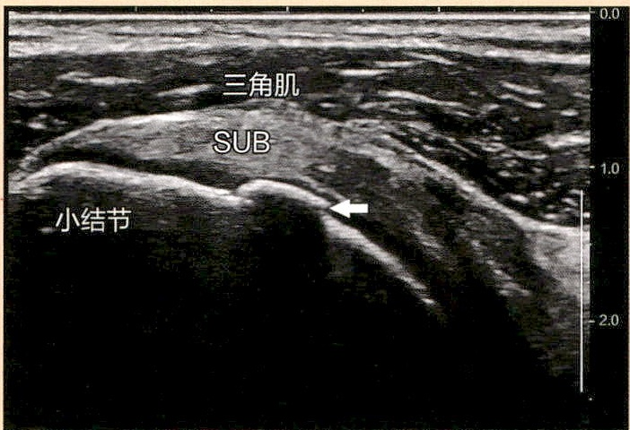
经典病例2：
患者女性，29岁，练习空中瑜伽半年，因“一次训练后出现左侧臀部疼痛并向大腿后部及小腿放射”就诊。上孖肌起自坐骨棘，止于股骨大转子内侧，正常情况下呈平行的带状低回声，中央肌腹处略厚。臀部超声检查发现，左侧上孖肌在股骨大转子附着点处撕裂，肌肉挛缩呈球状，并挤压坐骨神经（图1-1-2）。
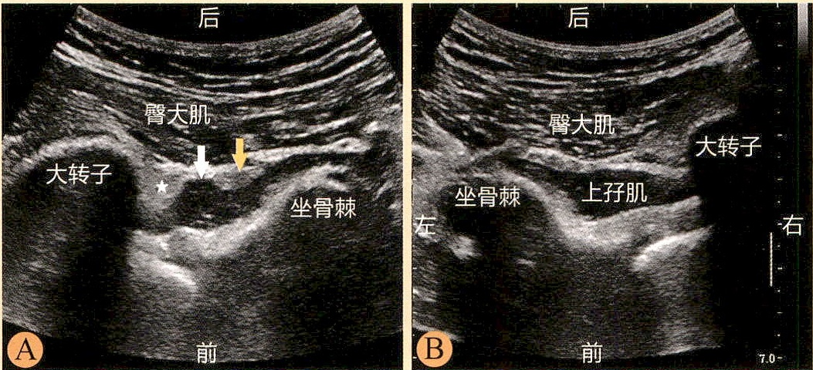
A. 左侧上存肌在股骨大转子附着点处撕裂；B. 右侧正常的上存肌。该患者上存肌在股骨大转子附着点处部分撕裂，局部呈高回声血肿（星号），上存肌挛缩呈球状（白色箭头），并压迫坐骨神经（黄色箭头）。
所以，瑜伽这项运动虽然对人体有益，但是训练还是要适度，有些动作不可强求。
2019年，诺贝尔物理学奖的一半奖金授予了米歇尔·麦耶（Michel Mayor）和迪迪埃·奎洛兹（Didier Queloz）两位科学家。迪迪埃·奎洛兹在日内瓦大学（Université de Genève）攻读博士学位期间，与他的老师米歇尔·麦耶一起发现了第一颗太阳系外的行星——飞马座51b。
在科幻小说中，外星人是一个很重要的设定，要想找到外星人，就必须先在太阳系外找到行星的存在。
由于行星不会发光，要观察到位于遥远的太阳系外的一颗行星，仅依靠提高望远镜的分辨率是远远不够的。只能通过分析相关恒星的细微变化来间接证实行星的存在。
当行星围绕恒星运动时，恒星本身也会受到行星引力的影响，而出现围绕二者质量中心的周期性颤动。在地球上的观察者看来，这颗恒星的颤动会产生多普勒效应，其光谱就会出现周期性的蓝移和红移。通过测量这颗恒星光谱的周期性变化，科学家可以计算出相应行星的质量、距离和运转周期（图1-2-1）。
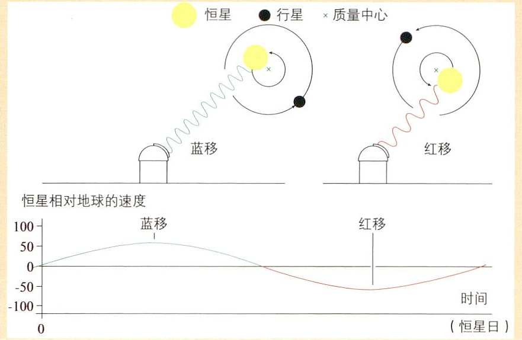
迪迪埃·奎洛兹和米歇尔·麦耶就是通过观察恒星飞马座51的光谱变化，准确地推测出飞马座51中存在一颗行星，并精确计算出了这颗行星的质量、与飞马座51的距离及其运转周期，并在20多年后以此获得了诺贝尔物理学奖。发现了太阳系外行星的存在，就迈出了发现外星人的第一步。
恒星飞马座51的一些变化间接地证实了这颗行星的存在。在医学影像上，也会通过间接征象来判定某些病理改变的存在。这种病理改变可能特别微细，在目前的影像分辨率下难以直接显示，实际上是通过某些间接征象来推测那些细微的病理改变的存在。这种思路与迪迪埃·奎洛兹、米歇尔·麦耶发现太阳系外行星的思路其实是共通的。
附着点炎的一个非常重要的病理改变就是附着点处的骨侵蚀。
经典病例：
患者女性，42岁，因“左手第二指近节指间关节肿痛”就诊。高频超声显示外侧副韧带增厚。二维超声显示增厚的外侧副韧带附着点处的指骨表面似乎非常光滑，没有骨侵蚀的表现。彩色多普勒血流成像（color Doppler flow imaging，CDFI）发现，在指间关节外侧副韧带近节指骨附着点处的骨皮质后方出现了明显的快速闪烁变化的彩色信号（动图1-2-2）。
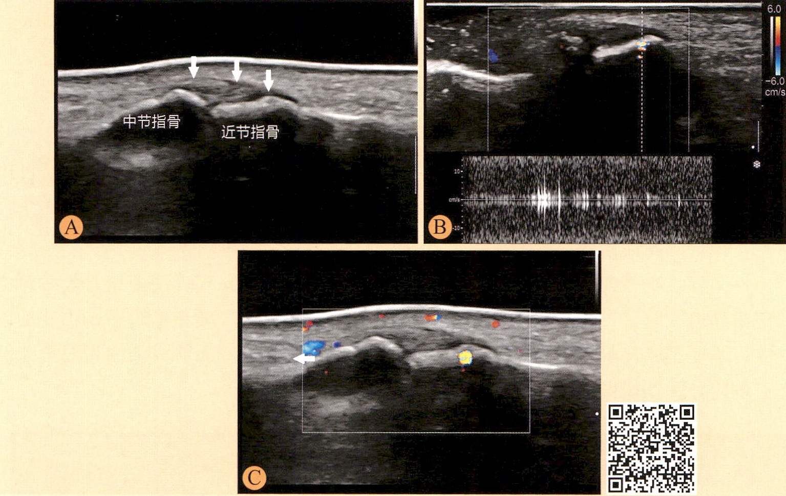
A. 超声显示指间关节外侧副韧带增厚（箭头）；B. 频谱多普勒显示指间关节外侧副韧带频谱；C. CDFI 显示指间关节外侧副韧带血流信号（箭头）。
这种彩色信号是一种伪像——快闪伪像，其出现在表面不光滑的强回声界面的后方。
所以，根据骨皮质后面的快闪伪像的存在，可以大胆地推测：在这个病例中，外侧副韧带近节指骨附着点处的骨皮质表面是不光滑的，存在轻微的骨侵蚀。这种骨侵蚀程度太轻微了，以至于高频超声也难以直接显示，但是CDFI检查发现的快闪伪像提供了有力的证据。因此，根据外侧副韧带增厚伴有轻微的骨侵蚀，就可以诊断为附着点炎。
准确理解和分析看到的一些间接征象，能够帮助超声医师发现一些难以直接显示的细微病理变化。这需要丰富的基础知识的积累，也是影像学的魅力所在。不断地拓宽超声医师的知识面，就会像米歇尔·麦耶和迪迪埃·奎洛兹那样，更快地找到那个传说中的外星人。
沿拇长屈肌肌腱长轴扫查，在第一掌指关节浅方发现拇长屈肌肌腱的连续性中断（图1-3-1）。但是，这一连续性中断并没有伴随肌腱挛缩和功能障碍。其实，这只是一种各向异性伪像。
各向异性伪像是肌骨超声检查中非常常见的一种伪像，纤维性结构与入射声束的夹角稍有变化，回声就可能出现显著的改变，提醒超声医师在平时工作中要加以关注，不要把各向异性伪像当成病变。通过移动探头，改变入射声束的入射角能够修正各向异性伪像带来的回声变化（图1-3-2）。
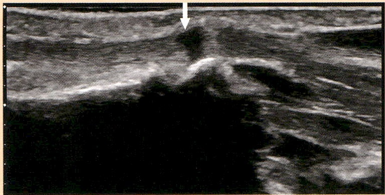
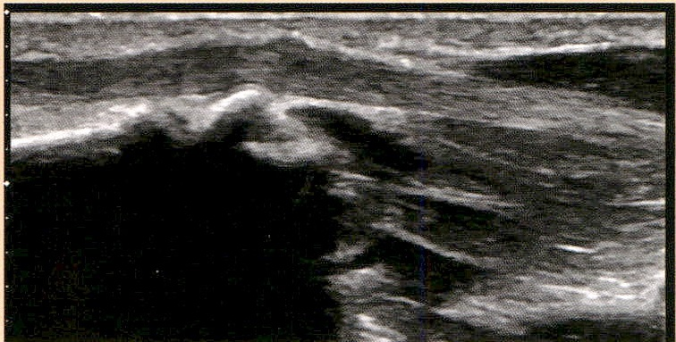
“铅笔帽征（pencil-in-cup sign）”又称“铅笔帽样”畸形，是放射科医师用来描述银屑病性关节炎导致的指间关节或掌指关节变形的一种征象（图1-4-1）。
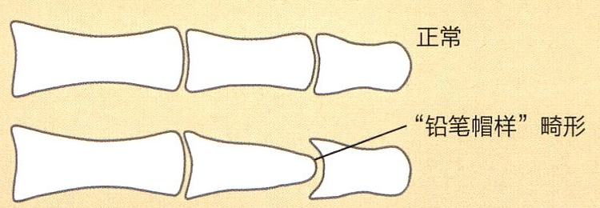
“铅笔帽样”畸形是银屑病性关节炎在X线检查中的典型表现之一，其表现来自关节近端指骨周围的侵蚀和骨吸收，远端指骨增生使其看起来像一只铅笔套在笔帽上（图1-4-2）。虽然“铅笔帽样”畸形是银屑病关节炎的经典表现，不过这种表现也偶尔出现在系统性硬化症、类风湿关节炎或其他反应性关节炎中。
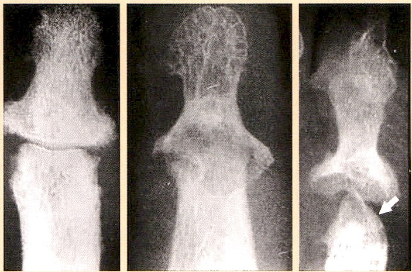
超声检查能够非常方便地评估手部小关节的病变，也是评估银屑病性关节炎的重要手段。除可以评估关节囊增厚、关节积液等关节滑膜炎症改变外，也能够对骨侵蚀、骨增生性病变造成的关节破坏做出判断。同样，利用超声检查也可以显示“铅笔帽样”畸形（图1-4-3～图1-4-5）。
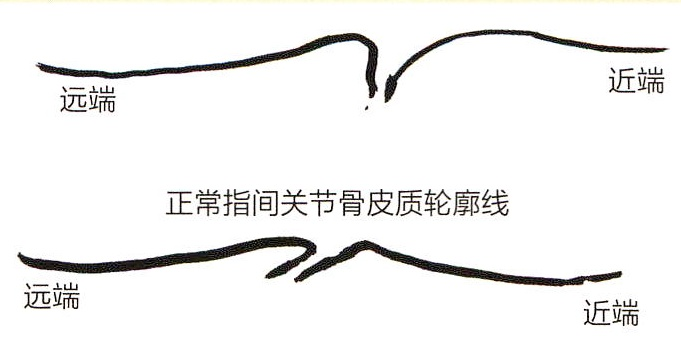
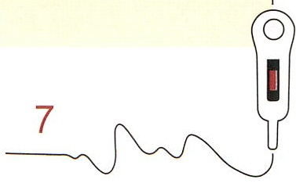
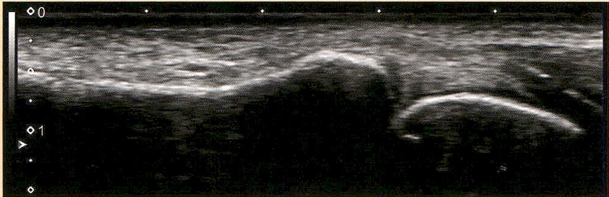
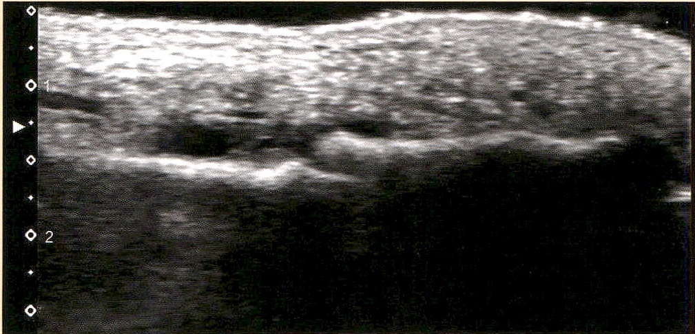
经典病例：
患者男性，73岁，痛风病史10余年，未经系统治疗，因“双手多个小关节附近出现隆起型结节，伴疼痛”就诊（图1-5-1）。近期血尿酸为686 μmol/L（男性正常值为237.9～356.9 μmol/L）。
这些隆起的结节都是痛风石，在超声扫查时由于病变部位与探头接触不佳，图像质量往往很差，尽管使用了大量的耦合剂，图像仍不理想（图1-5-2）。
对于这种耦合不佳的隆起型病变，使用超声导声垫可以大大提高图像的质量（图 1-5-3）。
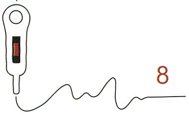
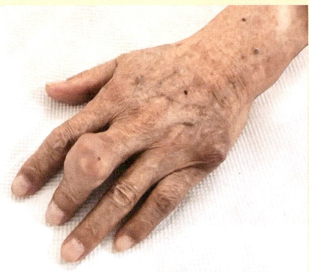
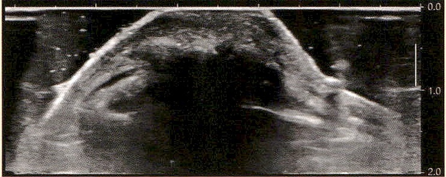
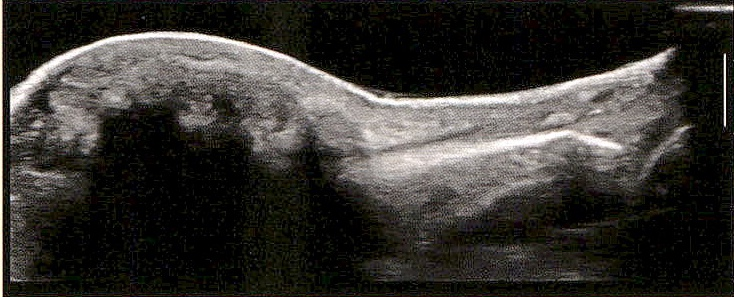
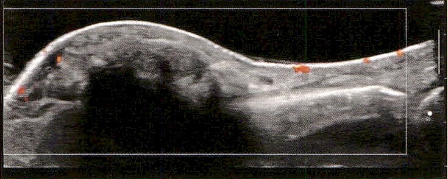
这些回声特点因为痛风石形成时期的不同而有差别，总体为强回声伴声影 + 高回声 + 中等回声 + 低回声混杂在一起的异常回声团，各种回声的比例在每个痛风石中差别很大。一般来讲，痛风石的时间越久，强回声伴声影区域越多（图 1-5-4），而急性发作期低回声所占范围也会越多。通常，低回声代表的是炎性反应区，强回声代表的是所谓的“白垩质”。邻近的骨皮质一般都伴有不同程度的骨侵蚀。
血流信号的多少和低回声区域的范围，可以作为病变处于急性发作期和间歇期的判断依据。本例患者的痛风石内部和周围的血流信号都比较少，病变处于间歇期（图1-5-5）。
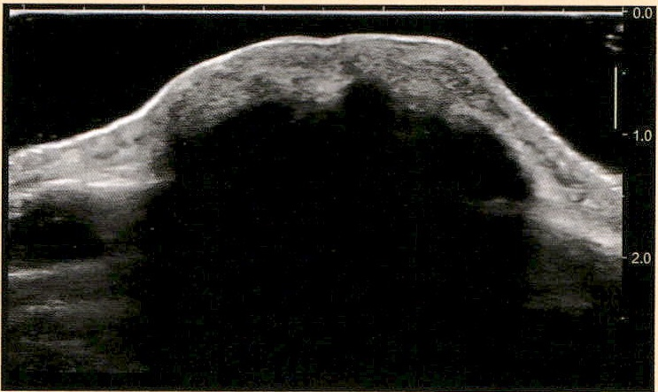
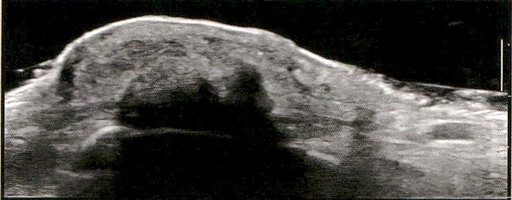
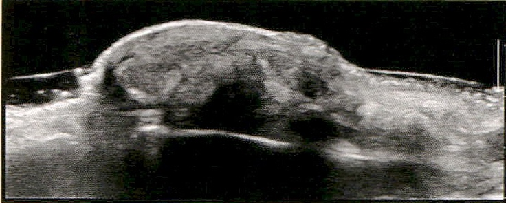
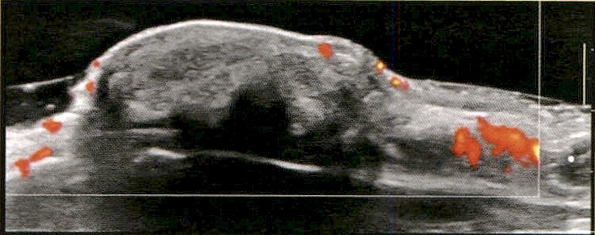
腹直肌分离实际上是指两侧腹直肌之间的腹白线的延展，从而导致两侧腹直肌间隙异常增大。
目前，对 “两侧腹直肌之间的间距增宽到什么程度才诊断为腹直肌分离” 这个问题仍存在争议，通常是由腹部内容物突出（膨出）的程度，而不是增宽的程度来决定是否为病理状态。但是，根据患者性别、产后时间、胎产次数等因素，两侧腹直肌间距＞15 mm 被认为是异常的。一般情况下，多数学者以腹直肌间距＞2 cm
作为诊断腹直肌分离的标准，但正常的腹直肌间距会根据测量白线的水平而发生变化，通常剑突处较窄，靠近耻骨联合处较窄，脐处最宽（图1-6-1）。

A. 上腹部横断面显示正常的腹直肌间距；B. 下腹部横断面显示正常的腹直肌间距。红色区域：腹直肌；绿色线：腹白线；IRD：腹直肌间距。
对于腹直肌分离比较严重的病例，建议采用具有拓展视野的成像技术，即宽景成像技术来测量。腹直肌分离主要发生在新生儿、怀孕期及产后的女性，但也可发生在男性。新生儿腹直肌没有完全发育，可能是没有在中线处连接所致，多见于早产儿。在经产妇女中，由于反复拉伸而导致的腹直肌分离更为常见。
腹直肌分离可以分为5种类型（图1-6-2）。
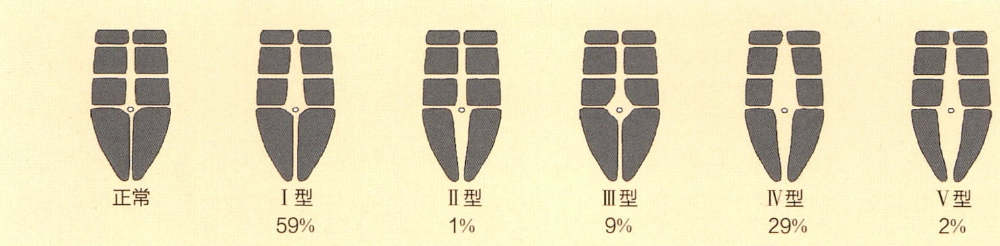
治疗和预后：腹直肌分离除影响美观外，并不存在健康风险。腹直肌分离并不是真正的腹壁疝，因此与绞窄的风险无关。通过腹部成形术进行修复主要是为了美观，更多的是基于腹部突出（膨出）的程度而不是腹直肌分离本身。腹部成形术是通过折叠白线并将其缝合以加固白线处的腹壁来达到效果（图1-6-3）。

鉴别诊断：主要与白线疝相鉴别。白线疝可以显示局部白线的缺损，而腹直肌分离的白线仍是连续的，只是变薄了。白线疝腹腔内容物是通过一个较小的“口”部膨出，腹直肌分离的腹腔内容物是与变薄的白线一起突出，并无“口”的存在（图1-6-4）。

研究表明，腹直肌的厚度与腹直肌分离的发生有明显的相关性。产后的女性通过加强腹直肌的康复和力量训练，可以大大减少腹直肌分离的发生率和降低腹腔内容物的突出（膨出）程度。
爱美之心，人皆有之。美容整形如今已经成为一个非常巨大的产业，在这个巨大的系统中，良莠不齐，其中掺杂着有许多不规范的技术手段。这些缺乏充足循证
医学证据的治疗方法会给人体造成不良反应，甚至会贻害终生，得不偿失。
在 20 多年前，有一种通过注射达到丰胸效果的手术非常流行，注射物也是五花八门。随着时间的流逝，当年行这种注射丰胸手术的患者都出现了各种各样的并发症，其中最为常见的一种并发症就是注射物的异位。
丰胸注射物的种类众多，这些注射物一般应该注射在乳腺腺体后肌肉前的筋膜间隙内。但是，随着时间的推移，在重力作用下，这些注射物会顺着筋膜间隙向下移动，可以异位至腹壁、腰部、腹股沟，甚至大腿的筋膜间隙内，造成人体的不适。
所以，对美的追求还是要有所节制。整形手术应该选择正规的医疗美容机构，选择有确切循证医学证据的治疗手段和材料。
经典病例：
患者女性，52岁，因“腹股沟区包块伴坠胀、疼痛”就诊，自诉20年前在某美容机构做了注射丰胸手术。超声检查显示腹股沟区、侧腰部和腹壁内的筋膜层内存在多发的不规则的低回声区，其内为点状回声，探头加压后有漂浮感，为典型的注射物异位（图1-7-1～动图1-7-5）。
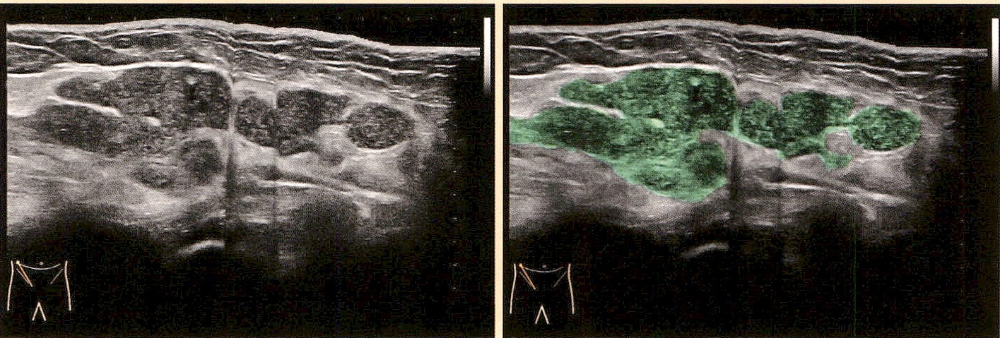
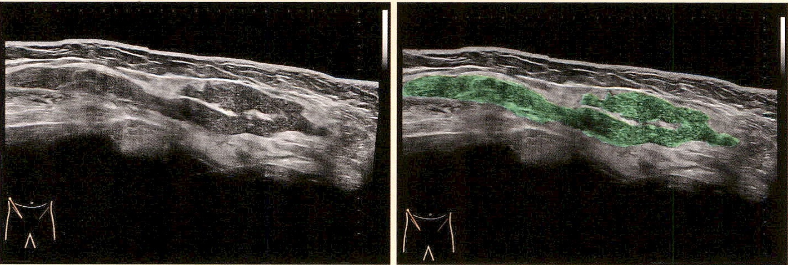
绿色区域：异位的注射物。
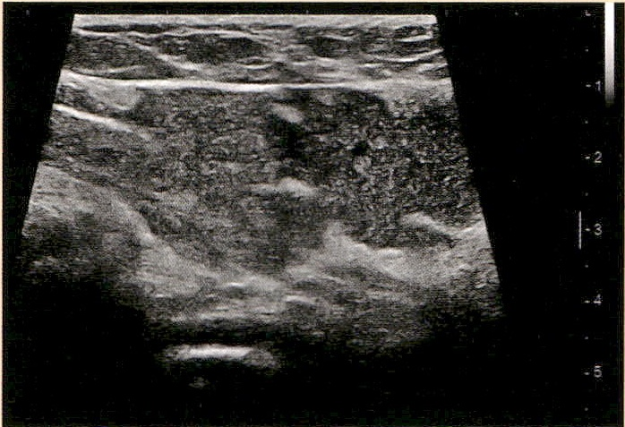
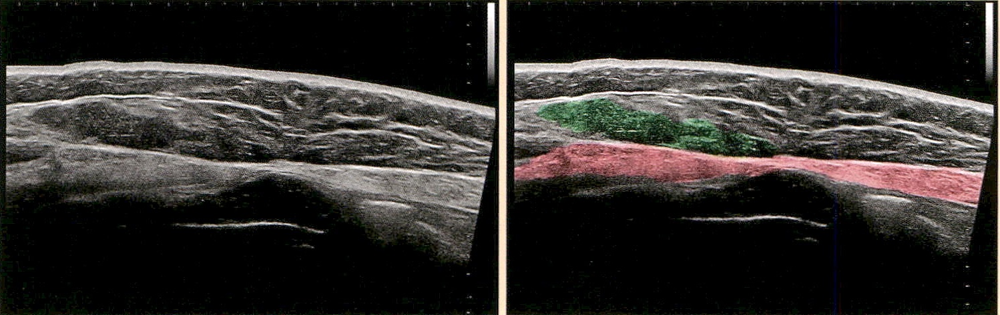
绿色区域：异位的注射物；红色区域：腹直肌。
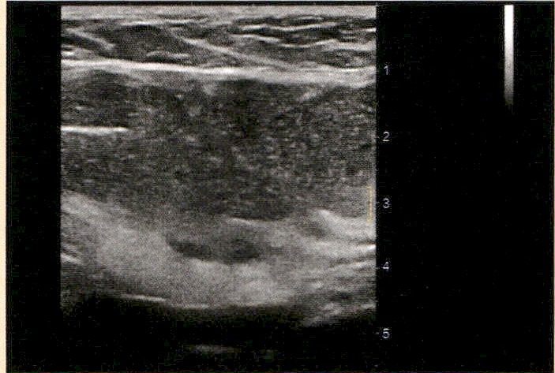
膝盖前部的广泛性疼痛，也称膝前痛，可由多种原因导致，但其中的一个重要原因是 Hoffa 脂肪垫的撞击。Hoffa 脂肪垫是一团脂肪组织，位于髌骨下面、髌腱后面，是髌下区域重要的缓冲结构。正常情况下，超声表现为偏低回声的脂肪团，其内可见“线样”的高回声分隔（图 1-8-1）。

A. 扫查 Hoffa 脂肪垫的探头位置和患者姿势；B. Hoffa 脂肪垫超声表现；C. Hoffa 脂肪垫 MRI 表现。HF: Hoffa 脂肪垫；箭头：髌腱；T: 胫骨；P: 髌骨。
Hoffa 脂肪垫撞击综合征是由直接打击、过伸性损伤或慢性刺激导致 Hoffa 脂肪垫肿胀发炎，经常进行膝盖过度伸展运动的人可能更容易出现这种情况。
Hoffa 脂肪垫撞击综合征很容易与髌骨肌腱炎相混淆，但髌腱炎往往只引起髌腱疼痛，尤其是髌骨下极。Hoffa 脂肪垫撞击综合征会导致脂肪组织所在的髌腱两侧出现疼痛，跳起、长时间站立或其他导致膝盖过度伸展的姿势会加重疼痛。此外，髌腱周围可能有轻微肿胀。Hoffa 脂肪垫撞击综合征与关节绞锁或不稳定无关。
超声检查可以轻松诊断 Hoffa 脂肪垫撞击综合征，多显示为髌腱后方靠近髌骨下缘的脂肪垫回声增强、模糊，其内部原有的纤维索条回声消失。通常，CDFI 不会显示血流的增加。这类患者通常伴有高位髌骨，可以显示髌腱延长，髌腱长 / 髌骨长 > 1（图 1-8-2，图 1-8-3）。
磁共振成像（magnetic resonance imaging，MRI）同样能够显示 Hoffa 脂肪垫的水肿和增厚、髌骨半脱位及高位髌骨等。
Hoffa 脂肪垫撞击综合征的治疗并不困难，但患者需要很长时间才能完全恢复，
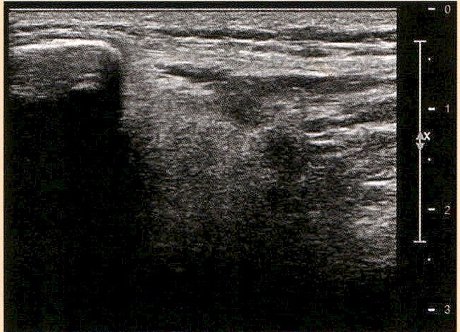
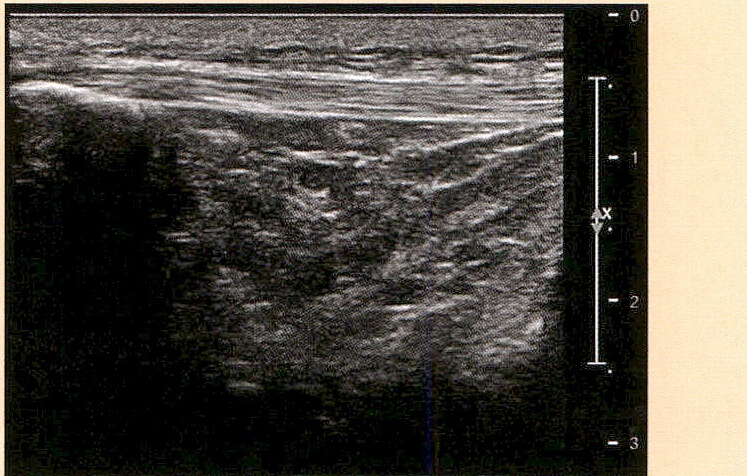
运动前后建议冰敷（用冰袋敷在患处15分钟或用冰块敷8～10分钟）。改变或限制增加疼痛的体位和活动是恢复的另一个关键因素，拉伸股四头肌和髋屈肌可以帮助减少髌骨对脂肪垫的向下压力。另外，可以使用非甾体抗炎药或注射皮质类固醇以减轻炎症。最后，可以通过手术切除脂肪垫，但这是最后无奈的选择，一般情况下尽量选择保守治疗。
膝关节的严重骨关节病会导致关节间隙狭窄，内侧半月板被挤出，状如一朵玫瑰花（图1-9-1）。
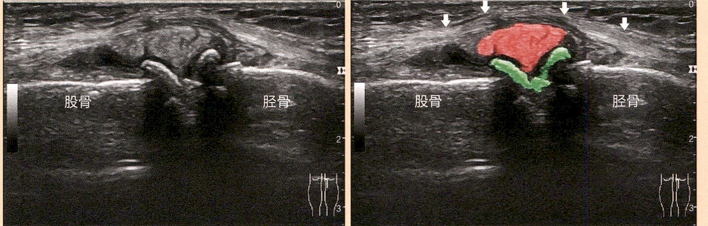
箭头：内侧副韧带；红色区域：挤出的半月板；绿色区域：骨质增生（骨赘）。
膝关节透明软骨的“双轨征（double contour sign）”是痛风患者单钠尿酸盐晶体沉积的特异性征象，但超声医师要注意勿将膝关节积液与软骨表面的界面回声误诊为“双轨征”。泌尿系感染所致的膝关节反应性关节炎，超声显示膝关节内有大量积液（图1-10-1）。在横断面观察关节面透明软骨时，可见到酷似“双轨征”的表现（图1-10-2）。

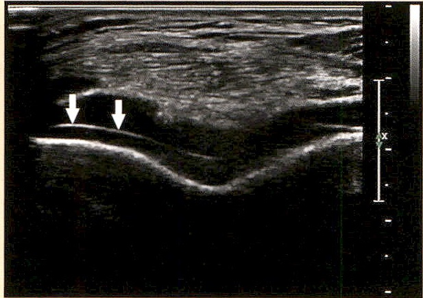
因此，在观察膝关节的透明软骨时要取最大屈膝位，只有液体被挤走，假“双轨征”才会消失。但当有大量积液时，屈膝的幅度受限，某些比较严重的老年骨性关节炎患者屈膝也受限，软骨浅方积液不能完全被挤走，则可出现上述假象。真正的“双轨征”见图1-10-3。
假 “双轨征” 也可出现在第一跖趾关节等处，是一种界面回声，因此，其与入射角度的关系十分密切，可以随着声束入射角度的变化而变化。实时超声检查通过侧动探头以发现其回声变化，其回声甚至可以消失。而真正的 “双轨征” 在侧动探头时回声改变微弱，甚至无变化。另外，假 “双轨征” 只有在与声束垂直的区域变化明显，在与声束不垂直的区域回声减弱，甚至消失。而真 “双轨征” 的回声强度没有这种角度依赖性，回声强弱仅仅与晶体沉积的程度有关。
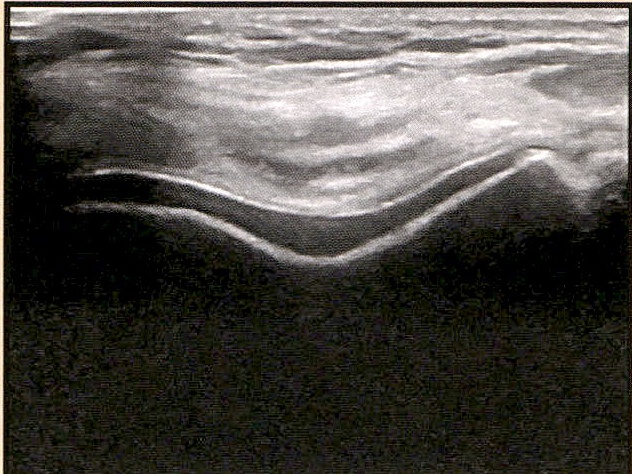
髌骨缺血性坏死（Sinding-Larsen-Johansson disease）是儿童膝关节疼痛的一个常见原因，一般表现为膝关节髌骨下缘处疼痛或压痛。本病也称为髌骨骨骺炎、生长性髌骨炎、青少年髌骨炎、髌骨骨软骨病。
该病由 Sinding、Larsen 和 Johansson 分别于 1921 年和 1922 年报道，是由于髌骨上下极受过度张力或压力导致的骨软骨病，好发于 10～14 岁的爱好剧烈运动的青少年，男性多于女性，常发于一侧，以右侧多见，偶见双侧发病，多累及髌骨下极，常与胫骨结节骨髌炎（Osgood-Schlatter disease）同时存在。
当髌骨上下极骨骺受附着在其上的股四头肌肌腱和髌韧带过度牵拉时，可造成疲劳骨折或应力性骨折，使骨骺血供发生障碍。也有学者认为本病是内分泌紊乱引起的，或与遗传有关。
青少年发病者可在成年后发生高位髌骨畸形。超声表现：①髌骨下极骨折，破碎；②髌软骨水肿；③髌腱附着点增厚，血流增多；④Hoffa 脂肪垫回声增强。
患者男性，7岁，学校足球队队员，每日训练2小时以上，因“膝关节髌下痛”就诊（图1-11-1）。嘱患者加强休息，减少运动。
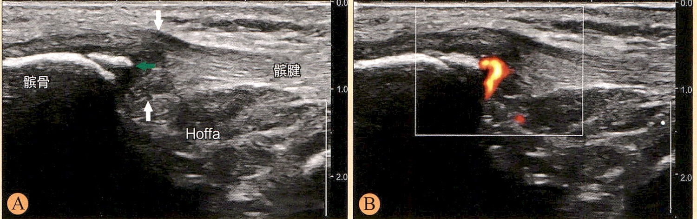
A. 二维超声显示髌骨附着点处增厚、髌软骨水肿（白色箭头），髌骨下极骨折、破碎（绿色箭头为骨化中心的骨折片），Hoffa 为 Hoffa 脂肪垫；B. CDFI 显示局部血流信号增多。
腓总神经由腘窝向外侧绕行过腓骨颈部，此处腓总神经易受卡压，形成腓总神经卡压综合征（图1-12-1）。
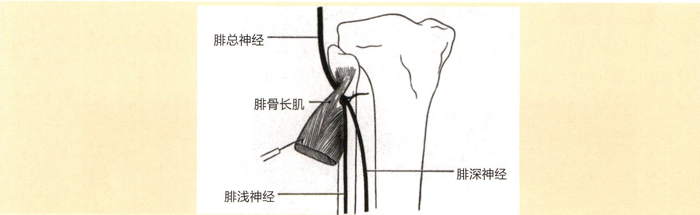
长期跷二郎腿等不良坐姿、骨质增生、石膏支具等都会造成腓总神经卡压综合征（图1-12-2）。
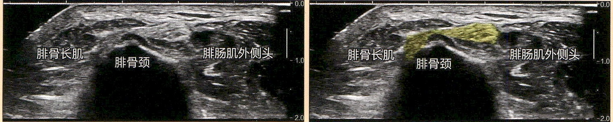
黄色区域：受压变形的腓总神经。
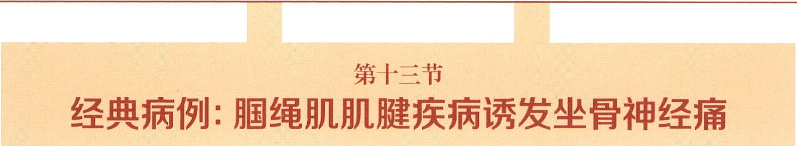
坐骨神经从梨状肌下孔处穿出后，在臀部走行于上孖肌、闭孔内肌、下孖肌和股方肌的后方，下行过程中其内侧紧邻腘绳肌肌腱。
腘绳肌肌腱是指大腿后部的半膜肌、半腱肌和股二头肌长头的联合腱，附着于坐骨结节的后外侧。腘绳肌肌腱的慢性疾病是臀部疼痛的重要原因之一。与其他部位的慢性疾病一样，腘绳肌肌腱疾病也表现为肌腱增厚、回声不均、钙化、纤维结构不清等。腘绳肌肌腱疾病的肌腱增厚可能会累及邻近的坐骨神经，出现典型的坐骨神经痛等症状。
患者女性，53岁，因“左侧臀部近坐骨结节处疼痛，并向大腿和小腿后部放射”就诊。超声检查见图1-13-1，图1-13-2。
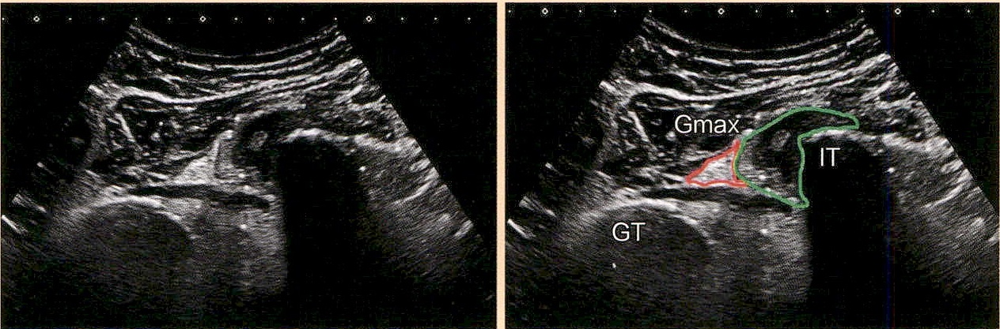
股方肌下缘处横断面扫查。Gmax：臀大肌；IT：坐骨结节；GT：股骨大转子；绿色框区域：增厚的腘绳肌肌腱；红色框区域：受压的坐骨神经，可见坐骨神经的内侧有明显的压迹。
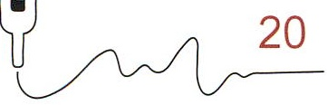
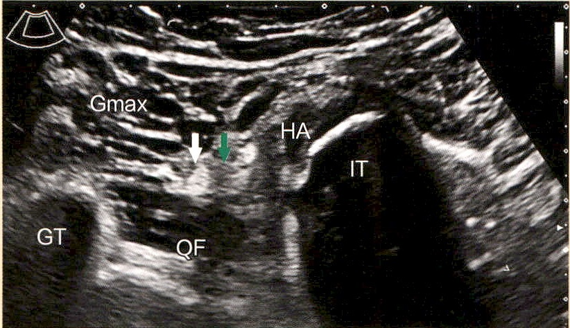
股方肌中部横断面扫查。Gmax：臀大肌；HA：腘绳肌肌腱；IT：坐骨结节；QF：股方肌；GT：股骨大转子；箭头所示为水肿的坐骨神经，其中白色箭头为坐骨神经的腓总神经部分，绿色箭头为坐骨神经的胫神经部分，由于坐骨神经的内侧受压，导致胫神经部分水肿，回声明显减低。
通过一张踝关节的 MRI 横断面学习踝关节的解剖（图 1-14-1）。
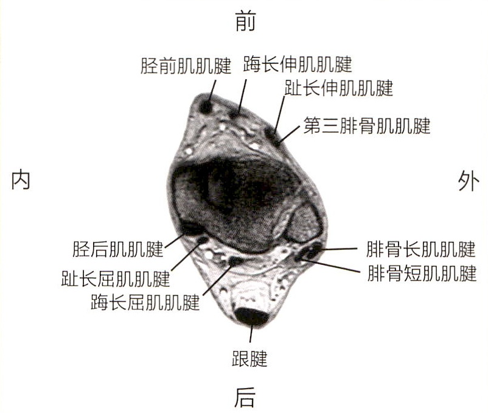
MRI 显示踝关节后部有 1 条肌腱，即跟腱；外侧有 2 条肌腱，即腓骨长肌肌腱和腓骨短肌肌腱；内侧有 3 条肌腱，即胫后肌肌腱、趾长屈肌肌腱和踇长屈肌肌腱；前方有 4 条肌腱，即胫前肌肌腱、踇长伸肌肌腱、趾长伸肌肌腱和第三腓骨肌肌腱。所以，踝关节周围的肌腱分布正好是 “1，2，3，4”，这样就很容易帮助超声医师记忆（图 1-14-2）。
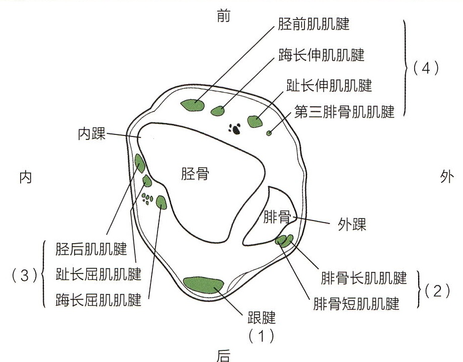
这种用特殊的规律或口诀帮助记忆在英文中称为 “mnemonic”（助记术）。医学的学习过程需要大量的记忆，所以，很多医学生都总结出了一大堆这样的 “助记术”。如上面提到的踝关节内侧的3根肌腱的排列顺序，可以通过 “Tom，Dick and Harry” 这个短语来记忆，还有的学生将该短语改成了 “Tom，Dick And Very Nervous Harry”，把血管神经束的位置关系也描述出来了。
Tom, Dick And Very Nervous Harry
T: tibialis posterior, 胫后肌肌腱;
D: flexor digitorum longus, 趾长屈肌肌腱;
A: artery (posterior tibial), 胫后动脉;
V: vein (posterior tibial), 胫后静脉;
N: nerve (tibial), 胫神经;
H: flexor hallucis longus，踇长屈肌肌腱。
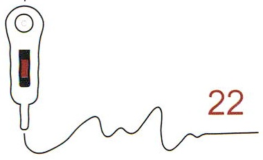
踝关节外侧走行有2条肌腱，即腓骨长肌肌腱和腓骨短肌肌腱。腓骨短肌肌腱位于腓骨（外踝后）和腓骨长肌肌腱之间，容易损伤。当足背屈时，腓骨短肌肌腱在腓骨长肌肌腱和外踝之间反复受到压迫，容易撕裂（图1-15-1）。
一旦腓骨短肌肌腱出现小撕裂，中央部的纤维便开始断裂，就会导致“腰果样”畸形，即“腰果征”。腓骨长肌肌腱向前移入腓骨短肌肌腱撕裂处，进一步阻止愈合。
在 MRI 上，用 “腰果征” 来形容腓骨短肌肌腱部分撕裂（图 1-15-2）。
超声在外踝横断面可以清晰地显示腓骨短肌肌腱和腓骨长肌肌腱的短轴（图1-15-3）。同样，也可以清晰地显示腓骨短肌肌腱部分撕裂形成的“腰果征”，与MRI检查完全一致，还可以显示腱鞘积液和滑膜增生等征象（图1-15-4）。
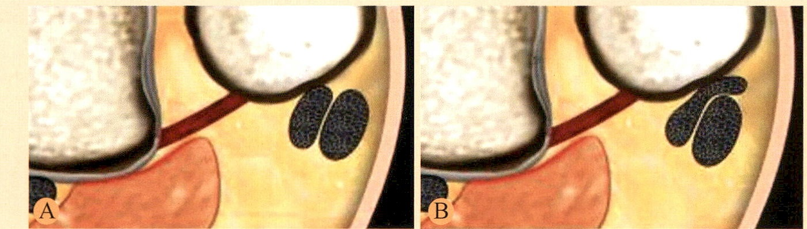
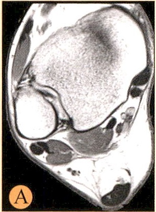
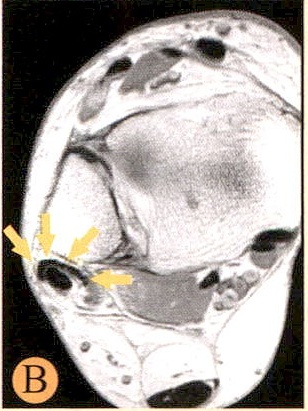
A. 正常的腓骨短肌肌腱；B. 腓骨短肌肌腱撕裂（“腰果征”，箭头）。
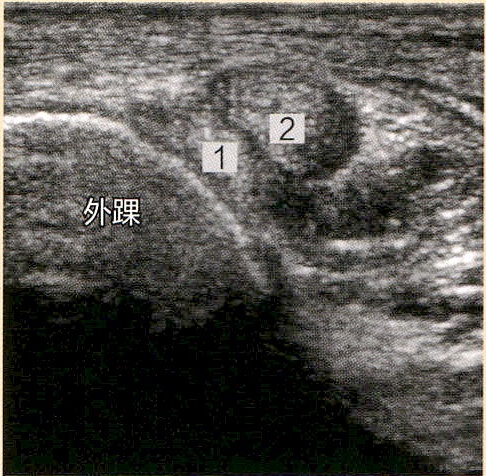
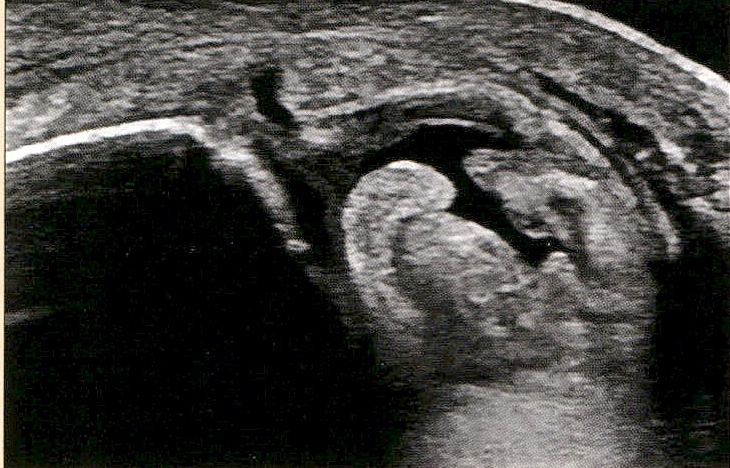
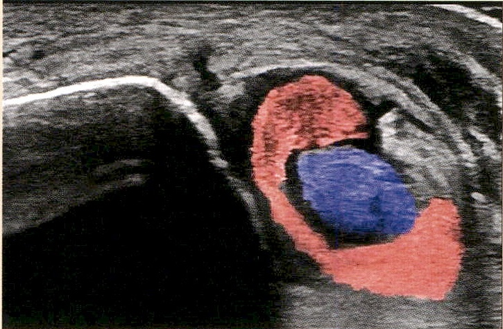
蓝色区域：腓骨长肌肌腱；红色区域：腓骨短肌肌腱。
经典病例：
患者女性，56岁，因“扪及足背部包块伴有搏动”就诊。超声检查显示所扪及的足背部包块为腱鞘囊肿（图1-16-1）。
腱鞘囊肿为什么会有搏动呢？超声检查后真相大白：囊肿将足背动脉拱起，像一座拱桥架于囊肿之上（图1-16-2）。
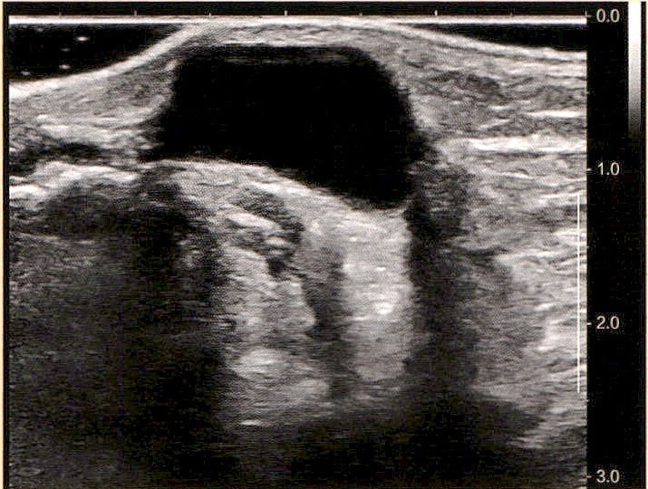
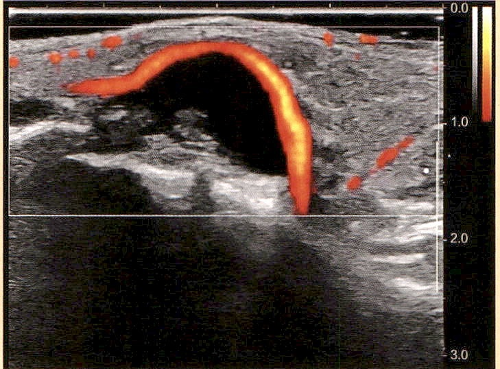
随着人们生活水平的提高，痛风越来越常见。由于人们健康意识的提高，绝大部分患者都够得到及时治疗，所以像这种典型的痛风石病例现在已经很少见了。
经典病例：
患者男性，29岁，高尿酸血症多年，数年前曾经有过一次痛风急性发作，发作缓解后一直未予积极治疗，现因“双侧第一跖趾关节周围逐渐出现质硬包块”就诊（图1-17-1，图1-17-2）。
痛风石通常以肿块的形式出现在被感染关节的周围，是由于长期血清尿酸水平较高（高尿酸血症）导致体内单钠尿酸盐结晶沉积。痛风石是慢性痛风的一种特征表现。
痛风石为坚硬的、无痛性病变，可伴有皮肤颜色改变，可以破溃。有团状的尿酸钠结晶核，被慢性肉芽肿性炎症的纤维血管区包裹。痛风石是一种慢性痛风，通常累及关节囊和近关节软组织，如肌腱或韧带，第一跖趾关节最常见，也可能形成于鹰嘴、髌前囊和耳部。
对于像痛风石这种慢性病，患者需要坚持治疗，如果患者没有足够的意志，往往治疗效果不佳。
图1-18-1中2、3、4、5分别代表第二、第三、第四、第五跖骨短轴。第三跖骨应力性骨折，其声影极“干净”，但声影“干净”并不是好事。这种极其“干净”的声影的形成机制是骨皮质表面不光滑。光滑的骨皮质后方产生混响伪像，后方声影不“干净”。当骨皮质表面不光滑时，会形成一些小界面，声波产生反射、折射等，一部分声波被吸收衰减，后方声影反而“干净”。
2：第二跖骨短轴；3：第三跖骨短轴；4：第四跖骨短轴；5：第五跖骨短轴。
高跟鞋能够让人身材挺拔、提升气质，是很多爱美女性的必选。但是，穿高跟鞋的过程使足部处于一种极端反常的状态，长期穿会造成一些严重的伤害，籽骨炎就是由于长期穿高跟鞋引起的一种常见病变。
第一跖趾关节的足底侧（跖侧）有2块籽骨，它们包埋在跨短屈肌肌腱内，是第一跖趾关节的重要稳定结构（图1-19-1）。
急性损伤或慢性过度使用可引起籽骨炎，表现为足底第一跖趾关节区域的疼痛，籽骨炎还可以由籽骨的应力性骨折或籽骨坏死导致。另外，感染和系统性疾病，如自身免疫性疾病等也可引起籽骨炎。虽然，其他部位的籽骨也可以发生类似的改变，但一般情况下提到的籽骨炎都是指第一跖趾关节跖侧的籽骨炎。
穿高跟鞋时会使跨短屈肌处于紧张状态，同时导致跨短屈肌肌腱内的籽骨压力增大，这也是形成籽骨炎的最常见原因之一。其他好发因素如跨外翻畸形，还通常伴有籽骨脱位，脱位的籽骨也容易引发籽骨炎。此外，短跑、跳跃也是引起籽骨炎的常见诱因（图1-19-2）。
籽骨炎可以通过影像学检查来确诊。X线检查可能会有帮助，尤其是当怀疑籽骨骨折时。但是，有时小籽骨骨折很难在X线检查中充分显示出来。
正常情况下，超声显示籽骨表现为表面光滑、清晰的弧形强回声，伴声影结构（图1-19-3A）。籽骨炎时，超声显示籽骨骨折、破碎，以及籽骨周围软组织的水肿、炎症，导致血流信号的增多等。超声检查方便，可以作为籽骨炎的首选检查方法（图1-19-3B，图1-19-3C）。
籽囊炎的治疗从改变鞋子开始，嘱患者尽量少穿高跟鞋，可以增加鞋内缓冲垫，以缓解受影响籽骨的压力。特定的矫正器也可以用来转移力量，远离发炎的籽骨。其他治疗包括休息、避免刺激骨头的特定活动、使用非甾体抗炎药和冰敷。籽骨从损伤中恢复需要几个月的时间，运动员可能需要长时间的限制负重或行动能力，通常需要3～6个月才能恢复到可以进行体育活动。
在某些情况下，换鞋和休息还不足以缓解不适，此时可选择外科治疗。但是，应特别谨慎选择手术治疗，因为切除1个或2个籽骨往往会导致大脚趾畸形，往往令人难以接受。
患者女性，64岁，因“右小腿后部触及包块”就诊，包块呈条索状，质较硬。超声检查见腓肠肌内“腊肠样”低回声包块，与肌纤维长轴走行一致（动图1-20-1）。CDFI显示包块内部血流极其丰富（动图1-20-2）。
手术后，病理结果显示为肌肉肉芽肿性炎。病理医师提出的肉芽肿性炎，并没有给出病因学诊断，可能是因为病理能够提供的信息比较少，还需要进一步检查以确定病因。在国内，肉芽肿性炎的最主要病因是结核。结核性病变在软组织内形成的肉芽肿性炎其实在影像学上没有特征性改变，这些病变具有所谓的“四不像”特征：既不像典型的肿瘤性病变，也不像典型的炎症性病变，又不像恶性病变，也不像良性病变。
（本病例由浙江省衢州市人民医院陈晓华医师提供）
经典病例：
患者男性，41岁，因“大腿后部肌肉内囊性包块，周围肌肉水肿”就诊，超声检查见动图1-21-1。
囊虫病由猪肉绦虫的幼虫（囊尾蚴虫）感染所致，流行于亚洲的大部分地区，并通过粪口途径传播。中枢神经系统是最常见的寄生虫感染部位，软组织肌肉内的感染多伴有神经系统的感染。
随着卫生水平的提高，我国的囊虫病发病率已经大幅度降低，但在一些地区，该病还是一种严重影响人们健康的疾病。生食被囊尾蚴感染的猪肉（米猪肉）和含有虫卵的蔬菜是主要的感染途径。
理论上，现代化养殖场饲养的生猪感染囊尾蚴的概率非常小，同样，采用现代生产方式生产的蔬菜感染虫卵的机会也非常小。但是，如今有部分人非常推崇所谓的“有机生活”——食用野生放养的猪肉、选择农家肥浇灌的蔬菜等，这些所谓的“健康”的生活方式，却使感染各种寄生虫的机会大大增加，这其中就包括猪肉绦虫的感染。
作为超声医师，有机会看到的病变主要是肌肉和皮下软组织内的囊虫病。肌肉和皮下软组织内的囊虫病典型的超声图像是一个菲薄的圆形无回声结构内伴有强回声的囊尾蚴头节，同时常伴有周围肌肉的水肿和（或）脓肿。经过治疗或自然死亡的囊尾蚴虫的囊壁常显示不清或增厚。
注意以下生活方式，可以大大减少肌肉囊虫病的发生率：①饭前、便后要洗手；②生熟砧板要分开；③生吃蔬菜要洗净。
（本病例由青海省格尔木市人民医院宝利格医师提供）
肌肉脂肪变性并非一个独立的疾病，而是全身性或系统性疾病的一个反应。
骨骼肌脂肪变性在糖尿病中的意义已引起广泛关注。有证据表明，骨骼肌脂肪变性会导致胰岛素异常和糖尿病，甚至可能与整体肥胖无关。最近，有学者提出了一些新的假说，认为骨骼肌脂肪变性与胰岛素抵抗和Ⅱ型糖尿病有关。这些假说表明，脂肪因子的分泌障碍和（或）调节营养血流量对骨骼肌的影响，可能是骨骼肌脂肪变性的重要原因。最近的纵向数据也表明，无论体重如何变化，骨骼肌脂肪变性都会随着年龄的增长而增加。
对称性、孤立性的骨骼肌脂肪变性可能还是自身免疫性疾病的一种表现。这种情况下，受累肌肉仅局限于一块或一组肌肉，其余未受累肌肉往往是正常的。
骨骼肌脂肪变性在超声图像上表现为受累肌肉的回声增强、纤维结构消失、后方常常伴有脂肪散射引起的衰减。
经典病例：
患者女性，50岁，因“双侧大腿后部肿痛，并伴有多处皮下水肿”就诊，超声显示双侧大腿后部半膜肌脂肪变性（图1-22-1）。
临床检查过程中若遇到此类疾病，应建议患者到内分泌科和风湿免疫科就诊，以除外糖尿病或自身免疫性疾病。
A. 左侧大腿后部半膜肌声像图；B. 右侧大腿后部半膜肌声像图；C. 右侧大腿后部横断面全景图。
钙化性肌腱炎是引起肩部急性疼痛的主要原因之一，最常发生于冈上肌肌腱，是由于羟基磷灰石晶体沉积引发了局部炎性反应，进而导致肩部疼痛肌活动受限。
及时清除这些沉积的羟基磷灰石晶体，能够有效地缓解症状、缩短病程。超声引导下的羟基磷灰石晶体的破碎+抽吸是目前最主要的治疗手段。
沉积于冈上肌肌腱内的羟基磷灰石晶体大多数情况下呈膏状，很难直接抽吸，反复穿刺切割虽然能够在一定程度上破碎这些晶体，但有时效果有限，抽吸效果常不理想（图1-23-1）。
有研究者利用脉冲水流冲击这些羟基磷灰石晶体，使其破碎后再抽出，患者反应效果良好。
A. 针插入钙化灶；B. 针插入钙化灶后进行切割、破碎；C. 进针时需要反复地来回穿刺并旋转，尽可能破碎钙化灶。
脉冲水流冲洗术有2种方法：一种是双管法，需要2根空心穿刺针进入钙化灶内，细针用作冲洗管，粗针用作抽吸管（图1-23-2A）；另一种是套管法，将粗细2根空心针以套管的形式穿刺入钙化灶内，细针用作冲洗水流，拔出细管后以粗管抽吸（图1-23-2B）。
A. 双管法：23 G 细针用作冲洗，18 G 粗针用作抽吸，蓝色区域为钙化灶；B. 空心套管法：将 23 G 细管套入 18 G 粗管中，注意细管的长度要长于粗管若干厘米，穿刺时无须同时刺入，一般先将粗管穿刺到位后再放入细管冲洗。
选择细管作为冲洗水流的原因是细管末端射出的水流速度明显高于粗管，冲洗效果比粗管好。冲洗时把 1 mL 注射器连接在细管上，每次用生理盐水 0.5 mL 的流量脉冲式快速冲洗，冲洗 2～3 次后以粗管抽吸。重复上述步骤，尽可能将沉积于冈上肌肌腱内的羟基磷灰石晶体抽吸干净。
有研究者使用单一 20 G 空心管同时完成冲洗和抽吸任务，效果良好。18 G 以上的粗管因射流速度小，冲洗效果不甚理想（动图 1-23-3）。
“对话框征（speech bubble sign）”是肌骨超声检查时描述腘窝囊肿的一个征象，也是腘窝囊肿的特征性征象。腘窝囊肿又称Backer囊肿，实际上是位于腓肠肌内侧头和半膜肌肌腱之间的滑囊积液。这一滑囊与关节腔相通，在正常情况下不能直接显示，当膝关节腔出现内压增高时，关节腔内的积液就会进入这一滑囊内，形成所谓的Backer囊肿。超声在进行横断面扫查时，囊肿位于腓肠肌内侧头和半膜肌肌腱之间的部分向深方延伸，这部分与外凸的囊肿主体一起构成一个非常像对话框的形状，称为“对话框征”（图1-24-1）。
1910 年，Fick 首次在进行 X 线检查时发现关节内存在气体或气泡。之后，这一发现被 Magnusson 于 1937 年称为 “真空现象”。
CT 检查能够非常清晰地显示管内的气体和气泡。这些气泡的形成最初被认为与关节牵引、关节脱位或急性扭伤性创伤有关，但后来发现在关节退行性改变的情况下也会出现。其他有关的病理状况包括韧带损伤、感染（如脓肿和骨髓炎）、癌症（如多发性骨髓瘤）、椎间盘突出症、腹部或胸部游离气体（如消化道穿孔）、气胸、空气栓塞、减压病、医源性原因（如手术时引入空气、关节镜操作）等，也可以伴有关节内气泡形成（图 1-25-1）。
退行性疾病相关的“真空现象”最常出现在骶髂关节，也可在耻骨联合、腰骶间隙、颞下颌关节、腕部、手部、髋关节、肩部、膝关节、踝关节、距下、跟骨等部位发现。
研究发现，关节内气体成分以氮气（ >90%）为主，也混有少量氧气和二氧化碳。
除开放性损伤导致的外源性气体引入外，“真空现象”的形成是解剖学和物理现象结合的结果。关节内的气泡通过流体力学中的亨利定律和波义耳定律导致的空化作用形成，即当关节膨胀（如牵拉）时，关节内压减小呈负压，溶解于关节液中的气体（甚至组织中的气体）就会从溶液中析出，扩张的关节囊内新形成的自由空间需要被填充，主要通过溶液中析出的气体（主要是氮气）来实现（图1-25-2）。
A. 超声检查健康志愿者肩关节在静息状态下肱骨头软骨表面仅偶见小气泡（白色箭头）；B. 在健康志愿者做完肩部剧烈拉伸后即刻行超声检查，发现肱骨头软骨表面微气泡显著增多（黑色箭头）。
在这种情况下，由于关节内压力的变化，通常气体会从局部组织或滑液中析出，这也是被称为“真空现象”的原因。通常情况下，当关节腔恢复到正常的体积和压力时，气体就会回到溶液中。
超声检查时，关节内的气泡呈强回声，这些强回声常常贴附于关节软骨表面或关节囊上，很容易被超声医师诊断为钙化或晶体沉积（如痛风），造成误诊，需要引起警惕。“真空现象”在急性关节扭伤时比较常见，而钙化或晶体沉积通常没有外伤史。
通常情况下，关节内的气泡是可以变化和移动的（图1-25-3）。
A. 超声显示轻微肿胀的距腓前韧带（黄色箭头）和关节内气泡回声（白色箭头）；B. 略微改变体位后，超声显示关节内气泡回声和位置发生了变化。
俗话说 “授人以鱼，不如授人以渔”，进修学习不是仅学会某个具体的病例，而是学会一种学习方法。很多疾病有着特异性的超声表现，而同病异影、同影异病现象也是广泛存在的，肌骨超声中更是存在着很多诊断的陷阱。
经典病例：
患者男性，42岁，因“左足外踝部扭伤1周”就诊，超声扫查距腓前韧带（足踝部最易扭伤的韧带），显示距腓前韧带增厚，其走行区内“?”处可见强回声结构（图1-26-1）。
该患者距腓前韧带内的这个强回声结构是钙化性肌腱炎（图1-26-2），还是撕脱骨折（图1-26-3）。
超声显示强回声边缘为很规整的类圆形，多个角度扫查没有发现特别锐利的边缘，距腓前韧带也基本完好，抽屉试验正常。而且，后方的声影也不“干净”，像是一块正常的骨。此时突然想到曾经把正常的腓肠豆当作异常（图1-26-4）。
那么，该患者距腓前韧带内的这个强回声是否与腓肠豆类似的韧带内籽骨呢？经过查阅相关资料，发现足部有很多籽骨和副骨（图1-26-5）。
通过这些图像，对本例所见强回声是距腓前韧带内籽骨的诊断更加有信心了，于是到放射科调取了患者的踝部 X 线图像（图 1-26-6）。
外踝处腓骨内下方箭头所示的类圆形高密度影，边缘高密度且完整，腓骨下段完整，并且放射科医师给出了这个强回声准确的名字：腓下骨。
华斌注
籽骨是受压较大的肌腱内生成的中小骨，人体中最大的籽骨是髌骨，由股四头肌肌腱骨化而成，其他部位的籽骨不恒定（有的人有，有的人没有）。一般而言，
从事体力劳动或体育运动的人籽骨数较多，多位于足底，肌腱通过关节的附近。在功能上，这些籽骨起到保护肌腱和增加其机械效果的作用，籽骨可能不是双侧对称的。大脚趾的籽骨几乎总是存在，可以在第一跖骨头下面找到，而本例中的腓下骨出现的概率不足0.5%。
通过这个病例可以发现：超声局部分辨率高，但是部位局限，整体性差；X线检查整体性好，但是骨与骨之间有部分重叠；MRI对骨髓水肿敏感，诊断撕脱骨折有很好的敏感性，但是扫查切面固定，分辨率低。所以，各种影像之间的融合、互补才是完整翔实的影像诊断！
（本病例由辽宁省朝阳市中心医院郭志强医师提供）
布鲁菌可以感染全身各个系统，是畜牧业从业者非常常见的一种感染性疾病。虽然，外周神经系统不是布鲁菌感染的主要部位，但有研究表明，有10%～20%的布鲁菌感染病例伴有不同程度的神经损害，不过大多数都比较轻。
现分享一例比较严重的布鲁菌感染影响坐骨神经的病例，以引起超声医师的重视。
经典病例：
患者男性，57岁，牧民，确诊为布鲁菌病，因“左侧坐骨神经病变”就诊，超声检查见图1-27-1。
布鲁菌感染累及外周神经导致如此严重的影像学改变的并不多，但是这一病例提示，在布鲁菌病流行区，对于伴有外周神经症状的患者，要考虑布鲁菌病累及神经的可能性。
最后提醒大家，一定不要相信未经灭菌处理的“鲜牛奶”这些噱头，这些所谓的新鲜食品中隐藏着巨大的安全隐患。同样，那些打着“不用农药，不用化肥”的有机蔬菜和水果也隐藏着巨大的安全隐患。
A. 臀部坐骨神经长轴显示坐骨神经（箭头）增粗、结构模糊，内部伴有钙化和囊性变；B. 臀部坐骨神经短轴显示坐骨神经（箭头）增粗、结构模糊、回声不均；C. 臀部坐骨神经短轴显示坐骨神经（箭头）增粗、结构模糊、回声不均、伴有钙化。
神经卡压性疾病可以导致近端神经水肿，初期的近端神经水肿常表现为神经外膜的增厚和回声显著增强。这些回声增强的神经外膜就像“光环”一样围绕着呈略低回声的神经束。
神经周围的这层清晰的“光环”是神经水肿早期最明显的表现，一般仅见于由神经卡压引起的神经水肿。神经炎引起的神经水肿很少出现这层“光环”(称之为“光环”仅是为了表述上更形象，用“光”来描述超声图像其实是不准确的，准确的描述应该是“强回声环”)。
经典病例：
患者女性，24岁，因“临床怀疑腕管综合征”就诊，超声检查见图1-28-1。
A. 腕管近端横断面显示腕管内正中神经轻度水肿，神经周围可见明显的“光环”（黄色箭头），白色箭头为腕横韧带，UA为尺动脉，RC为桡侧腕屈肌；B. 腕管处正中神经长轴显示“+”处为神经受压处，“×”处为近端水肿的神经，同样可以显示近端神经周围神经外膜增厚、回声增强（黄色箭头），即横断时见到的神经周围的“光环”。
坐骨神经实际上是由两部分组成，即内侧的胫神经部分和外侧的腓总神经部分，此为坐骨神经的两股。这两股神经在腘窝上缘以上被各自的神经外膜包绕，又同时被共同的总神经外膜包绕，两者走行在一起，很难将它们分开。自腘窝起，这两股神经才逐步分开（图1-29-1，图1-29-2）。
坐骨神经由胫神经（绿色）和腓总神经（黄色）两股神经组成。
A. 腘窝上缘横断面显示坐骨神经（黄色箭头）内侧部分即胫神经部分呈正常的高回声筛网状，而外侧部分即腓总神经部分明显水肿、回声减低，SM 为半膜肌，FB 为股二头肌；B. 腘窝中部横断面显示胫神经（黄色箭头，呈正常的高回声筛网状）与腓总神经（白色箭头，水肿回声明显减低）已经分开。
经典病例：
患者男性，43岁，因“背部弹力纤维瘤”就诊，超声检查见图1-30-1。背部弹力纤维瘤有特定的好发部位，即肩胛骨下缘与胸廓间肌层深方。
A. 实物图；B. 背部弹力纤维瘤（箭头）声像图。
近日得到一本陈贻恢先生的旧作《唐诗论丛》，书的前几篇就是讲孟浩然的。作为盛唐时期伟大的山水田园诗人孟浩然，生性豁达，为人正如其名，颇具浩然之气。孟浩然的为人和诗作对当时和后世的诸多杰出诗人都有深远的影响。
孟浩然 52 岁那年，王昌龄被贬路过襄阳。此时的孟浩然患有背疽之症，已经将要愈合。好友王昌龄来了，自然得尽地主之谊，席间觥筹交错，二人交谈甚欢。襄阳邻近汉江，汉江里鱼鲜丰美，于是“浪情宴谑，食鲜疾动”。这一番饮酒食鲜、纵情歌乐后，孟浩然病情加重，一代田园诗大师就此辞世，这也算是真正的“舍命陪君子”了。
孟浩然所患的背疽之症，其实就是背部软组织的蜂窝织炎。皮下的疏松结缔组织感染，由于缺乏屏障会很快蔓延，同时会形成大量大小不等的脓腔，此为蜂窝织炎，糖尿病患者高发。背部疏松结缔组织较厚且易遭到外界创伤，因此是蜂窝织炎的好发部位。超声检查能够显示炎症累及的范围、脓腔形成的情况，并能够于超声引导下对较大的脓腔行穿刺引流。
超声显示病变累及的皮下软组织增厚、回声增强、层次结构不清，病变区与正常区缺乏明确边界，伴有多发的网状的低回声区，这些网状低回声区代表组织间积液，同时可见多个大小不等的低或无回声的脓腔。CDFI 显示增厚的皮下软组织血流丰富，一般为低阻血流信号。
经典病例：
患者男性，82岁，糖尿病多年，因“背部红肿热痛3天”就诊，超声检查见图1-31-1。
想来，孟浩然在背疽将愈之时，又大吃大喝，饮酒作乐，导致血糖飙升、免疫力减低，以至于感染复发加重，进而出现菌血症，导致死亡。

A. 超声显示背部蜂窝织炎局部皮下软组织增厚、回声增强、层次结构不清，伴有多发的网状低回声区；B. 超声显示皮下软组织增厚、回声增强、层次结构不清，病变区与正常区缺乏明确边界，伴有多发的网状的低回声区，以及脓腔形成（箭头），rib 为肋骨；C. CDFI 显示背部蜂窝织炎局部血流增多；D. 微血流成像显示背部蜂窝织炎局部丰富的血流信号。
软组织脱套伤又称为 Morel-Lavallée 损伤，是与严重创伤相关的闭合性脱套损伤，表现为皮下脂肪层与深筋膜层之间的血肿、淋巴肿和（或）脂肪液化性肿块。1848年，法国外科医师 Morel-Lavallée 首次描述了该病，并以名字命名。MRI 和超声检查可提供有价值的诊断。
Morel-Lavallée 损伤通常发生于股骨大转子处，但发生于大腿外侧的病变可以沿着大腿外侧蔓延至膝关节，甚至小腿。另外，发生于腰椎、肩胛骨上方或膝关节上方时也会导致相似的病变，这些区域的病变广义上通常也被称为 Morel-Lavallée 损伤。
Morel-Lavallée 损伤的形成机制见图 1-32-1。
剪切力将皮下脂肪层从深筋膜层上分离，血管及淋巴管分支断裂。
collection：皮下脂肪与深筋膜层间的积液，可以是血肿、血清肿、淋巴肿、脂肪液化，或是以上任意几种的混合物。
当皮肤和皮下脂肪组织由于受到创伤，在剪切力的作用下突然与深筋膜分离时，位于筋膜层的血管、淋巴管分支被切断，典型的 Morel-Lavallée 损伤就发生了。最初的损伤表现为皮下组织脱离筋膜的剪切分离，在筋膜表面形成的潜在空间被各种类型的液体填充，包括血液、血清、组织液、脂肪液化等。最后，这些积液被纤维包裹并持续存在。
超声检查是评估 Morel-Lavallée 损伤的最有效和最简单的检查手段，通常这些积液是低回声或无回声的。与血肿一样，Morel-Lavallée 损伤在急性期主要表现为混杂回声，随着时间推移和肿块的液化，其回声越来越低。内部碎屑包括脂肪球，可导致内部回声复杂，一般可以显示增厚的纤维包膜。由于病变通常范围较大，因此，超声全景成像检查较为方便。
超声可以显示位于皮下脂肪层与筋膜层之间的积液，并能够根据积液内部的回声特点大致判断积液的性质。有时可以在积液内出现分层现象，可能是血清与血细胞的分层，也可能是脂液分层，或者同时存在（图1-32-2，图1-32-3）。
MRI 也是评估 Morel-Lavallée 损伤的极佳手段，能够根据信号判断积液的成分。
47
A. 长轴扫查；B. 短轴扫查。该患者车祸后5天，右侧大腿上外侧肿胀。
该患者车祸后5天，右侧大腿外侧肿胀疼痛，病变上下范围长达40 cm。
Morel-Lavallée 损伤一旦被纤维包膜包裹，一般保守治疗（加压绷带包扎等）效果不佳，手术引流可能是最有效的治疗方法。超声引导下的操作方便、准确，在某些情况下需要手术切除纤维囊以防止再次积液。
经典病例：
患者女性，45岁，因“肘关节外侧肱骨外上髁处压痛”就诊，为典型的“网球肘”表现，超声显示伸肌总腱附着点处增厚、回声减低（图1-33-1）。
在图1-33-1B中，可以看到3部分相互独立的彩色信号：第一部分是伸肌总腱内增多的真正的血流信号，反映了病变处于急性炎症期；第二部分是第一部分信号的“镜面伪像”，由箭头处骨皮质构成的镜面所致；第三部分则是“快闪伪像”，其出现提示该处的骨皮质表面不光滑，存在轻微的骨侵蚀，这种骨侵蚀非常轻微，以至于在二维超声下并不能直接显示，而“快闪伪像”放大了这一效应，可以作为判
断该处骨皮质存在骨侵蚀的间接证据，这也是“网球肘”的表现之

A. 伸肌总腱附着点处增厚、回声减低；B. CDFI 可见 3 部分相互独立的彩色信号（1、2 和 3），形成机制各不相同。
“carpal boss”一般翻译为“腕背部隆突”，其中“boss”不是“老板”的意思，而是“凸起，突出”的意思，临床对腕背部隆突并出现疼痛的疾病称为腕背部隆突综合征。
腕背部隆突综合征是指第二、第三掌骨基底部背侧的骨质增生，而表现为第二、第三掌腕关节背侧隆突畸形及疼痛等症状。本病由 Fiolle 首次描述，因其临床意义不大，常被忽视或误诊为手部其他疾病。本病的病因和发病机制尚不清楚，存在多种说法。有学者认为是职业性劳损导致，其发病与手部过度机械运动、反复刺激局部、缺血、无菌性炎症导致骨质增生等有关。还有学者认为是先天性茎突（第九腕骨）或儿童骨折后导致，也可能继发于桡侧腕伸肌附着处的骨膜炎或先天因素等。
腕背部隆突一般无临床意义，部分患者会出现症状，主诉腕背部逐渐隆起小包块，伴疼痛或酸痛，尤其在腕用力活动或长时间劳动后更明显，疼痛偶尔可放射至手指部，持物及劳动时腕部无力，但不影响腕关节活动。体格检查发现第二和第三掌腕关节背侧隆起畸形、质硬，在腕掌屈时更明显（图1-34-1），压迫肿块可产生疼痛。
超声检查可见第二和第三掌骨基底部有骨质增生，向背侧隆起，偶尔可见掌腕关节间隙变窄，毗邻骨质回声增强，关节面不平整。
经典病例：
患者男性，42岁，因“腕背部第二掌骨底部出现隆起型包块”就诊，有轻微的压痛，临床医师怀疑为腱鞘囊肿。超声检查见图1-34-2。
CB为腕背部隆突，因为腕背部隆突的骨质增生、表面不光滑而出现了后方声影特别“干净”的现象。
经典病例：
患者男性，14岁，血友病，因“膝关节不适”就诊，超声检查显示膝关节内有大量的滑膜增生，增生的滑膜组织内可见多发的灶状高回声区（图1-35-1）。
关节出血是血友病患者中最常见的出血事件，复发性关节积血引发慢性关节病，这是血友病患者中最常见的并发症。复发性关节积血诱发关节内滑膜增生、渗出是血友病性关节炎的主要征象，后期会出现关节软骨的破坏，甚至骨皮质的破坏。
超声是评估血友病患者的关节疾病（关节积液和滑膜肥大）和退行性损伤（骨软骨改变）的主要手段。总的来说，超声能够识别关节内或关节外渗出、滑膜增生，是识别急性事件（如关节积血）最快和最可靠的检查方法。此外，超声在患者随访中提供的信息可能会影响个性化的治疗决策。血友病专家将超声作为常规临床检查的一部分，可以优化诊断工作流程，避免额外的费用和患者的长时间等待。在综合护理方法的框架下，超声可能代表了一种早期检查和监测血友病患者滑膜肥大和骨软骨变化的策略，从而扩展了临床检查，并有助于通过 MRI 等来评估要检查的关节。
关节内出血可诱发关节炎滑膜增生，增生的滑膜内大量的吞噬细胞吞噬含铁血
黄素并聚集，使得血友病患者的关节滑膜增生通常回声较强。本病例中增生的滑膜内这些灶状的高回声可能有2个原因：①吞噬细胞的聚集团；②增生滑膜内的新鲜出血灶。这种类型的滑膜增生在血友病患者中具有一定的特异度。
（本病例由湖北省黄石市第二医院刘枝红医师提供）
丛型神经纤维瘤是Ⅰ型神经纤维瘤病在外周神经的表现之一。
神经纤维瘤病（neurofibromatosis）是一种常染色体显性遗传病，可能起源于神经嵴，影响所有胚层，因此，可以累及任一系统。神经纤维瘤病不是单一的实体瘤，而是一种异型性的多系统神经皮肤疾病，可分为2种类型，分别由NF1或NF2基因种系突变或新突变所致。Ⅰ型神经纤维瘤病（NF1）的突出特征为皮肤多发性牛奶咖啡斑及神经纤维瘤（可恶变），约为85%；Ⅱ型神经纤维瘤病（NF2）常表现为双侧听神经鞘瘤、椎管内多发性神经鞘瘤或单侧听神经鞘瘤伴单发或多发性脑膜瘤，为10%～15%。
“牛奶咖啡斑（café-au-lait macules）”是一种平的浅褐色的胎记。café au lait 是法语，意思是“牛奶加咖啡”，指浅褐色，由一组聚集于表皮的产生色素的黑色素细胞生成。这些斑点通常是永久性的，并可能随时间延长而面积增大或数量增加。“牛奶咖啡斑”通常无害，是Ⅰ型神经纤维瘤病的一个临床表现。Ⅰ型神经纤维瘤病在皮肤软组织的表现可以分为3种类型：结节型、丛型和弥漫型。
丛型通常累及一长段神经及其分支，常常蜿蜒呈“蛇状”走行，一般呈低回声，其病变内常常伴有灶状的高回声区，使病变的局部成像为所谓的“靶征”。弥漫型表现为弥漫性的皮下软组织增厚、回声增强，并伴有“裂隙样”或“微小结节样”低回声。
经典病例：
患者男性，9岁，确诊为Ⅰ型神经纤维瘤病，因“额部皮下包块”就诊，超声检查可见额部皮下软组织增厚、回声增强，其内可见大量边界清晰的低回声结节，这些低回声结节多成串排列，部分结节内可见灶状的高回声区，形成“靶征”（图1-36-1，图1-36-2）。
近端指间关节周围胶原沉积症（pachydermodactyly），是一种以近端指间关节周围非炎性膨大为主要表现的良性病变。1975年，Verbov首先将本病独立于指节垫外进行报道，并将代表该病特点的希腊语pachy（厚）、derma（皮）、dactylos（指）3个词拼接为“pachydermodactyly”而正式命名。有学者根据病理改变按精确命名法将其译名为“近端指间关节周围胶原沉积症”，也有学者按希腊语原文词义将其译为“厚皮指症”。
近端指间关节周围胶原沉积症是一种临床上较少见的良性、获得性、局限于手指皮肤的纤维瘤病，好发于青少年，男性多于女性，男女发病率之比约为5:1，偶见于老年人。其特征性改变为近端指间关节两侧皮肤增厚，软组织扁平梭形膨大，呈“踩扁状”（图1-37-1）。
通过文献查询，本病多以个案报道为主，却已屡见不鲜，但论文作者都集中在风湿免疫科、皮肤科和极少数的手外科，未见超声相关报道（可能因数据库有限而漏查）。由于肌骨超声的发展，使超声医师有更多机会对近端指间关节周围胶原沉积症进行深入研究。
经典病例：
患者男性，14岁，因“左手中指近端指间关节梭形肿胀1年，指关节屈侧及伸侧无明显增厚，关节两侧缘皮肤增厚，无明显疼痛，为患者无意中发现，怀疑关节炎”就诊，患者既往体健，家族中无类似疾病。体格检查：左手中指近端指间关节无压痛及挤压痛，关节活动正常，皮肤温度正常，无炎性改变，无骨摩擦感、无晨僵和全身症状。
实验室检查：血常规、尿常规、抗链球菌溶血素 O 试验、类风湿因子（rheumatoid factor，RF）、抗环瓜氨酸肽抗体、抗核抗体、红细胞沉降率（erythrocyte sedimentation rate，ESR）、C 反应蛋白（Creative protein，CRP）等，均无异常发现。
X线检查：左手中指近端指间关节周围软组织肿胀，骨与关节无异常。
超声检查见图 1-37-2。此病例根据临床表现、影像学检查及实验室检查，诊断为近端指间关节周围胶原沉积症。
本病的病理表现为表皮过度角化，真皮层大量胶原纤维沉积增厚，成纤维细胞增生不明显，故临床上更倾向于命名为“近端指间关节周围胶原沉积症”。1998年，Bardazzi等根据该病形态学、病因学及病理学表现，将其分为5种类型：①经典型，常与机械创伤有关；②单发或局限型；③跨关节型，皮肤增厚伸展到掌指关节；④遗传型，家族性发病；⑤与结节性硬化症相关型。
A. 超声显示左手中指近端指关节掌侧皮肤、滑膜无明显异常；B. 超声显示左手中指近端指关节尺侧真皮层明显增厚；C. 超声显示左手中指近端指关节桡侧真皮层明显增厚；D. CDFI 显示左手中指近端指关节两侧增厚，真皮层血流无明显异常。
本病的典型临床表现为慢性无痛性近端指间关节两侧膨大和肿胀，不伴关节红肿热痛、畸形或活动受限。实验室检查及肝肾功能均无异常，最易累及双手近端指间关节示指、中指、无名指，但也有小指、拇指近端指间关节，甚至远端指间关节、膝关节、踝关节等受累的临床报道。
本病的发病机制至今未明，因多发于青年男性，故有学者认为可能与青春期激素水平变化有关。也有学者认为本病可能是青少年强迫症的重要线索和皮肤病后遗症，多数学者还认为与青少年不断扳动手指发出弹响的不良习惯有关。
本病呈良性经过，预后良好，可不予任何治疗措施，外科手术可以恢复关节正常外观，但是否存在术后复发问题，尚缺乏随访资料。嘱患者改掉扳手指及弹响指的不良习惯对本病的恢复有益。
为了避免不必要、不恰当的治疗，本病的鉴别诊断至关重要，临床上需要与幼年类风湿关节炎、指节垫、骨膜增生厚皮症等疾病相鉴别，尤其需要与幼年类风湿关节炎进行鉴别诊断，后者除近指关节梭型肿胀外，常累及双手掌指关节、腕关节等，同时伴有关节疼痛，多呈对称性肿痛。另外，超声检查可为鉴别诊断提供非常有价值的信息，如关节滑膜是否增厚、其他关节是否受累及近端指间关节两侧软组织肿胀的原因。近端指间关节两侧皮肤真皮层增厚而关节滑膜无改变也是本病在超声检查中最有价值的表现。
综上所述，本病并非罕见，但目前尚无发病率的报道。本病预后良好，开展肌
骨超声的医师对本病进行一次深入的研究很有必要，可避免对患者进行不恰当的检查及治疗。
（本病例由浙江省丽水市人民医院超声科许敬华医师提供）
经典病例：
患者男性，22岁，因“吞咽时右侧颈部隆起4年”就诊（图1-38-1），超声检查甲状腺正常（图1-38-2），没有发现颈部存在客观的肿块，检查过程中嘱患者吞咽，可见右侧颈部有局部隆起性包块，吞咽结束后消失。右侧颈部隆起的包块为胸锁乳突肌抬升，系吞咽时被右侧肩胛舌骨肌抬高所致；双侧对比发现，右侧肩胛舌骨肌前后径增大，回声增强，吞咽时肩胛舌骨肌被动运动，将胸锁乳突肌在其与肩胛舌骨肌交叉处抬高，局部隆起（图1-38-3，图1-38-4）。超声诊断为右侧肩胛舌骨肌病变，考虑肩胛舌骨肌综合征。
肩胛舌骨肌位于颈前部，属于舌骨下肌群，呈左右对称性分布，位于胸锁乳突肌的深方，胸骨舌骨肌的外侧，从颈内静脉前方跨过，为细长带状肌。肩胛舌骨肌起于肩胛骨上缘、肩胛横韧带，止于舌骨体外侧，在胸锁乳突肌和颈内静脉交叉区域间走行，跨过颈内静脉后向后外侧延伸，整体呈斜行，分为上腹、下腹，由位于胸锁乳突肌下部深面的中间腱相连。肩胛舌骨肌由颈袢 C₁ ∼ C₃ 支配，主要作用为
下降舌骨。肩胛舌骨肌超声表现为起于肩胛骨并向舌骨方向延伸的带状肌肉，吞咽时肩胛舌骨肌可被动抬起。尸体解剖标本的肩胛舌骨肌如图1-38-5所示，超声可清晰显示肩胛舌骨肌的正常解剖结构及周围毗邻组织关系（图1-38-6）。
黑色箭头：肩胛舌骨肌；白色箭头：胸锁乳突肌。
箭头：肩胛舌骨肌；IJV：颈内静脉；CCA：颈总动脉。
肩胛舌骨肌功能完好就能够顺利完成吞咽动作，吞咽时舌骨上肌群收缩，舌骨上抬，推挤食物向下移动以完成吞咽，吞咽完成后舌骨复位，该过程中肩胛舌骨肌只能在中间腱的限定范围内运动。由于中间腱的存在，肩胛舌骨肌上腹及下腹能够持续改善颈部压力，可以有效缓解在吞咽时肩胛舌骨肌对颈动脉的压迫。
肩胛舌骨肌综合征在颈部可以形成良性肿块，是一种比较少见的累及颈部横纹肌和以吞咽时出现颈部隆起性肿块为特征的疾病。1978年，叶必远教授首先报道了本病，本病临床罕见，影像学诊断也存在一定的困难。肩胛舌骨肌综合征一般单侧发病，表现为特征性的吞咽时不适或压迫感，伴随患侧出现隆起性肿块，吞咽完成，舌骨下降后肩胛舌骨肌也回复原位，胸锁乳突肌不再被推起而肿块消失。其病理基础是肩胛舌骨肌肌纤维局部纤维化而使肩胛舌骨肌变短、松弛及肩胛舌骨肌中间腱的松弛。有研究证实，肩胛舌骨肌综合征在超声检查时可以发现肩胛舌骨肌的病理性改变，如肩胛舌骨肌增厚、肌纤维局部纤维化。中间腱的增厚和吞咽时位移改变是包绕固定中间腱的腱鞘及中间腱异常所致。当患者吞咽时，肩胛舌骨肌不能有效伸长，失去约束的中间腱将向外侧、浅表移动，肩胛舌骨肌后方的锁骨端中后缘或斜方肌前缘代替中间腱而成为新的着力点，舌骨向上运动，病变的肩胛舌骨肌病态性紧张，将与之呈“X状”交叉的前方胸锁乳突肌被动抬起，这就是其形成颈部包块的原因。
肩胛舌骨肌综合征从临床意义上讲，属于良性病变，虽然颈部包块影响美观，但不会产生其他不良后果。因此，治疗方面临床尚存在一定分歧，可以保守治疗或手术治疗。
（本病例由广西医科大学第一附属医院超声科刘耀利医师提供）
小朋友都喜欢恐龙这种奇形怪状的史前生物，高棘龙大概是其中非常有特色的一种恐龙了，它的背上有尖刺，肩胛部各有2颗长刺，给人印象最深的大概就是它的尾巴了——高棘龙的尾巴上也长着尖刺（图1-39-1）。
有几种软组织肿瘤或包块的边缘会伴有“尾巴样”的结构延伸，如神经鞘瘤、硬纤维瘤、结节性筋膜炎等，识别这些“尾巴”对于鉴别诊断有一定的意义。
筋膜来源的肿瘤或肿瘤样增生性病变会沿着筋膜的边缘延伸，形成所谓的“尾巴样”结构，称为“筋膜尾征”。筋膜来源的肿瘤或肿瘤样增生性病变的生长方式往往都具有一定的侵袭性，因此，这些病变的尾巴通常是不规则的，常会伴有一些向外的侵袭和突起，就好像尾巴上长了刺一样，可以称这样的尾巴为“高棘龙的尾巴”。这些“带刺的尾巴”的存在是判断病变起源于筋膜的一个较为典型的征象。这与神经鞘瘤的光滑的“尾巴”有所不同（图1-39-2～图1-39-4）。
足底筋膜炎是足跟痛最主要的原因之一，属于常见病。超声是诊断足底筋膜炎最简便、可靠的影像学检查手段。
足底筋膜为多层纤维腱膜，厚度为 1∼2 mm，有内侧带、中央带和外侧带。
足底筋膜炎的影像特征：①跟骨附着点处足底筋膜增厚，尤其是跟骨内侧；②足底筋膜厚度＞4.5 mm（最有用的标准）；③足底筋膜表现为低回声；④筋膜清晰度下降；⑤筋膜周围水肿；⑥足跟脂肪垫水肿、破裂和萎缩；⑦骨刺位于筋膜深处，而不是在筋膜内；⑧1/3的病例表现为双侧；⑨对侧的亚临床疾病并不少见，因此不能将对侧作为内部正常参考；⑩一般的文献中描述足底筋膜炎通常是血流信号没有增加，实际上是因为深度、衰减等原因导致的显示问题，通过提高仪器的灵敏度，改善仪器的设置，可以显示绝大部分急性发作期的足底筋膜炎血供是增加的。
患者女性，43岁，因“足跟痛”就诊，超声检查见图1-40-1。
A、B. 超声显示足底筋膜跟骨附着点处增厚（红色区域，最厚处为 8.4 mm），回声不均匀降低、纤维结构模糊不清；C. 能量多普勒超声显示局部血流信号增多；D. CDFI 显示局部血流信号增多。
足底筋膜炎的治疗以休息、理疗等保守治疗为主，可以辅以超声引导下的干预治疗（图1-40-2）。超声引导下富血小板血浆（platelet-rich plasma，PRP）注射治疗，对于长期疼痛不能缓解者有一定的疗效。
长箭头：穿刺针；三角箭头：足底筋膜。
肋软骨炎是一种比较常见的、自限性的、多发的肋骨－软骨连接和（或）肋软骨－胸骨连接处的疼痛性炎症，常伴有明显的触痛。注意与肋软骨非感染性炎症（又称为Tietze综合征）相鉴别，Tietze综合征相对罕见。
肋软骨炎的临床表现：①胸壁疼痛剧烈，疼痛犹如重物压迫；②疼痛局限于多个肋软骨连接处，通常好发于第二至第五肋接合处，特别是第三、第四肋，通常是单侧的，上半身运动、深度吸气和锻炼会使病情恶化；③有压痛和触碰痛；④受累处无明显的外观肿胀。对于35岁以上的患者，首先应排除更严重的胸壁疼痛的原因，如缺血性心脏病。
肋软骨炎的病理：本病的发病机制尚不清楚，可能为神经源性和（或）肌肉骨骼结构的功能障碍。
肋软骨炎典型的超声表现为：①受累肋软骨的水肿（正常肋软骨超声短轴扫查呈扁椭圆形，水肿的肋软骨呈圆形或类圆形）；②受累肋软骨边缘不清、毛糙；
③受累肋软骨周围软组织回声增强、模糊；④受累肋软骨边缘钙化，后方回声衰减增加（肋软骨的正常骨化和钙化发生在中央）；⑤通常无血流增多现象（图1-41-1）。
白色箭头：正常肋软骨；黄色箭头：病变肋软骨。
肋软骨炎的治疗和预后：在大多数情况下，本病是一种自限性的疾病，可以在几周到几个月内痊愈，偶尔会持续1年，非甾体抗炎药可以控制疼痛。嘱患者避免做任何加剧疼痛的活动，临床上很少需要对受影响的病变处进行超声引导下的皮质类固醇注射。
骨嗜酸性肉芽肿（eosinophilic granuloma of bone）是局限于骨组织细胞增殖症，属于朗格汉斯细胞组织细胞增生症的一种类型，病理表现为溶骨病损内伴有组织细胞和嗜酸性粒细胞浸润。骨嗜酸性肉芽肿约占朗格汉斯细胞组织细胞增生症的70%。本病的病因和发病机制至今仍不清楚，目前认为是一种免疫调控异常而非肿瘤性过程，但在世界卫生组织（World Health Organization，WHO）公布了第四版《骨与软组织肿瘤分类（2013年）》中，朗格汉斯细胞组织细胞增生症已被划入“未明确肿瘤性质的肿瘤”范畴。
骨嗜酸性肉芽肿好发于20岁以下的青年人，男女发病率之比约为2.5:1。全身骨骼均可受累，但多为单骨受累，尤其是颅骨。由于本病具有炎症和肿瘤的双重特
征，临床表现多样，诊断较为困难，误诊率较高。
经典病例：
患者女性，24岁，因“左颞枕部皮下包块疼痛”就诊，无其他不适，神志清，四肢活动可，病理检查呈阴性。实验室检查：嗜酸粒细胞轻度增高，ESR增快。超声显示左颞枕部颅骨局部连续性中断，皮下颅骨浅方探及范围约 20 mm×11 mm的低回声结节（图1-42-1），边界尚清，其内可见不规则强回声，结节内可见点条状血流信号（图1-42-2）。行手术治疗，病理诊断为嗜酸性肉芽肿。
本病例在术前超声检查时因发现溶骨性破坏，曾高度怀疑恶性骨肿瘤，但 CT 和 MRI 检查在术前提示嗜酸性肉芽肿的可能，所以，超声医师应提高对本病的认识。
结合实际病例及查阅文献，骨嗜酸性肉芽肿的超声表现为：①累及骨组织的皮下软组织内为类圆形或椭圆形低回声肿物，无包膜，边界清或不清，内部回声不均，常伴有散在的死骨，呈点状或片状强回声；②病灶部位的骨质连续性中断，可见“虫蚀样”骨质破坏及死骨的强回声，部分肿块内可见囊性变；③CDFI显示肿物血流信号不丰富，内部及周边可见点条状血流信号。
骨嗜酸性肉芽肿与恶性骨肿瘤的鉴别：从超声表现上，两者极为相似，但是患者多较年轻，临床症状轻微且病程较长，部分患者病程可长达数年，这种“恶性”超声图像与“良性”临床表现之间的矛盾是本病的特征之一。其次，本病好发于颅骨，结合实验室检查中嗜酸性粒细胞增多及ESR增快，超声医师在实际工作中遇到此类情况，应该注意骨嗜酸性肉芽肿的可能性。
华斌注
对于这一类累及骨皮质的病变，超声医师对其认识程度要远远低于放射科医师。
颅骨的嗜酸性肉芽肿，除上文中总结的声像图特点外，还有2个重要的征象需要了解（图1-42-1其实都具备这2个征象）。
（1）斜边现象：指发生在颅骨的嗜酸性肉芽肿破坏颅骨时出现的一种现象。嗜酸性肉芽肿破坏颅骨的内层和外层骨板，一般情况下并不均衡和对称，会造成破坏的骨板边缘呈现倾斜的现象，此为“斜边现象”，这一现象具有较高的特异性，是诊断颅骨的嗜酸性肉芽肿的一个重要征象。一般来讲，外侧骨板破坏的范围较大，内侧骨板破坏的范围较小。“斜边现象”在CT和X线检查中也可以显示。
（2）“图钉征”：病变沿着颅骨外层骨板骨膜下延伸，并在中央破坏颅骨板，病变整体上呈现为“图钉状”（图1-42-3）。
另外，因为病变隆起，导致探头耦合不良，以至于图片质量不好。超声医师在日常工作中要尽量避免这种情况，可使用耦合剂或超声导声垫等，尽可能使超声图像清晰。
（本病例由浙江省丽水市人民医院超声科许敬华医师提供）
滑车上淋巴结也称肘淋巴结，是指位于肱骨内上髁上方，贵要静脉内侧的1个或2个淋巴结，主要引流范围包括第三至第五手指及其内侧部分，也包括部分前臂尺侧的表浅部位，而前臂和手部其余部位直接引流入腋窝淋巴结。
正常的滑车上淋巴结一般不能显示。由于大部分超声医师没有意识到滑车上淋巴结的存在，常常将滑车上淋巴结的肿大误认为皮下软组织包块，而采取不必要的外科处理，因此有必要再次提醒超声医师注意。
木村病（Kimura disease）又称淋巴结嗜酸性肉芽肿（eosinophilic lymphogranuloma of lymph node），是一种原因不明、伴有嗜酸性细胞增多的淋巴结病，也是一种少见的慢性炎性增生性异常，一般表现为头颈部皮下的无痛性包块，好发于颈部淋巴结。病理表现为淋巴滤泡和血管内皮异常增生，外围血中大量嗜酸性粒细胞及病变内大量嗜酸性粒细胞浸润。
患者男性，20岁，因“发现肘关节内上方包块”就诊。超声检查肘关节内上方类圆形低回声包块，边界较清，周边略呈高回声，内部可见小灶状低回声和高回声“门样”结构。CDFI显示为“门样”血流，但稍显紊乱（图1-43-2）。病理诊断为木村病。
傅先水老师注
青少年淋巴结及软组织的不均质结节的生长特点、超声表现介于良恶性之间，回声强度明显比淋巴瘤高，且呈分叶状，应关注外周血嗜酸性细胞，考虑滑车上淋巴结木村病可能。
腘动脉陷迫综合征（popliteal artery entrapment syndrome）是指由于腘动脉周围腓肠肌内侧头、腘肌等结构发育异常或纤维带形成，导致腘动脉压迫或闭塞而出现的一系列小腿缺血性症状。
腘动脉周围结构解剖异常可能出现在3%～3.5%的人群中，并且通常是双侧的。但是，大多数个体都是无症状的，真正的伴发临床综合征者并不常见。肌肉发达者更有可能出现症状，这解释了腘动脉陷迫综合征最常见于男性年轻运动员，男女发病率之比为15:1。
间歇性跛行是本病最常见的症状之一。在侧支血管发育不良的患者中，慢性反复动脉压迫可导致急性血栓形成和肢体缺血。年轻人出现间歇性跛行要首先考虑本病。
目前，将腘动脉陷迫综合征分为5种类型(但有很多病例很难归入这5种类型)：
Ⅰ型：腘动脉在腓肠肌内侧头走行异常；Ⅱ型：腘动脉没有移位，但腓肠肌的内侧头附着处比平时向外侧移位，动脉穿过肌肉的内侧和下方；Ⅲ型：腓肠肌内侧头存在一个附头，动脉位于附头与腓肠肌内侧头之间；Ⅳ型：动脉位于腘窝深处，被腘肌或纤维带包裹；Ⅴ型：腘动脉和腘静脉同时被压，多与Ⅲ型类似，腓肠肌内侧头存在一个附头，动脉和静脉均位于附头与腓肠肌内侧头之间（图1-44-1）。
经典病例：
患者女性，23岁，2年前曾因“左下肢腘静脉血栓伴下肢运动后疼痛”就诊，确诊为腘动脉陷迫综合征，手术治疗后症状缓解，近期右下肢出现同样症状。本例患者应该是上述分型中的V型，超声及其他检查见图1-44-2～动图1-44-5。
手术解除压迫或置入支架是腘动脉陷迫综合征的主要的治疗手段。
腘窝横断面显示腓肠肌内侧头（MGH）存在附头（AS），腘动脉（PA）和腘静脉均位于腓肠肌内侧头和附头之间，腘静脉内血栓形成（箭头）。
A、C. 该患者处于静息状态时超声所见；B、D. 该患者处于足跖屈时超声所见，在跖屈后腘动脉明显受压，CDFI 显示腘动脉内血流瞬间停滞。PA：腘动脉；MGH：腓肠肌内侧头。
动态扫查对诊断腘动脉陷迫综合征非常重要，检查过程中嘱该患者踝关节做跖屈及背屈动作，观察腘动脉的形态和血流变化。
该患者2年前左侧腘动脉超声造影显示跖屈时腘动脉（箭头）受压，血流停滞。
来源：由北京清华长庚医院血管外科吴巍巍教授提供。
解剖学、外科和影像学文献中描述了大量额外的附属的肌肉组织，称为副肌（accessory muscles），可翻译为附肌或副肌。这2个翻译都可以使用，没有本质的差别，本文使用副肌。在绝大多数情况下，副肌是无症状的，是手术或影像学的偶然发现。但是，在某些特殊情况下，副肌可能会产生临床症状。这些症状可能触及包块，也可能是神经血管结构（通常在纤维骨隧道中）受到包块影响的结果。在原因不明显的情况下，识别和评估副肌可有助于诊断和治疗。
滑车上肘肌（anconeus epitrochlearis muscle）：与肘管支持带走行相同，从尺骨鹰嘴内侧皮质延续至肱骨内上髁下表面（图1-45-1），位于尺神经表面，用于保持和稳定尺神经。肘管支持带是连接尺骨鹰嘴和肱骨内上髁的纤维性结构，被认为是滑车上肘肌的残余。
滑车上肘肌（绿色，长箭头）从尺骨鹰嘴（OL）延伸到肱骨内上髁（ME），尺神经（三角箭头）走行在其深方。
来源：PAUL A S，ALIM N，ROBERTR B，et al. Accessory muscles: anatomy, symptoms, and radiologic evaluation. RadioGraphics, 2008, 28(2): 481-499. 华斌注：此图有些问题，在肘管处，尺神经并没有大血管伴行。
尸体研究中报告的滑车上肘肌的发生率为11%。另外一项研究发现，滑车上肘肌可能是单侧发生，也可能双侧发生。
滑车上肘肌与尺神经的关系解释了其与肘管综合征的关系。在有尺神经卡压症状的人群中，滑车上肘肌的检出率明显增加。滑车上肘肌可通过超声、MRI检查发现，需要与尺侧腕屈肌的尺侧头区分开，尺侧腕屈肌起源于尺骨鹰嘴更远侧且与该肌肉的肱骨头（起源于肱骨内上髁）合并（图1-45-2）。

沿尺骨鹰嘴（OL）和肱骨内上髁（ME）连线横断面显示滑车上肘肌（黄色五角星）位于尺神经（白色五角星）浅方，尺神经伴有增粗水肿的表现。
急性钙化性关节周围炎（acute calcific periarthritis）是一种羟基磷灰石沉积症，与常见的肩袖钙化性肌腱炎是一类疾病。
临床表现为单一关节周围突然出现疼痛和肿胀，通常是手指或脚趾指间关节，患者通常没有急性创伤史，无发热、全身不适或其他关节疼痛，好发于40～70岁，女性多于男性。本病的病理为羟基磷灰石钙盐晶体近关节软组织沉积导致的急性炎症反应。
超声检查可见关节周围出现强回声团，包绕在关节囊周围，可伴或不伴有声影，强回声团周围可见低回声“包膜样”软组织包绕、肿胀，血流信号增多。
本病需要与下列疾病进行鉴别。
（1）感染性关节炎：常伴有关节内积液、钙化灶多不规则。
（2）肌腱相关羟基磷灰石沉积症：即所谓的钙化性肌腱炎，钙化灶位于肌腱内。
（3）痛风：形成尿酸盐晶体沉积，常高低回声混杂（即所谓的“湿糖团征”）。
（4）二水焦磷酸钙盐晶体沉积症：沉积部位主要在软骨内部。
当单一手指或脚趾指间关节肿胀、疼痛时，应考虑急性钙化性关节周围炎的可能，尤其是在 X 线或超声检查中出现关节周围钙化的情况下，认识到临床表现与影像学的相关性可以避免不必要的治疗。
本病的治疗和预后：用非甾体抗炎药保守治疗，可能需要注射皮质类固醇，通常在1周内对治疗有反应，急性症状消失。关节周围钙化在3～4周内显著减少，但需要更长时间才能清除，通常为6～8周。
患者女性，55岁，因“右手第四指远端指间关节肿胀、疼痛”就诊，超声检查见图1-46-1～图1-46-4。
远端指间关节前方指屈肌肌腱（TENDON）旁强回声（箭头），周围低回声包绕。PP：近节指骨；MP：中节指骨；DP：远节指骨。
指短伸肌（extensor digitorum brevis manus muscle）是手背部的一块副肌，是一种正常的解剖变异，起源于桡骨远端和桡腕骨后韧带，止于第二或第三指的伸肌肌腱帽，也可以并入伸肌肌腱内，由骨间后神经支配，基本沿手指方向走行（图1-47-1）。
来源：PAUL A S，ALI M N，ROBERTR B，et al. Accessory muscles: anatomy，symptoms，and radiologic evaluation. Radio Graphics，2008，28（2）：481-499.
约 3% 的人存在指短伸肌，在多达 50% 的病例中是双侧同时发生。指短伸肌最常位于第二伸肌腱的尺侧，通常起源于桡骨远端和桡腕骨后韧带，最常见止于第二伸肌腱腱帽。但是，止于第三至五伸肌肌腱帽者均可见到，甚至有多个止点的病例，一般由骨间后神经支配。
指短伸肌病在临床上表现为手背软组织肿胀，手指伸展时变得僵硬。临床上常诊断为腱鞘囊肿、腱鞘炎、滑膜炎或滑膜囊肿等。指短伸肌通常是无痛的，但偶尔可能与运动引起的疼痛或伸肌腱鞘炎有关。指短伸肌肌腱可通过手术修复断裂的肌腱。
超声和 MRI 检查均能明确诊断指短伸肌病，超声表现为沿伸肌肌腱走向的 “条带样” 肌肉组织（图 1-47-2），超声检查时要注意与腱鞘炎等相鉴别。
A. 纵断面；B. 横断面。超声显示第三指伸肌肌腱旁肌肉回声。白色箭头：第三指伸肌肌腱；红色箭头：指短伸肌。
小鱼际隆起由小指展肌、小指屈肌和小指掌肌组成。小指展肌起源于豌豆骨和尺侧腕屈肌，止于小指近节指骨基部的尺侧（图1-48-1）。小指展肌副肌是最常见的小鱼际区副肌，发生率为24%。小指展肌副肌起源于前臂筋膜，在Guyon管中沿尺神经血管结构的前方行进，并入到小指展肌或单独地止于在近节指骨基部的尺侧。小指展肌副肌还可以起源于前臂下1/3的掌长肌肌腱。
小指展肌副肌（绿色区域，长箭头）起源于屈肌支持带（*），深方走行有尺神经（三角箭头），止于第五近端指骨的底部（弯箭头）。
来源：PAUL A S，ALI M N，ROBERT R B，et al. Accessory muscles: anatomy，symptoms，and radiologic evaluation. Radio Graphics，2008，28（2）：481-499.
在超声横断面扫查中，小指展肌副肌位于豌豆骨的桡侧，表现为尺神经血管束前的肌肉结构，而小指展肌本身起源于豌豆骨，在豌豆骨水平没有延伸到尺神经的前面去（图1-48-2）。
小指展肌副肌相对比较常见，一般没有症状。位于 Guyon 管内的小指展肌副肌可能会对尺神经和尺动脉造成挤压，出现尺神经或尺动脉卡压症状，主要表现为小指的麻木和疼痛。
附：Guyon 管的解剖
Guyon 管是一个纤维骨隧道，中文文献和专著中常常称为腕尺管，从腕横韧带延伸至豌豆骨的小鱼际肌的起点和钩骨的钩部，长度约为 4 cm。
顶部：手掌腕骨韧带、掌短肌和小鱼际结缔组织；底部：腕横韧带、豌豆骨钩骨韧带；外侧壁：腕横韧带、指屈肌肌腱；内侧壁：豌豆骨、尺侧腕屈肌肌腱、小指展肌肌腱；内容：尺神经（管内分叉成深和浅支）、尺动脉和尺静脉（图1-48-3）。
A. 腕管解剖结构示意图；B. 腕管声像图（左为桡侧，右为尺侧）。1：舟骨；2：头状骨；3：钩骨；4：三角骨；5：豌豆骨；6：指浅屈肌肌腱；7：指深屈肌肌腱；8：尺侧腕屈肌肌腱；9：桡侧腕屈肌肌腱；10：拇长屈肌肌腱；11：掌长肌肌腱；12：正中神经；13：尺神经及尺动静脉。
朗格腋弓患者通常以“腋窝包块”就诊，多描述腋窝包块呈索条状（图1-49-1）。
两例朗格腋弓患者均以腋窝包块（箭头）就诊。
朗格腋弓（Langer axillary arch）是一种位于腋窝的肌肉解剖变异，其本质上是一块副肌。朗格腋弓是一条肌肉带，一般在腋后壁下缘中间起源于背阔肌的边缘，走行在腋血管和神经的前面，止于胸大肌、喙肱肌或肱二头肌上的筋膜或肌腱。
本病最早在1795年被发现，1884年得到了更详细的描述，并以这次描述结构的研究者朗格（Langer）的名字命名。有学者将其描述为一个长为7～10 cm、宽为5～15 mm的肌肉弓，在腋后壁下缘中间起源于背阔肌的边缘，走行在腋血管和神经的前面，止于胸大肌、喙肱肌或肱二头肌上的筋膜或肌腱。但是，有多个研究显示，朗格腋弓的起止点是多变的，但均走行在腋窝血管和神经束的前方（图1-49-2）。
报道显示，朗格腋弓在人群中的发生率差别较大，最低为0.23%，最高达20%。一般认为发生率为3%～7%。
超声检查可以轻松发现和诊断朗格腋弓。肌肉束比较肥厚的朗格腋弓在声像图上表现为位于腋血管神经束前方的肌性结构，向后与背阔肌延续，向前汇入胸大肌周围。有的朗格腋弓患者的肌束较少，仅仅表现为纤维性结构（图1-49-3）。
A. 腋窝解剖结构示意图；B. 超声沿血管和神经束短轴扫查示意图；C. 超声断面示意图（LD：背阔肌；P：胸大肌；H：肱骨；m：正中神经；u：尺神经；Vv：腋静脉；A：腋动脉；AA：朗格腋弓）。
AAM：朗格腋弓；P：胸大肌；LD：背阔肌；A：腋动脉；V：腋静脉。
朗格腋弓通常不伴有临床症状，但是，朗格腋弓与背阔肌构成的三角内走行有腋血管和神经束。在肩关节外展外旋时，朗格腋弓可能会对血管和神经束造成挤压，出现腋血管和神经束压迫相关的病理变化，特别是腋静脉，其最容易受到挤压而形成血栓。
朗格腋弓与腋窝结构直接相关。肌肉在收缩过程中的压力会导致腋窝静脉压迫、淋巴压迫及随后的静脉血栓形成或淋巴水肿。由于非常接近神经和血管结构，朗格腋弓可以通过神经和血管压迫，引起肩部不稳定。曾有文献报道，腋弓肌逐渐挛缩，导致患者肩关节外展受限。
朗格腋弓肌纤维会阻碍腋窝的充分暴露，限制乳腺癌手术中进入下组腋窝淋巴结。如果术前提示朗格腋弓存在，可以帮助手术医师做出更合理的手术计划。
腓肠筋膜张肌（tensor fasciae suralis muscle）是一种比较少见的副肌，这一类患者通常可以发现“腘窝包块”就诊。
腓肠筋膜张肌可能起源于腘绳肌的远端，但在其他报道的病例中，腓肠筋膜张肌多数起源于半腱肌的远端，止于小腿腓肠肌内侧头的后筋膜，或者通过长而薄的肌腱到达跟腱的表面。
腓肠筋膜张肌位于腘窝的浅层，位于半腱肌和半膜肌外侧与股二头肌内侧之间，是腘窝软组织肿胀或肿块的少见原因之一，并由胫神经支配（图1-50-1）。
TFS：腓肠筋膜张肌；TN：胫神经；Gmh：腓肠肌内侧头；Glh：腓肠肌外侧头；AM：大收肌；SM：半膜肌；ST：半腱肌；BFlh：股二头肌长头；BFsh：股二头肌短头；VL：股外侧肌；ITB：髂胫束。
腓肠筋膜张肌可通过超声或 MRI 准确识别，影像学上是位于腘窝中部、半腱肌外侧、半膜肌和腓肠肌内侧头后方的副肌，不同病例的肌肉厚度差别较大。另外，一种位置相似但起源于半膜肌的肌肉也称为副半膜肌，在临床工作中，区分这两种副肌可能很困难，尤其是在超声检查的成像范围受限的情况下（图 1-50-2，图 1-50-3）。
A. 腘窝矢状面；B、C. 腘窝横断面（偏上部、偏下部）。星号：腓肠筋膜张肌，箭头：肌腱和肌间隔；SM：半膜肌；GMH：腓肠肌内侧头；弯箭头：半腱肌。
来源：MONTET X，SANDOZ A，MAUGET D，et al. Sonographic and MRI appearance of tensor fascia e suralis muscle，an uncommon cause of popliteal swelling. Skeletal Radiol，2002，31：536-538.
A. 超声纵断面全景显示腓肠筋膜张肌（箭头）向下延伸并连接腓肠肌内侧头（星号）；B. 超声横断面显示腓肠筋膜张肌（箭头）位于腓肠肌内侧头后方（星号）和半腱肌肌腱（三角箭头）外侧，腓肠筋膜张肌内部显示了正常肌肉固有的内部回声结构特点。
下颌舌骨肌是构成口底的重要结构，下颌舌骨肌为三角形扁肌，位于下颌骨体内侧，两侧的下颌舌骨肌在中线处以纤维性的“中缝”连接，一般的解剖书描述下颌舌骨肌时，均将其描述为连续性的扁平肌肉。
实际上，在接受头部和颈部横断面成像研究的77%的正常人中，发现他们的一侧或双侧的下颌舌骨肌是不连续的，在肌肉中间有一个“扣眼状”的缺损（图1-51-1）。在英文文献中这一缺损称为“mylohyoid boutonniere”，它可能允许舌下腺、口内脂肪或血管或结构从舌下间隙连接到颌下间隙。“boutonniere”是个法语词汇，是“扣眼”的意思，首先描述这一结构的是一位法国医师，这一词语非常准确形象，所以，这一结构可以直接翻译为“下颌舌骨肌扣眼”。
绿色区域：下颌舌骨肌；紫色区域：下颌舌骨肌扣眼；箭头：中缝。
通常，下颌舌骨肌扣眼的存在不会伴有临床症状和其他不适。很少的情况下，舌下腺及舌下腺囊肿或其他病变可以由下颌舌骨肌扣眼处突出到颌下，形成颌下包块，称为舌下腺下垂或舌下腺疝，特别是在吞咽时容易发生（图1-51-2）。
超声检查可以直接显示下颌舌骨肌扣眼结构，表现为下颌舌骨肌纤维的局部裂隙样缺损，在发生舌下腺下垂时，超声可以直接显示舌下腺由下颌舌骨肌扣眼处凸出（图1-51-3），动态超声可以显示患者吞咽时舌下腺的突出过程（动图1-51-4）。
探头置于颌下扫查，红色区域为凸出到颌下的舌下腺，绿色区域为下颌舌骨肌。
探头置于颌下扫查，患者吞咽动作时，可见舌下腺由下颌舌骨肌扣眼处凸出。
参考文献
KIESLER K, GUGATSCHKA M, FRIEDRICH G. Incidence and clinical relevance of herniation of the mylohyoid muscle with penetration of the sublingual gland. Eur Arch Otorhinolaryngol. 2007, 264 (9): 1071-1074.
副比目鱼肌是一种解剖学变异。比目鱼肌位于腓肠肌深处，起源于腓骨头和上干的后部，胫骨比目鱼肌线，胫骨中间边缘的内侧三分之一，和桥接腓骨、胫骨起
点的纤维带。纤维汇聚在一根短肌肌腱上，通常连接跟腱的深层。
副比目鱼肌来自比目鱼肌的前（深）面，起自腓骨、胫骨的比目鱼肌线或比目鱼肌的前表面，肌肉向前或内侧下降到跟腱。本病的发病率约为3%（范围为0.7%～5.5%），临床并不常见。
副比目鱼肌起于腓骨、胫骨的比目鱼肌线或比目鱼肌的前表面，止于跟骨，位于上表面或内侧皮质，分几种不同情况：肌肉进入跟腱远端；以肌肉形式止于跟骨的上表面；一肌肉形式止于跟骨的内侧皮质；以肌腱形式止于跟骨上表面；汇入跟腱止于跟骨内侧表面。由胫后动脉供应，由胫神经支配（图1-52-1）。
副比目鱼肌（长箭头）从比目鱼肌（黑色 *）和腓肠肌（白色 *）前的胫骨起源，止于跟腱（短箭头）前内侧跟骨的上表面。
伴有副比目鱼肌的患者可能没有症状，因此在检查时会被偶然发现。如果有症状，通常的表现是腿部后内侧远端1/3处的软组织肿块。这种肿块随着活动，特别是足底弯曲而增大。疼痛是另一个常见症状（2/3患者有疼痛症状），并且随着跳跃和奔跑而加剧。这些症状可能是由慢性骨筋膜室综合征引起的，因为在体育活动中副比目鱼肌会增大。还有报道胫后神经压迫引起的神经症状的病例。
超声检查很容易诊断副比目鱼肌，通常在位于跟腱深方和拇长屈肌肌之间出现一肌肉结构，此处正常情况下应该是 Kager 脂肪垫（图 1-52-2，图 1-52-3）。
Os：跟骨；FHL：跨长屈肌；Acc soleus：副比目鱼肌。
CA：跟骨；FHL：跨长屈肌；α. SOLEOS：副比目鱼肌；AT：跟腱；SOLEUS：比目鱼肌。
臼唇是位于髋臼边缘的 “c” 形纤维软骨结构，主要起到加深髋臼窝的作用，研究表明，股骨头的 50% 实际上是被髋臼覆盖的。臼唇撕裂包括臼唇外表面撕裂、关节软骨面撕裂及软骨盂臼唇连接处的撕裂几种不同类型。
自20世纪70年代以来，随着髋关节镜在骨科手术中的应用越来越多，臼唇撕裂作为慢性髋关节和腹股沟疼痛的可能原因已经被更广泛的医学受众所熟知。
臼唇撕裂并不少见，关节镜检查发现可能55%的中青年顽固性髋关节疼痛源自于臼唇撕裂。髋臼撕裂一般在髋关节中立位情况下通常不会引起症状。如果有症状，这些症状主要为：①负重、髋关节屈曲和内旋时疼痛；②关节轻微不稳定，伴有疼痛
的咔嗒声，一过性的绞锁；③长期的臼唇撕裂会导致髋关节退变的提前。
重大创伤（如髋关节脱位）可能是导致臼唇撕裂的原因。但是，大多数病例没有明确的既往创伤史，经常发现臼唇撕裂患者伴有结构性骨异常，骨关节炎患者通常有退行性臼唇撕裂，大多数有症状的臼唇撕裂位于前上象限。
其他相关异常：股骨髓臼撞击和相关的结构性骨异常，髋关节发育不良，髋关节囊松弛，关节软骨损伤臼唇囊肿。
超声检查可以作为臼唇撕裂的一线影像学检查手段。由于髋关节位置较深，通常采用5 MHz左右的中频探头扫查，正常臼唇在短轴上显示为位于骨性髋臼边缘的三角形高回声，边缘清晰（图1-53-1）。髋臼撕裂的超声表现为三角形的臼唇形态失常、臼唇内部和边缘低回声裂、臼唇部分或完全脱离髋臼边缘、髋臼周围积液、臼唇周围囊肿形成等等。
A. 髋关节声像图（AC：髋臼，FH：股骨头，La：臼唇）；B. 髋关节解剖结构示意图，紫色线代表探头位置。
MRI 在有关节积液的情况下才能评估臼唇的完整性，MR 关节造影是最准确的影像学检查手段，造影剂注入关节腔的过程可以在超声引导下施行。保守治疗包括活动调整、非甾体抗炎药、物理治疗和关节内注射。髋臼盂唇撕裂是髋关节镜检查的主要指征，是金标准。目前的手术包括臼唇部分切除和臼唇修复术。
经典病例：
患者女性，50岁，因“髋关节前外侧疼痛3个月，屈髋时加重”就诊，超声检查见图1-53-2。
A. 髋关节声像图（AC：髋臼，FH：股骨头，La：臼唇，箭头：臼唇与髋臼连接处撕裂形成的裂隙和积液）；B. 髋关节解剖结构示意图，紫色线代表探头位置。
医疗实践中有许多需要遵循的基本原则，这些原则是一代代医学工作者的经验总结和证据积累。遵循这些原则，在疾病管理中能够得到事半功倍的效果。
RICE 原则是指在韧带扭伤或肌肉拉伤或挫伤的早期处理中是一种简单有效的方法，可以由医师完成，也可以由患者自主完成。RICE 原则由以下措施组成。
R—休息（rest）：休息是防止损伤进一步发展的一种措施。对于大多数韧带扭伤、肌肉拉伤或挫伤，适用于受伤后的前24～48小时。
I—冰敷（ice）：冰敷或冷冻疗法用于减轻疼痛和减少血液流动，以防止过度的间质液积聚和积血。冰敷通常每1～2小时间歇使用15～20分钟，至少持续几小时或一天。冰袋应该用薄毛巾包裹，以防冻伤。
C—加压（compression）：加压包扎旨在减少血液流动，防止肿胀和过量间质液积聚，并限制血肿形成。加压包扎可以用弹性绷带包裹，在保证舒适的状态下尽可能维持一定压力，但不应该太紧，避免血液流动完全中断，在远端肢体麻木、刺痛或发青的情况下，应松开加压带。
E—抬高患肢（elevation）：抬高患肢旨在通过将受伤的肢体抬高到心脏水平以上来减轻疼痛和肿胀，并防止过度的间质液积聚和进一步的血肿形成。这通常也在最初的24～48小时内完成。
在 RICE 原则下可以进一步补充非甾体抗炎药控制疼痛。
经典病例：
患者男性，16岁，因“小腿跖肌肌腱撕裂后巨大血肿形成”就诊。通常跖肌肌腱撕裂后形成的血肿一般不大，患者在损伤后自行将小腿浸泡在热水桶中以减轻疼痛，结果形成一较大血肿，1个月后血肿仍未吸收。超声检查见图1-54-1，图1-54-2。
华斌注
关于甲状腺癌的过度诊断和过度治疗的话题，目前已有很多资料，现与各位超声医师分享一篇2017年发表的非常重要的综述。因为这篇综述的逻辑关系非常清晰，故翻译了全文。这篇综述的核心观点：儿童和年轻人的甲状腺癌可能起源于胎儿时期的甲状腺母细胞，是一种自限性癌，在中年后停止生长；对儿童和年轻人的甲状腺超声检查应该严格限制，以避免过度诊断和过度治疗；致死性甲状腺癌可能起源于甲状腺干细胞，肿瘤在中年以后才出现，生长较快。
Toru Takano
日本大阪大学医学院代谢医学系
摘要：长期以来，医师们一直认为甲状腺癌发生于中年，在其反复增殖后，导致基因组进一步受损，进而发展为更具侵袭性和致命性的癌症。但是，在2014年，一些研究报告可能导致我们对甲状腺癌自然病史的理解发生显著变化。乳头状癌在年轻人中的高发病率提示甲状腺癌的最初发病可能发生在婴儿期。在一项观察试验中，甲状腺微小乳头状癌的生长速度非常缓慢，也支持了这一结论。甲状腺微小乳头状癌的增长率与年龄呈负相关，其手术切除并不能降低甲状腺癌的死亡率。这些发现在人类历史上首次强烈地表明存在自限性的癌症，这是真正恶性的，但不会发展为致死的癌症。早期发现自限性的癌症会导致过度诊断，应避免对年轻人行甲状腺超声检查。致死性甲状腺癌的病因尚不清楚，但在中年后突然出现。老年人的甲状腺癌中混有自限性甲状腺癌和致死性甲状腺癌。因此，当发现老年人患有甲状腺癌时，需要仔细随访，检查其生长速度。
关键词：甲状腺癌，自限性癌，致死癌，过度诊断。
一、 2014 年的甲状腺癌三部曲
甲状腺癌长期以来一直被认为是由多步骤的致癌作用引起的，肿瘤细胞来源于甲状腺滤泡细胞，通过多个基因组的偶然损伤，尤其是在加速增生或促进恶性表型的癌基因或抑癌基因的作用下，发生侵犯周围组织的现象或转移至远处器官。根据临床明显的甲状腺癌数据，认为第一次癌变发生在中年，一些癌细胞在反复增生后具有更强的表型，导致基因突变积累。
2014年，三项重要的甲状腺癌研究成果的发表，导致了这一基本概念的显著变化。2000年以后，随着甲状腺超声检查数量的增加，韩国甲状腺癌患者的数量显著增加，多数为甲状腺微小乳头状癌，几乎所有患者均行手术切除。虽然甲状腺手术的数量大幅增加，但甲状腺癌的死亡率仍然保持不变，这些手术现在被认为是过度治疗。这一结果显示，切除甲状腺微小乳头状癌并未起到预防死于癌症的作用。如果认为甲状腺癌的概念是由长期存在多步致癌作用，甲状腺微小乳头状癌进展获得表型，最后变成致命癌症的话，这一结果也令人困惑。60%以上的甲状腺微小乳头状癌患者有颈部淋巴结转移。因此，甲状腺微小乳头状癌不是癌前病变，而是真正的癌症。甲状腺微小乳头状癌已经具有癌变的特征，但不会因为其有限的增生能力而成为致死性的癌症。甲状腺微小乳头状癌可以被称为自限性癌。这些研究是证明大量甲状腺自限性癌存在的第一批报告。
下一个令人惊讶的数据是来自日本福岛健康管理调查的一份报告，该调查对福岛县几乎所有的儿童进行了超声检查。在这个项目之前，儿童和青少年甲状腺癌被认为是非常罕见的。但是，调查发现每2700名儿童中就有1名患有甲状腺乳头状癌，并且在15岁后发病率急剧上升。这些数据使许多研究人员认为，甲状腺癌可发生在婴儿时期，先前的2个发现也支持了这一观点。辐射诱发甲状腺癌的风险在5岁以下的儿童中明显，而在成年人中不明显。通过在甲状腺中表达癌基因诱导甲状腺癌，只有在胎鼠中才有可能。
2014年发表的另一项研究证实了上述观点。Ito等对甲状腺微小乳头状癌患者进行了数十年的观察试验，发现在这些患者中，只有8%在10年内出现了显著增长。这一发现清楚地表明，这些甲状腺微小乳头状癌的起始发生在儿童期而不是成年期。此外，年轻患者的甲状腺微小乳头状癌增长较快，而60岁以上患者的甲状腺微小乳头状癌未见增长。因此，没有观察到癌症持续时间依赖性的进展。此外，在这项观察试验中，1235例患者没有一例死于甲状腺癌。考虑到一般人群中约10%的患者死于甲状腺癌，推断甲状腺微小乳头状癌不太可能进展为致死性癌症。这些
发现解释了韩国甲状腺癌过度诊断的结论。对不会发展成致死性癌症的甲状腺微小乳头状癌进行手术切除并不有助于降低甲状腺癌的死亡率。
这三项研究可以称为2014年的甲状腺癌三部曲，可能被认为是癌症研究历史上的里程碑，因为他们报道了自限性癌，这些是真正的恶性肿瘤，但不会导致患者死亡。在这些研究发表之前，一般认为甲状腺微小乳头状癌的早期发现和手术治疗是合理的，因为人们相信这种癌症的发展更具侵袭性。然而，对于自限性癌（估计占甲状腺癌的绝大部分）早期诊断和手术会导致过度诊断和过度治疗，就像韩国的情况一样。
二、 甲状腺癌的自然史
长期以来，甲状腺癌被认为是由中年时的细胞癌变引起的（图2-1-1A）。但是，这种典型的自然病史模型，即晚发多阶段癌变模型，并不能解释甲状腺癌三部曲中的临床证据。图2-1-2为日本病理学会尸体解剖数据库计算的甲状腺癌患病率。患病率从15岁到34岁急剧上升，然后几乎保持不变。大量甲状腺癌病例是在30岁之前开始增加，而不是在中年。
Williams 提出了一种新的甲状腺癌自然史模型，称为早发多阶段癌变模型（图 2-1-1B）。甲状腺癌的起源是甲状腺细胞，这在晚发多阶段癌变模型中也被提出。癌变通常发生在婴儿期，启动后，肿瘤细胞生长非常缓慢，在其重复增生过程中，一些肿瘤细胞在基因组中获得了额外的改变，发展为更具侵略性的肿瘤细胞。老年患者的肿瘤就具有更强的侵袭性，因为它们在几十年的重复增生后积累了更多的基因改变。
当试图用这个模型来解释甲状腺癌的临床和实验数据时，出现了几个问题。如前所述，放射性碘治疗后，成年患者甲状腺癌的风险没有增加。在成年小鼠的甲状腺中引入致癌基因是不可能诱发甲状腺癌的。如果认为甲状腺癌起源于甲状腺细胞，很难解释这些发现。增生速率的差异虽然可以部分解释这一现象，但是，患甲状腺癌的风险与甲状腺细胞增生率之间存在显著差异。从0到10岁，它们的增长率几乎保持不变。而且，在5岁以后，辐射引起的甲状腺癌风险会降低。在年轻患者中仍有大量的甲状腺细胞增生，在给予放射性碘治疗毒性弥漫性甲状腺肿（Graves病）后，这些人群中并未观察到甲状腺癌的风险增加。
在早发多阶段癌变模型中，婴儿时期初始突变后的额外基因组改变，将“良性”癌症转变为恶性癌症，导致死亡。
然而，迄今为止，在侵袭性癌症如未分化癌和间变性癌中，基因突变的积累尚
A. 晚发多阶段癌变模型；B. 早发多阶段癌变模型；C. 胎儿细胞癌变模型。
未见报道。相反，甲状腺癌的基因改变是具有组织特异性的。有些变化只在间变性癌中观察到，而其他变化在分化性癌中占主导地位。之前的一些研究表明，BRAF突变与甲状腺微小乳头状癌患者预后不良相关。即使是这样，也存在争议，因为在进行日本福岛健康管理调查时发现，BRAF突变在青少年病例中有很高的患病率，而这些病例预计将显示良好的预后。甲状腺癌的一个令人困惑的特点是肿瘤的侵袭性与预后之间的差异。年轻患者的甲状腺癌细胞生长迅速，经常伴有远处转移。即使在这种情况下，年轻患者的甲状腺癌也有良好的预后，并且经过适当的治疗，没
有患者死于癌症。相反，伴有远处转移的老年甲状腺癌患者比没有远处转移的老年甲状腺癌患者预后较差。这些发现与甲状腺癌在几十年的重复增生过程中逐渐“获得”恶性特征（如侵袭或转移能力）的观点相矛盾。
当考虑多阶段癌变时，最重要的一点是了解 “进展” 是否真的发生在甲状腺癌。假设小而 “良性” 的甲状腺癌逐渐变成更具侵袭性的甲状腺癌，为什么在乳头状微小癌观察试验期间没有一个患者死于甲状腺癌？为什么韩国乳头状微小癌的预防性手术不能降低甲状腺癌的死亡率？最近出现的甲状腺癌模型是胎儿细胞癌变模型（图2-1-1C）。
在胎儿细胞癌变模型中，甲状腺癌的起源不是甲状腺细胞，而是胎儿时期存在的胎儿甲状腺细胞残余。甲状腺癌可发生在婴儿时期，在成年人中诱发甲状腺癌是不可能的，因为致癌的靶点已经被消除了。这一模型认为甲状腺癌有2种类型，成熟的癌症起源于分化的胎儿细胞，即甲状腺母细胞。成熟癌症在发病后立即开始生长，并且在年轻患者中表现出快速生长的特点。但是，因其增生能力有限，它们在人到中年时停止生长。胎儿细胞癌变理论中的成熟癌症可视为甲状腺癌三部曲中的自限性癌。另一种类型的癌症，来源于未分化的甲状腺干细胞，被称为未成熟癌症。未成熟癌症在几十年内都保持沉默，到中年后突然开始增生。由于其反复的增生能力，使得未成熟癌症与较差的预后相关，甚至是致命的。
成熟癌症并不总是无害的，因为一些成熟癌症创造了有利于甲状腺细胞生长的环境条件，可以在甲状腺细胞停止增生之前杀死患者。然而，它们中的大多数在中年后以甲状腺微小乳头状癌的形式出现，并且不会转变成未成熟癌症。未成熟癌症的初始生长速度非常快，经常引起转移。因此，在没有转移的情况下，甲状腺微小乳头状癌患者很少有机会被发现，更不要说作为观察研究的对象了。这可以解释在甲状腺微小乳头状癌观察试验中没有患者死于甲状腺癌。因此，成熟和未成熟癌症虽然在病理上看起来相似，但在起源、生长和临床病程上是不同的。
分化细胞在多阶段癌变过程中转变为未分化细胞，而在胎儿细胞癌变模型中则相反。如前一节所述，没有证据表明分化好的甲状腺癌细胞可以变成未分化的。Todaro 等发现，一些分化好的甲状腺癌组织中含有少量表达干细胞标志物醛脱氢酶1（ALDH1）的未分化细胞（图2-1-3）。ALDH1 的表达与分化标志物甲状腺球蛋白（Tg）呈负相关。研究者分离出 ALDH1 阳性和阴性细胞，然后将这些细胞注射到裸鼠体内，发现只有 ALDH1 阳性细胞会形成肿瘤。免疫组织化学检查显示，形成的肿瘤表达 Tg，而不表达 ALDH1。这些发现证明，至少在这个模型中，分化的细胞不会变成未分化的细胞而形成肿瘤，而未分化的细胞可以变成分化的细胞而形成肿瘤。
分散分离癌细胞的分化型甲状腺癌的表达 ALDH1 （图 A），然后在不同站点植入裸鼠（图 B），肿瘤增长仅从 ALDH1-positive 细胞（图 C），这个肿瘤显示低表达 ALDH1 和 Tg 的高表达。
虽然胎儿细胞癌变模型可能有助于解释许多临床和试验问题，但是有一个重要的问题需要回答：为什么甲状腺干细胞起源的未成熟癌会保持沉默几十年？甲状腺母细胞，即成熟癌症的起源细胞，在青春期之前就可能被消除，因为辐射引起的癌症风险在儿童中非常有限。如果是这样，未成熟癌症的开始应该发生在婴儿期，因为甲状腺干细胞比甲状腺细胞更早被清除。然而，致命的甲状腺癌直到中年后才出现，目前没有任何信息可以帮助回答这个问题。如果未成熟癌症与甲状腺干细胞密切相关，这一现象可能是由甲状腺干细胞的基本性质导致的，其性质大多是未知的。
三、 日本福岛健康管理调查的预测结果
日本福岛第一核电站事故后，日本福岛县开始对约30万名儿童进行多次超声检查。到目前为止，根据第一次和第二次筛检结果，分别有113名和25名儿童怀疑有甲状腺癌。通过分析甲状腺癌自然病史的每个模型，可以预测调查结果（图2-1-4，表2-1-1）。此外，可以认为选择的模型是正确的，但还需通过在不久的将来比较从第一次到第三次扫查的数据。
下面的讨论假设几乎所有的儿童都将继续接受超声检查。在晚期多步骤的致癌作用模型中，少许甲状腺癌在第一次筛选时被检出，如果所有的儿童甲状腺癌在第一次检查中均被查出，就不会在第二次或第三次筛选出新的甲状腺癌，直到长大后，进入中年。当发现的癌症通过手术切除后，这样的手术将会降低与甲状腺癌相关的死亡率，因为这些癌症在中年以后会变成更具侵略性的癌症。
在早发多阶段癌变中，首次筛查发现了中等数量的甲状腺癌。在第二次和第三次筛检中会发现少量相同数量的甲状腺癌，因为甲状腺癌的患病率随着年龄的增长而逐
渐增加。手术切除发现的癌症将有助于在未来降低相关死亡率，因为这些癌症在几十年后会变成更具侵略性的癌症。
与上述两种模型相比，胎儿细胞癌变模型的预测结果非常不同。大量的甲状腺癌在第一次筛查中就被发现，且都是成熟的癌症，大部分在未来会成为乳头状癌。第二次筛查会发现更大量的甲状腺癌，因为随着平均年龄的增长，更多的甲状腺癌会增长到超声检查可检测到的大小。更多的甲状腺癌将在第三次筛查中被发现，因为甲状腺癌的患病率在15～30岁急剧上升（图2-1-4）。由于甲状腺癌是不致命的成熟癌症，手术切除这些癌症无助于降低甲状腺癌的死亡率，致命的未成熟癌症出现在中年之后。因此，在胎儿细胞癌变模型中，日本福岛健康管理调查预测会导致明显的过度诊断和过度治疗。
A线表示晚发多阶段癌变模型；B线表示早发多阶段癌变模型；C线表示胎儿细胞癌变模型中的成熟癌症；D线表示胎儿细胞癌变模型中的未成熟癌症。
| 模型 | 检查出的甲状腺癌患者数 | 未来死亡率 | ||
| 1st筛查 | 1st和 2nd的比较 | 2nd和 3rd的比较 | ||
| 晚发多阶段癌变 | 非常少 | 1st ggq 2nd | 2nd = 3rd | ↓ |
| 早发多阶段癌变 | 适度 | 1st gg qnd | 2nd = 3rd | ↓ ↓ |
| 胎儿细胞癌变（未成熟癌症） | 大量 | 1st > 2nd | 2nd = 3rd | → |
四、 基于自然病史新概念的甲状腺癌的临床管理
除讨论多步骤和胎儿细胞癌变模型外，甲状腺癌三部曲还揭示了存在2种截然不同类型的甲状腺癌：自限性癌和致死性癌。这样的考虑是一致的，因为发现甲状腺癌在20岁以下和60岁以上的患者中比在中年人中更具侵袭性，而自限性癌和致死性癌分别在年轻患者和老年患者中迅速增加。日本福岛健康管理调查中最令人惊讶的发现之一是首次筛查中发现的甲状腺微小乳头状癌的平均大小为1.42 cm。因此，大多数儿童和青少年时期肿瘤均为宏观癌，但多数未进行超声检查。这些肿瘤大多被认为是自限性肿瘤，在中年时停止生长，然后成为甲状腺微小乳头状癌。但是，考虑到青少年甲状腺癌在临床上非常罕见，这些大量的肿瘤可能会在中年时缩小的事实，因此，早期发现或手术肯定会导致明显的过度诊断和过度治疗。对于超声检查偶然发现的青少年甲状腺癌，手术指征应该有严格的限制。此外，年轻人的甲状腺筛查应该受到限制，因为它很可能导致过度诊断。
老年甲状腺癌患者混有自限性癌和致死性癌，很难区分。甲状腺微小乳头状癌观察试验的数据表明，60岁以上的患者自限性癌不会增长。因此，当60岁以上患者的乳头状癌显示明显的增长时，它很可能是一种致死性癌。在老年人中，超声筛查用于早期发现致死性癌是有益的，检查后也不建议立即手术，尤其是甲状腺微小乳头状癌，应考虑通过超声反复检查计算增长率。但是，有明显转移或甲状腺外侵犯的肿瘤应排除在这种观察试验之外。
五、 未来前景
甲状腺癌三部曲在人类历史上首次揭示了自限性癌的存在。在过去的几十年里，研究人员和临床医师都认为癌症会发生进展。因此，所有的癌症都应及早被发现并接受手术治疗。但是，对于自限性癌，这样的早期行动并不能带来良好的结果。如果考虑到甲状腺癌的良好预后，自限性癌可能占所有甲状腺癌的绝大部分。因此，可以估测，相当数量的甲状腺癌患者，特别是年轻患者，已经进行了不必要的手术。在未来，手术切除将仅限于致死性癌，如有必要，也包括快速增长的自限性癌。目前除患者的年龄外，没有已知的指标来区分自限性癌和致死性癌。在肿瘤组织中检测甲状腺干细胞是选择预后较差的甲状腺癌的方法之一，但这种技术尚未建立。
原文：TAKANO T. Natural history of thyroid cancer [Review]. Endocr J. 2017, 64(3): 237-244.
华斌注
日本大阪大学医学部代谢医学系高野徹教授（Toru Takano）于2017年发表了一篇“Natural history of thyroid cancer”（《甲状腺癌的自然病史》）的文章。2020年高野徹又发表了一篇“Overdiagnosis of Juvenile Thyroid Cancer”（《青少年甲状腺癌的过度诊断》）的文章，是上篇综述的延续。这两篇文章的写作背景是2011年福岛核电站事故后推出的一项针对福岛居民的福岛健康管理调查（Fukushima Health Management Survey，FHMS）研究项目。在分析相关的数据后，高野徹教授撰写并发表在European Thyroid Journal。文章的前半部分主要是数据介绍和机制分析，现摘译了文章的后一部分分享给大家。
一、 青少年甲状腺癌过度诊断的机制
过度诊断是指发现一种疾病，但这种疾病不会对患者造成任何伤害。根据尸检数据估计，青少年隐匿性甲状腺癌及其患病率在青春期后、30岁之前呈急剧上升趋势。另一方面，青少年临床可见甲状腺癌的患病率非常低，并且增长非常缓慢，直至40或50岁达到高峰。因此，甲状腺癌的过度诊断很可能发生在青少年晚期至30岁的年轻人群。基于上述考虑，超声对青少年甲状腺癌的检查大多导致过度诊断，而不是早期诊断。
二、 基于超声的青少年甲状腺筛查的利弊
由于青少年甲状腺癌预后良好，超声筛查不太可能降低癌症的相关死亡率。此外，尚不清楚早期超声检查是否可以通过防止局部转移、远处转移或降低复发率来提高患者的生活质量。因此，很难确定基于超声的甲状腺筛查对年轻人的益处。
甲状腺超声筛查的主要危害是过度诊断，过度诊断对年轻人造成的危害比老年人更为严重。虽然目前资料很少，但可以推测，被诊为甲状腺癌是对儿童和年轻人最严重的威胁。人们把确诊为甲状腺癌的这些人视为“少年癌”患者。一般人对“少年癌”的看法是严重且致命的，但少年甲状腺癌其实恰恰是罕见的例外。现实场景
中，被诊为甲状腺癌的儿童和年轻人不得不作为带有威胁生命的患者身份生活。这可能会影响到他们的学习、工作和生活（在选择配偶时造成意想不到的障碍）。事实上，日本福岛被诊断为甲状腺癌的儿童，其父母最关心的问题并不是健康问题，而是他们的婚姻问题。
当人们只关注健康问题时，年轻人甲状腺癌过度诊断的危害其实往往被低估了。儿童和年轻人患甲状腺癌可能在心理、社会和经济上的影响远远大于生理上。
此外，儿童和年轻甲状腺癌患者很难做到主动监测，而这种主动监测现在已经作为成年人甲状腺微小乳头状癌的一种可以接受的替代手术治疗。就儿童而言，这样的监测可能会持续半个多世纪。被诊为甲状腺癌的儿童必须经历许多可能改变他们生活方式的生活事件，如进入大学、就业、结婚或怀孕。随着每一个生活事件的发生，他们都会担心和质疑不切除甲状腺癌是否正确。这种长期的主动监测迫使孩子们背上沉重的负担。事实上，在福岛，大多数只有超声才能发现的甲状腺癌，很多儿童患者已经接受了手术治疗。
美国预防服务专责小组（US Preventive Services Task Force，USPSTF）总结了基于超声的甲状腺筛查的优点和缺点，并得出结论，不建议对无症状的个体进行超声筛查，因为其弊大于利。这样的结论在儿童方面也是成立的，应避免超声对无症状儿童进行甲状腺筛查。一些国家和地区最近的指导方针提出了一致的结论：他们对超声筛查的益处没有信心，即使是在甲状腺高剂量辐射暴露后的儿童随访中。最近，国际癌症研究机构建议核电站事故后不要再进行人群甲状腺超声筛查。因此，即使未来发生另一次核电站事故，福岛健康管理调查也可能是最后一个甲状腺筛查项目。
三、 甲状腺筛查项目的伦理问题
正如在韩国和美国发生的那样，过度诊断总是伴随着一些医学伦理问题。如上所述，甲状腺筛查对儿童来说可能弊大于利。福岛甲状腺筛查的目的是了解辐射对当地居民健康的影响，减少居民的焦虑。然而，两者都没有直接惠及作为甲状腺筛查目标的儿童。针对人类的医学研究必须遵循 Declaration of Helsinki（《世界医学协会赫尔辛基宣言》），并建议避免对受试者弊大于利的研究。因此，从伦理学的角度来看，很难证明福岛目前的甲状腺筛查计划是合理的。
此外，学生在学校上课期间进行的缺乏知情同意的检查，这可能被视为一种强制性检查，也可能违反《世界医学会赫尔辛基宣言》。因为2011年福岛健康管理调查开始实施甲状腺超声筛查时，人们普遍认为美国的甲状腺超声筛查不会对儿童造
成伤害。但是，最近关于青少年甲状腺癌自然史的数据改变了这种观点。根据医学伦理，当地政府应重新考虑目前的状况，并对目前的协议进行适当的修改。
四、 结论
甲状腺癌的早期发现和早期治疗已经不是金科玉律了，甲状腺超声筛查不是无害的，反而对没有任何症状的儿童有害。在之前的一篇论文中，为了防止过度诊断的扩大，提出了以下3种应对方法：第一，专家要公开自己诚实的观点，不要因为利益冲突造成任何误导；第二，患者要适当自我教育，避免恐惧和流行悖论的蔓延；第三，所有相关人员应优先保护儿童，避免过度诊断对其造成伤害。目前应该继续讨论过度诊断，每个在福岛从事甲状腺筛查项目的人都应该记住，首要任务是保护儿童的健康和福利。
华斌后记
高野徹教授在文章中明确反对针对青少年的甲状腺超声筛查，认为其弊大于利。我之前也写过一篇类似的文章——“必须旗帜鲜明地反对甲状腺癌的筛查”。
事实上，我国的甲状腺超声筛查已经滥用到非常严重的地步，特别是针对年轻人的甲状腺筛查，其社会危害非常严重。有的大学在入学体检项目中明确要求包含甲状腺超声，导致大量刚入学的学生就陷入一种非常糟糕的状态，背负巨大的心理和社会压力。有的单位为了体现所谓的“福利”，在每年的例行体检中增加甲状腺超声检查，也导致青少年甲状腺癌患者群体的出现。更糟糕的是，大部分的保险机构都强制购买商业医疗保险的个人必须事先接受甲状腺超声检查，真是岂有此理。
为减少青少年甲状腺癌过度诊断带来的伤害，应该呼吁：①不对无症状的青少年行甲状腺超声筛查；②大学生入学和就业体检项目中不应该包括甲状腺超声检查；③单位体检项目中应该剔除甲状腺超声检查（特别是对30岁以下的年轻人）；④保险公司不得强制年轻参保人（30岁以下）必须事先接受甲状腺超声检查。
原文：TORU TAKANO. Overdiagnosis of Juvenile Thyroid Cancer. Eur Thyroid J, 2020, 9 (3): 124-131.
华斌注
在甲状腺微小乳头状癌（papillary thyroid microcarcinoma）的管理策略中，积极监测－等待而非即时手术已经被越来越多的医疗机构、医师和患者所接受。下面通过文献复习的方式回顾一下这一策略的发展历史。
与甲状腺癌相似，前列腺癌代表了另一个高发病率和低死亡率的领域，该领域也曾因过度诊断而受到关注和审查，但在该领域，长期随机前瞻性临床试验已经将积极监测作为适当分层的低风险患者的一线治疗方法。
最近一篇评论概述了甲状腺癌和前列腺癌在积极监测、筛查和诊断方面的异同，以及内分泌学家和甲状腺外科医师可以从选定的一组患者的积极监测实践中吸取的教训。由于手术干预导致的并发症及治疗后缺乏生存益处，70岁以上的低风险前列腺癌患者通常首选积极监测。前列腺癌显示出比甲状腺癌更高的疾病进展率、远处转移率、癌症特异性死亡率和更低的总生存率，因此，甲状腺癌可能比前列腺癌更适用于积极监测的治疗方法。但是，与前列腺癌相比，甲状腺癌患者通常更年轻（20～60岁，需要长期随访），并且甲状腺手术，尤其是甲状腺腺叶切除术，相对于前列腺手术要简单，这使得积极监测在甲状腺癌领域的应用并不太理想。
1993 年，日本库马医院（Kuma Hospital）的 Ito 博士（Ito Miyauchi）假设大多数甲状腺微小乳头状癌会长期维持在一个体积较小的状态且对患者无害（自限性癌）。事实上，在对无甲状腺恶性肿瘤病史的非相关原因死亡的患者及对接受甲状腺切除术的患者进行尸检时，经常会附带检查到甲状腺乳头状癌（高达 36%），这表明甲状腺微小乳头状癌进展到临床明显阶段仅占这些肿瘤的一小部分。Ito 博士质疑当时普遍的看法，即甲状腺微小乳头状癌是临床疾病的早期阶段，会自动发展，应立即进行手术治疗，并认为对所有甲状腺微小乳头状癌患者进行外科治疗，其弊大于利。在出现进展迹象（如生长）和在超声检查到新的淋巴结病变出现后，延迟（“适当时机转为”）手术仍然是一种及时且有效的治疗方法。
但是，当时没有可靠的标志物来预测甲状腺微小乳头状癌的未来进展，这种情况一直持续到今天。因此，积极监测是唯一可用于区分显示甲状腺微小乳头状癌进展的方法。
1993 年，Ito 博士发起了一项针对低风险甲状腺微小乳头状癌的积极监测的临床研究。1995 年，日本国立癌症中心的 Sugitani 医师紧随其后。日本库马医院的纳入标准为：肿瘤大小 ≤q 1 cm、无高危部位（肿瘤邻近气管或喉返神经）、无甲状腺外延伸、影像学检查无颈部淋巴结受累和非细胞学上的高度恶性肿瘤。
最初，两种管理方案，即积极监测和手术，几乎同样适用于患者。决定接受积极监测治疗的患者在甲状腺微小乳头状癌诊断后6个月接受超声随访，此后每年至少随访1次，以检查进展的迹象，如淋巴结肿大或新出现的淋巴结转移。在积极监测期间，如果发现任何进展迹象，建议进行手术。除此之外，患者继续进行积极监测。当肿瘤大小比初始大小增加 ≥3 mm时，建议手术，否则，应根据患者的意愿，可继续进行积极监测，直至肿瘤大小达到13 mm。出现新的淋巴结转移现象的甲状腺微小乳头状癌是进行手术治疗的有力指征。
日本库马医院于2003年发表了首例甲状腺微小乳头状癌的积极监测报告，而日本国立癌症中心在2010年发表了他们的第一项研究。在其前瞻性试验中，1235名甲状腺微小乳头状癌患者在10年随访中有8%显示肿瘤增大 ≥3 mm，3.8%显示新的淋巴结转移。与60岁以上的患者相比，40岁以下患者的肿瘤生长和新出现的淋巴结转移更频繁（5.9%/2.2%，体积增大；5.3%/0.4%，新的淋巴结转移）。日本国立癌症中心报道，230例病例中有7%的病例在平均5年的积极监测期内体积增大，1%的病例出现明显的淋巴结转移。在这两项研究中，对于积极监测期间有肿瘤生长或淋巴结转移的患者，延迟补救手术都取得了良好的效果和预后。积极监测组患者的不良事件（主要是手术并发症）和医疗费用明显减少，所有积极监测病例没有甲状腺癌相关死亡的报告。因此，在这些中心，越来越多的低风险甲状腺微小乳头状癌患者选择积极监测作为其初始管理策略。日本《甲状腺肿瘤诊疗指南》于2010年批准将积极监测作为低风险甲状腺微小乳头状癌患者的一线管理策略。
随着时间的推移，来自韩国、美国、哥伦比亚和巴西的其他几个研究小组的结果显示，积极监测具有很大的优势，并把积极监测的甲状腺微小乳头状癌的大小上限增加到 1.5 cm，并且最近发表了 2 个关于低风险甲状腺乳头状癌的积极监测管理系统综述（Mate 分析）。
在最大的 Mate 分析中，共收录了 9 篇文献，涉及 4156 名患者，其中日本 3120 人（75%），韩国 688 人，美国 291 人，哥伦比亚 57 人。积极监测期间肿瘤生长的合并比例为 4.4%（95% 置信区间：3.25%～5.8%）。新转移到颈部淋巴结的合并率为 1.0%（95% 置信区间：0.7%～1.4%）。8 项研究评估了延迟转为甲状腺手术的
发生率，合计比例为9.9%（95%置信区间：6.4%～14.0%）。在转为手术的主要原因中，51.9%为患者意愿（95%置信区间：44.9%～58.9%），这可能与患者焦虑有关，而不是与疾病进展有关。延迟甲状腺手术后复发的合并比例为1.1%（95%可信区间：0.1%～3.8%）。此外，这项Mate分析反向证明甲状腺癌的合并死亡率为0.03%，但实际是不准确的，因为这些文献中没有1名患者死于甲状腺癌。另一篇文献包括6项研究系统综述和Mate分析，并发现了类似的结果。2项研究均得出结论：积极监测似乎是治疗低风险甲状腺微小乳头状癌手术的安全替代方法，且不会增加复发或死亡的风险。
更有意义的是，虽然大多数低风险甲状腺微小乳头状癌在大小上保持稳定，但在某些系列中报道，在积极监测期间肿瘤体积减小的发生率为5%～15%。
此外，这些研究还显示，当肿瘤处于显著生长时，肿瘤可能很快就停止生长，甚至可能开始缩小。在 Ito 等的研究中，发现大多数积极监测的结节（824 例）在初始扩大后生长速率显著下降，传统上这种初始的快速增长会建议转为手术治疗，这种增长率的下降表明，可以考虑在这一类患者中继续进行积极监测，但需要进行更多的研究来确定最佳的转化手术时机。值得注意的是，几项研究结果也显示，如果肿瘤完全位于甲状腺内，可考虑较大病变（最大为 2 cm）的积极监测。在日本的一个团体研究中，392 例 T1bN₀M₀ 患者中，只有 61 例选择积极监测，其余 331 例接受手术。这表明，体积较大的肿瘤患者对积极监测的接受度也明显低于 T₁ₐ 期患者。这一研究显示平均观察期为 7.9 年的 T1b 肿瘤进展率与甲状腺微小乳头状癌没有显著差异，并且延迟手术与任何不利结果无关。
美国纪念斯隆－凯特琳癌症中心（Memorial Sloan-Kettering Cancer Center）的一项试验包括59名甲状腺 T1b期肿瘤患者。其中，2名（3.4%）患者在肿瘤监测期间直径增加了（超过3 mm）。这与他们研究中的 T₁ₐ期肿瘤患者结果一致（9/232，3.9%），但中位随访期仅为25个月（范围为6～166个月）。最近一篇来自巴西的文献（不包括在Mate分析中）表明，积极监测肿瘤最大为1.2 cm，尽管随访时间和患者人数有限（1/70的患者随访30个月），但肿瘤进展并不常见。
这些结果表明，短期内 T1bN₀M₀ 甲状腺乳头状癌患者接受积极监测的安全性，但需要更多来自不同中心的更大队列和长期随访研究来证实这些数据，并确定适合积极监测的最大肿瘤的上限值。
参考文献
[1] HO A S, DASKIVICH T J, SACKS W L, et al. Parallels Between Low-Risk Prostate Cancer and Thyroid Cancer: A Review. JAMA Oncol, 2019, 5(4): 556-564.
[2] ITO Y, MYAUCHI A, ODA H. Low-risk papillary microcarcinoma of the thyroid: A review of active surveillance trials. Eur J Surg Oncol. 2018, 44(3): 307-315.
[3] ITO Y, MIYAUCHI A, KUDO T, et al. Trends in the implementation of active surveillance for low-risk papillary thyroid microcarcinomas at Kuma Hospital: gradual increase and heterogeneity in the acceptance of this new management option. Thyroid, 2018, 28(4): 488-495.
[4] ROSARIO P W, MOURÃO G F, CALSOLARI M R. Active Surveillance in Adults with Low-Risk Papillary Thyroid Microcarcinomas: A Prospective Study. Horm Metab Res, 2019, 51 (11): 703–708.
[5] SANABRIA A. Active surveillance in thyroid microcarcinoma in a Latin-American cohort. JAMA Otolaryngol Head Neck Surg, 2018, 144 (10): 947–948.
[6] TUTTLE R M, FAGIN J A, MINKOWITZ G, et al. Natural history and tumor volume kinetics of papillary thyroid cancers during active surveillance. JAMA Otolaryngol Head Neck Surg, 2017, 143 (10): 1015–1020.
[7] KWON H, OH H-S, KIM M, et al. Active surveillance for patients with papillary thyroid microcarcinoma: a single center's experience in Korea. J Clin Endocrinol Metab, 2017, 102(6): 1917-1925.
[8] OH H S, HA J, KIM H I, et al. Active surveillance of low-risk papillary thyroid microcarcinoma: A multi-center cohort study in Korea. Thyroid, 2018, 28(12):1587-1594.
[9] CHO S J, SUH C H, BAEK J H, et al. Active Surveillance for Small Papillary Thyroid Cancer: A Systematic Review and Meta-Analysis. Thyroid, 2019, 29(10):1399-1408.
[10] SARAVANA-BAWAN B, BAJWA A, PATERSON J, et al. Active surveillance of low-risk papillary thyroid cancer: A meta-analysis. Surgery, 2020, 167(1): 46–55.
[11] KIM K J, KIM S G, TAN J, et al. BRAF V600E status may facilitate decision-
making on active surveillance of low-risk papillary thyroid microcarcinoma. Eur J Cancer, 2020, 124: 161-169.
[12] ITO Y, MIYAUCHI A, KUDO T, et al. Kinetic analysis of growth activity in enlarging papillary thyroid microcarcinomas. Thyroid, 2019, 29(12): 1765-1773.
[13] SAKAI T, SUGITANI I, EBINA A, et al. Active Surveillance for T1bN0M0 Papillary Thyroid Carcinoma. Thyroid, 2019, 29(1): 59-63.
[14] TUTTLE R M, FAGIN J A, MINKOWITZ G, et al. Natural history and tumor volume kinetics of papillary thyroid cancers during active surveillance. JAMA Otolaryngol Head Neck Surg, 2017, 143 (10): 1015-1020.
[15] PERERA D, GHOSSEIN R, CAMACHO N, et al. Genomic and transcriptomic characterization of papillary microcarcinomas with lateral neck lymph node metastases. J Clin Endocrinol Metab, 2019, 104 (10): 4889–4899.
近几十年来，几个经济发达国家的甲状腺癌发病率显著上升，虽然全球的甲状腺癌死亡率保持在相对较低水平或稳定不变。甲状腺癌发病率的增加主要反映了用超声和其他影像技术对甲状腺进行的检查越来越多。过度诊断是对一种疾病的检出和组织学确认，但如果没有进行检查，这种疾病在一个人的一生中不会被诊断出来。之前估计，在12个高收入国家，1988—2007年可能有超过50万人被过度诊断为甲状腺癌，在研究结束时，这一趋势仍在快速增长。迄今为止，没有发表的研究量化了在经济不太发达的国家中甲状腺癌过度诊断的程度。本报告的目的是评估甲状腺癌过度诊断在高收入国家的进展情况，以及其对正在经历快速社会经济转型的中等收入国家的影响程度。
通过分析来自25个国家基于人群癌症登记的最新高质量数据，在1998—2012年报告的所有15～84岁男性和女性甲状腺癌病例发现，从1998年2月到2008年12月，所有高收入国家的甲状腺癌发病率持续稳步上升，在经济不太发达的国家
中也观察到了同样的趋势，尤其是在中国、哥伦比亚、立陶宛共和国和白俄罗斯。甲状腺癌发病率的增加因国家而异，在女性（35～64岁）中更为明显，导致特定年龄曲线逐渐向倒“U”形转变（图2-4-1）。年龄曲线最显著的扭曲出现在韩国，50～59岁女性的甲状腺癌发病率增加了1倍多，从2003—2007年的每10万名女性约120例增加到2008—2012年的每10万名女性超过260例，这个数字约是1998—2002年的8倍（每10万名女性中只有35例）。美国、加拿大、澳大利亚、法国、意大利、立陶宛共和国、白俄罗斯、哥伦比亚也出现了类似的模式，尽管不太明显，但在最近一段时间里，这些国家的男女发病率上升速度加快，在2008—2012年达到高峰，年龄在45～54岁的人发病率最高（每10万名女性中有47例，每10万名男性中有14例）。对中年女性甲状腺癌发病率的最新估计在立陶宛共和国（每10万名55～64岁女性中有42例）、哥伦比亚（每10万名55～64岁女性中有39例）、克罗地亚（每10万名55～64岁女性中有35例）和白俄罗斯（每10万名50～59岁女性中有35例）中也很高。
除哥伦比亚和泰国外，大多数国家从15～84岁中观察到的特定年龄组发病率以5年为间隔计算，由于病例数量少，对这两个国家采用了10年的间隔。甲状腺癌的预期年龄特异性发病率（在没有过度诊断的情况下）是通过假设年龄曲线在引入先进诊断技术和增加监测（随着年龄的指数增长，与多阶段致癌模型一致）之前保持不变来估计。由于在1998—2012年，80～84岁人群（哥伦比亚和泰国为75～84岁）的甲状腺癌发病率变化不大，因此将该年龄组的预期和观察发病率限制为相等，将观察到的发病率和预期发病率之间的差距归因于无症状、非致死性甲状腺癌的检测增加，如果没有进行检测（过度诊断），就不会诊断出这种癌症。
为了评估过度诊断的影响，在引入超声检查之前确定了一个所谓的症状性甲状腺癌发病率的历史年龄特异性曲线，并将逐渐偏离历史模式（朝向倒“U”形曲线）归因于中年人对甲状腺结节的强烈筛查欲望，这种筛查很少导致死亡。据估计，从2008—2012年，因过度诊断得出的女性患甲状腺癌的比例在韩国约为93%、在白俄罗斯约为91%、在中国约为87%、在意大利和克罗地亚约为84%、在斯洛伐克和法国约为83%。根据估计，从2008—2012年，在所分析的25个国家中，可能有超过83万名女性被过度诊断，其中中国约39万名女性、韩国14万名女性、美国12万名女性、意大利3.1万名女性和法国2.5万名女性。与这些国家相比，丹麦因过度诊断导致的女性甲状腺癌病例的估计比例和绝对数量较低（66%，500名女性），挪威（65%，600名女性）、爱尔兰（63%，500名女性）、英国（58%，500名女性）、日本（55%，24000名女性）和泰国（44%，4000名女性）也较低。在男性中观察到与女性相似的模式，尽管程度较低（在每个国家中，男性因过度诊断导致的病例比女性低约10%）。总体而言，从2008—2012年，在所研究的25个国家中，超过22000名男性可能被过度诊断为甲状腺癌。
根据分析，过度诊断对甲状腺癌发病率增加的影响是巨大的。这些国家的中年人发病率的峰值、发病率的快速增长时间及国家之间的高度可变性可能反映了当地的医疗实践。在韩国，甲状腺癌过度诊断是在国家筛查方案范围内作为额外服务提供的甲状腺机会性检查的结果，而在其他国家，过度诊断可能取决于监测的强度、超声和其他诊断技术的使用程度。对甲状腺的检查是普遍进行的，而不是受监管的，特别是在医疗保健服务主要是私人和基于市场的环境中，如许多正在经济转型的中等收入国家。当成像技术被用于其他医学原因时，甲状腺癌也可以被顺便识别。在过度诊断的病例中，女性多于男性，这反映了性别发病率的系统性差异（女性与男性的比例约为3:1）。女性和男性的死亡率同样较低（每100 000人中有1人
死亡），从尸检中确定的甲状腺癌患病率在男性和女性之间也相似。甲状腺与女性生殖激素的相互作用可能会导致甲状腺疾病的发展，生殖激素在青春期左右释放。但是，女性通常比男性更容易受到医疗保健的影响（如生殖和围绝经期因素），这可能会增加额外的检查甲状腺的机会。其他因素如辐射暴露（特别是在儿童期）、超重或肥胖，也可能导致甲状腺癌发病率的增加。上述流行病学特征表明，已知或未知风险因素对甲状腺癌发病率快速增加的影响不是主要的。在大多数甲状腺癌病例归因于监测的情况下，只有大型和设计良好的分析研究，才能为风险因素的空间和时间变化的可能影响提供非推测性证据。因此，报告中强调了过度诊断对甲状腺癌发病率增加的影响是对经济发达国家的一个警告信号，在这些国家，诊断技术越来越多地被例行使用，通常是为了换取报酬，但有证据表明其弊大于利。
过度诊断可能会将健康人变成患者，并使他们遭受不必要的伤害。大多数被诊断为甲状腺癌的患者都接受了甲状腺全切术和其他治疗（如放射治疗和颈淋巴结清扫），并且这些患者中有多数还存在术后并发症。除身体和心理影响外，过度诊断还会导致医疗保健系统的巨大财务成本，转移本可用于为所有公民提供有效和公平的医疗服务资源。
总之，研究表明，甲状腺癌的过度诊断在全球范围内迅速增加，现已成为一项重大的全球公共卫生挑战。对过度诊断重大影响的认识导致了国家和国际指南的重大修改，这些指南现在明确建议不要在无症状个体中筛查甲状腺癌，并倡导对甲状腺乳头微小癌进行积极监测而非手术。有证据表明，自2014年以来，韩国的甲状腺切除术数量一直在减少，可能是由于医师和公众对过度诊断的认识增加，这表明过度诊断的趋势可以逆转。除韩国外，2012年之后，甲状腺癌过度诊断的全球情况在很大程度上仍不为人知，但过度诊断的程度表明，迫切需要密切监测其在全球范围内的演变及最近指南的影响。
原文：LI M，DAL MASO L，VACCARELLA S. Global trends in thyroid cancer incidence and the impact of overdiagnosis. Lancet Diabetes Endocrinol. 2020，8（6）：468-470.
“为虎作伥”中“伥”是一种鬼，这个词是意思是被老虎咬死的人会变成伥鬼，并跟在老虎身旁引导老虎去咬人。
目前，错误应用的各种甲状腺结节的超声分类报告系统（thyroid imaging reporting and data system，TI-RADS）在国内各级医疗机构的无序推广，正在或者说已经成为甲状腺过度诊断和过度治疗的“伥鬼”。
目前，TI-RADS 在国内各级医疗机构的应用是无序的，大部分医师（包括超声医师和临床医师）并不知晓 TI-RADS 的应用目的，并错误地把乳腺结节的超声分类报告系统（breast imaging reporting and data system，BI-RADS）推广到甲状腺结节上来，造成甲状腺的过度诊断和过度治疗。BI-RADS 的目的是尽可能地分辨出每一个结节的良恶性，而 TI-RADS 的目的则是尽可能筛选出需要临床关注和处理的结节，分辨出每一个甲状腺结节的良恶性是没有必要的。
有篇文章中提到：“国内很多医院的甲状腺外科医师和乳腺外科医师是同一群人，有很多医院还专门设有所谓的甲乳外科。这些医师想当然地把 TI-RADS 和 BI-RADS 当成一回事，用管理乳腺结节的思维来管理甲状腺结节，这实在是一件非常可怕的事情。在这种情况下，在超声报告中强行推行 TI-RADS 其实就是在为虎作伥。” 这并非危言耸听。
很多外科医师确实就是这样的思维，因为他们已经习惯了使用多年的BI-RADS，这种思维十分可怕，更为可怕的是国内推广的很多“自创”的TI-RADS是参考BI-RADS给出的可能性比例来定分类的。在BI-RADS中，3%以上的可疑恶性结节可能就会被定为4类以上。然而，一项对非甲状腺癌切除的甲状腺结节进行切片检查的研究发现，在10%～20%的甲状腺结节中都发现了甲状腺乳头状癌，按照这种比例和BI-RADS的分类习惯，几乎所有的甲状腺结节似乎都应该分类到4类以上，这显然是非常荒唐的。
这些可怕的思维定式不破除，TI-RADS 的推广就会带来灾难性的后果，大量的患者会被送去做不必要的穿刺和手术。
超声医师作为发现甲状腺结节的第一关，应该为减少甲状腺结节的过度诊疗把
107
好关。在目前的形势下，超声医师界应该成立一个权威性的组织，根据循证医学的证据，重新编写 TI-RADS 系统的标准，在这一新的标准当中，应该摒弃 BI-RADS 的思维定式，创制出一套新的模式，尤其是对于那些低风险的甲状腺微小乳头状癌应该在目前的分类系统中单列出来，这一类结节的管理要单独进行评估。
因此，建议在目前的各种分类系统中分为4类（4级或中度高度可疑）以上的结节，把径线<10 mm、无甲状腺外扩展、无临床可见的淋巴结转移的结节单独称为3AS类，AS就是积极监测的意思。把这一类结节单列出来并降级到4类以下，但又与目前的3类病变分开，这样的修改可以有效地降低被乳腺结节分类固化的医师对甲状腺结节过度干预的冲动，这些冲动包括对结节不必要的穿刺、消融和手术等。2018年在第88届美国甲状腺协会（American Thyroid Association，ATA）年会上，美国纪念斯隆－凯特琳癌症中心（Memorial Sloan-Kettering cancer Center）的甲状腺专家Dr. Turtle提出对这一类结节应该称为“non actionable finding”，大意就是“无须评估和干预的发现”。
总之，在影像医师、内分泌医师、外科医师及患者取得共识前，推行推广目前流行的各种 TI-RADS 都是得不偿失的。这些共识包括甲状腺，尤其是甲状腺微小乳头状癌是惰性癌，在一定的条件下无须过度关注；甲状腺结节的分类目的不是筛出每一个可疑的结节。ATA 在 2015 年推出的分类方案中都已经明确提出了分类目的是为下一步的细针穿刺活检提供支持，并明确提出各类结节需要细针穿刺活检的截断值，在这一截断值以下的结节要保持非有创的干预治疗原则。
只有上述四方都有了这样的共识，才能避免 TI-RADS 变成那个可怕的 “伥鬼”。
通过介绍一些甲状腺癌过度诊断和过度治疗的文献，很多人已经了解甲状腺乳头状癌，特别是微小癌，是一种惰性癌，生长非常缓慢，但很多人可能还是认为这些小癌还是会慢慢长大。多个研究表明，甲状腺乳头状癌可能具有一定的自限性，到一定程度之后，不但不会长大，很多甚至还会渐渐缩小。
网友XX
来说说我的个人经历吧，我在读初中的时候学校体检发现甲状腺一侧肿大明显，当时去了医院做了B超，具体的报告已经找不到了，只记得医生说手术是可以的，但是你那么小，没结婚生娃，我手术动的再好也是会留下疤痕的，先可以不手术，于是也没有去管它，直到自己大学学的临床医学，突然记起来以前甲状腺好像有问题，然后去了附属医院检查，B超报了单个结节，边缘不规则，伴钙化，医生说考虑恶性，建议手术或穿刺，多问几句我说我以前看过，想具体描述病史，那个医生说，你符合好几条手术指征，就是要手术的，那时候自己刚好半懂不懂，所以特别焦虑，当时打定主意做手术，回到家之后又去咨询医生，说还是可以再观察，就算要手术，可以结婚生娃后找他，再直到自己学了外科学之后，仔细学习了甲状腺章节，再反复回顾自己的病史，我记得我最初发现的时候，外观都能看到肿大部分，触诊应该也是能摸到的，可惜当时B超结果找不到，等到大学复查的时候，外观甲状腺是看不到肿大，触诊也摸不到，如果是恶性，是不可能缩小的，当时给我们上课的一个医生分析说，有可能我之前是一个囊肿，后来破裂出血过，然后B超的表现就变成边不规则，有钙化，可以观察看看，听过后终于放心一点，直到后来毕业工作后体检，甲状腺B超居然已经看不到任何结节了，我跟B超医生说起我的既往病史，医生很仔细看了，说好像是有类似疤痕的感觉。所以我想说，我是幸运的，感谢最初不让我手术的那个外科医生，那时候也没有微创这些，如果真的留下疤痕，对于小姑娘来说找对象都困难一点。
华斌回复
非常好的一个经历。这也是我们一直建议对甲状腺结节考虑延迟治疗的原因。另外，甲状腺乳头状癌有自限性的可能性，可能在十多岁时是这种结节最具侵袭性的时候，甲状腺乳头状癌是可以缩小的。
在介绍相关的文献之前，先看一个网友介绍的个人经历。
当然，通过上述信息不能确定网友 XX 的那个消失的结节就一定是 “甲状腺癌”，但可以发现 XX 作为医学生，同样持有 “恶性结节不会缩小” 的固有看法，可以认为这一看法是普遍而广泛的。然而，研究者很早就注意到甲状腺乳头状癌具有自限性，是可能缩小的，而且比例还不小。
日本学者 Akira Miyauchi 等于 2019 年在 Surgery（《外科学》）发表了一篇重要研究 “Natural history of papillary thyroid microcarcinoma: Kinetic analyses on tumor volume during active surveillance and before presentation”（《甲状腺微小乳头状癌的自然史：主动监测期间和报告前对肿瘤体积的动力学分析》）。他们对 2000—2004 年接受积极监测的 169 例甲状腺微小乳头状癌患者进行了回顾性研究，使用连续超声检查（中位数，12 次检查）对患者进行了中位数为 10.1 年的随访，计算肿瘤倍增时间。为了
解决肿瘤倍增时间的限制，研究人员设计了将肿瘤倍增时间转化为年化倍增率的计算方法。结果显示主动监测期间年化倍增率>0.5、0.1～0.5、-0.1～0.1和<-0.1分别为5、38、97和29例。换言之，监测期间结节表现为较快生长、较慢生长、稳定不变和体积减小的比例分别为3%、22%、57%和17%。在这组病例中17%的病例肿瘤体积缩小了，研究人员还发现肿瘤体积稳定不变和体积减小在40岁以上组中比例更高，随着监测时间的延长，这一比例可能还会提高。
美国纪念斯隆－凯特琳癌症中心（Memorial Sloan-Kettering cancer Center）的内分泌肿瘤学家迈克尔·塔特尔（R. Michael Tuttle）博士对291名肿瘤风险较低的甲状腺癌患者选择了观察和等待的方法。在5年的监测中，研究人员发现其中有19名患者的肿瘤体积至少缩小了一半。塔特尔说：“我们之前认为这种情况在一百万年内都不会发生。”
日本学者 Sanae Midorikawa 对日本核事故后超声筛查年轻患者甲状腺癌生长模式的比较分析显示，肿瘤体积变化与观察期不呈线性相关，生长系数在筛查中与肿瘤直径呈显著负相关，表明肿瘤在初始增殖阶段后生长停止，即甲状腺恶性结节随着肿瘤体积的增大，增长速度减慢，到一定阶段会停止生长。
关于甲状腺乳头状癌的自然病程和病史，还有很多需要了解和研究的内容，至少要摒除“既然是恶性肿瘤，就会一直不停地生长，哪怕是长得很慢”的固有观念，这样可能会有助于更新对甲状腺乳头状癌，特别是甲状腺微小乳头状癌的一些管理观念。
参考文献
[1] MIYAUCHI A, KUDO T, ITO Y, et al. Natural history of papillary thyroid microcarcinoma: Kinetic analyses on tumor volume during active surveillance and before presentation. Surgery. 2019, 165(1): 25-30.
[2] MIDORIKAWA S, OHTSURU A, MURAKAMI M, et al. Comparative Analysis of the Growth Pattern of Thyroid Cancer in Young Patients Screened by Ultrasonography in Japan After a Nuclear Accident: The Fukushima Health Management Survey. JAMA Otolaryngol Head Neck Surg. 2018, 144(1): 57-63.
一、 摘要背景
甲状腺癌是内分泌系统最常见的恶性疾病。以往的研究表明，近几十年来甲状腺癌的发病率迅速上升，这种上升引起了公众的极大关注。本研究的目的是分析我国浙江省甲状腺癌的发病率、死亡率和临床病理类型的变化趋势。
二、 方法
从 2000—2012 年，浙江省 8 个肿瘤登记处收集了基于人群的甲状腺癌的发病率和死亡率。发病率和死亡率是按世界人口的年龄标准化的。使用连接点回归程序版本 4.0.0，使用连接点模型分析年龄对甲状腺癌发病率的长期影响趋势。甲状腺癌患者于 1972—2014 年在浙江省肿瘤医院就诊。对 1972—1985 年、1986—1999 年和 2000—2014 年不同时期的患者人口统计学、肿瘤组织学和肿瘤大小进行了比较。
三、 结果
浙江省肿瘤登记处甲状腺癌年龄标准化发病率由2000年的2.75/100 000，增加到2012年的19.42/100 000。甲状腺癌的发病率显著增加，年变化百分比为22.86%（95%置信区间：19.2%～26.7%）。浙江省肿瘤登记处甲状腺癌的年龄标准化死亡率为2000年的0.23/100 000和2012年的0.25/100 000，死亡率没有显著变化。1972—2014年，在浙江省肿瘤医院确诊的12 508例甲状腺癌患者中，甲状腺乳头状癌的比例迅速上升，而低分化甲状腺癌（poorly differentiated thyroid carcinoma，PDTC）、甲状腺髓样癌（medullary thyroid carcinoma，MTC）和滤泡性甲状腺癌（follicular thyroid carcinoma，FTC）的比例在数十年间有所下降。在甲状腺乳头状癌（papillary thyroid carcinoma，PTC）病例中，肿瘤最大直径（maximum tumor diameter，MTD）＜1 cm的微小癌患者比例从1972—1985年的0显著增加到2000—2014年的32.1%（图2-7-1，图2-7-2）。
PTMC：甲状腺微小乳头状癌（肿瘤最大直径＜1 cm）；non-PTMC：非甲状腺微小乳头状癌（肿瘤最大直径＞1 cm）。
PTC：甲状腺乳头状癌；FTC：甲状腺滤泡癌；MTC：甲状腺髓样癌；PDTC：低分化甲状腺癌。
四、 结论
从甲状腺癌的分布中，发现甲状腺癌的发病率迅速增加，死亡率呈稳定趋势。绝大多数增加的发病率是甲状腺乳头状癌，尤其是甲状腺微小乳头状癌（最大径线 < 1 cm），其发病率的增加可能是由先进的诊断技术的使用增加所致。
从上述两幅趋势图明显看出，2008年后浙江省甲状腺乳头状癌尤其是微小乳头状癌的发病率飞速上升。
因为在浙江省，从2008年开始，甲状腺超声检查逐渐被纳入常规体检，现在已经推广到全省！
参考文献
DU L, WANG Y, SUN X, et al. Thyroid cancer: trends in incidence, mortality and clinical-pathological patterns in Zhejiang Province, Southeast China. BMC Cancer. 2018, 18(1): 291.
华斌注
现分享一篇发表在 Thyroid（《甲状腺》）上的一篇文章，题目为 “Mortality Risk of Nonoperative Papillary Thyroid Carcinoma: A Corollary for Active Surveillance”（《非手术甲状腺乳头状癌的死亡风险：主动监测的必然结果》）。
研究者提出，主动监测已经是甲状腺微小乳头状癌手术的一种替代疗法，但采用非手术方法的纳入标准和死亡率风险尚未明确定义。为了评估扩大主动监测阈值的可行性，研究者将一个大型非手术甲状腺癌队列与一组匹配的手术患者相比，研究了肿瘤大小和年龄对疾病特异性生存率（disease specific survival，DSS）的影响。
研究者在1975—2015年的监测、流行病学和最终结果（surveillance，epidemiology，and end result，SEER）数据库中确定了 T₁∼4N₀M₀期甲状腺乳头状癌患者，按非手术和手术管理进行分类，倾向分数匹配用于调整协变量的不平衡，用约束三次样条建立多变量模型，用决策支持系统对年龄和肿瘤大小的非线性关系进行建模。
研究结果显示，1453名非手术患者和54718名手术患者符合纳入标准。在达到一定阈值后，年龄和大小的增加独立地导致了非手术和手术患者之间决策支持系统的更大差异。对于较年轻的患者（14～55岁），手术方法与非手术方法相比，在0～4 cm的甲状腺乳头状癌中，患者的疾病特异性生存率没有任何差异（99.8% vs. 100%，P=0.470），这一年龄段的4.1～6.0 cm肿瘤（98.8% vs. 100%，P=0.599），或＞6 cm肿瘤（97.3% vs. 100%，P=0.718）患者的疾病特异性生存率同样没有任何差异。患有较大肿瘤的老年患者（＞75岁，＞6 cm）显示出疾病特异性生存率的最大差异（48.1% vs. 91.3%，P＜0.001）。当应用倾向分数匹配时，也发现了类似的结果。就年龄而言，限制性三次样条曲线显示，72岁以后相对生存风险升高。就大小而言，肿瘤在2.0 cm后观察到相对存活风险随着结节生长缓慢增加，直至4.5 cm出现拐点（图2-8-1）。
A - 698 463 338 237 169 122 83
-33508 26970 20301 14188 8581 3749 0
B - 47 33 24 15 14 10 5
-1024 818 40 472 288 121 0
D - 391 263 190 130 55 37 24
-16674 13404 9931 6767 3457 1382 0
E - 38 18 13 10 8 3 2
-444 349 257 170 108 42 0
A. 年龄 14～55 岁，肿瘤大小 0～4 cm；B. 年龄 14～55 岁，肿瘤大小 4.1～6 cm；C. 年龄 14～55 岁，肿瘤大小 > 6 cm；D. 年龄 56～75 岁，肿瘤大小 0～4 cm；E. 年龄 56～75 岁，肿瘤大小 4.1～6 cm；F. 年龄 56～75 岁，肿瘤大小 > 6 cm；G. 年龄 > 75 岁，肿瘤大小 0～4 cm；H. 年龄 > 75 岁，肿瘤大小 4.1～6 cm；I. 年龄 > 75 岁，肿瘤大小 > 6 cm。
研究者发现：与手术患者相比，非手术患者在年轻时表现出大致相同的疾病特异性生存率，在老年时甲状腺癌相关死亡的风险增加。研究者还发现，尽管很多手术患者可能没有接受主动监测方案，但非手术患者的预后良好；通过严格的监测和明确的触发手术的参数，类似或更好的结果是可能的。研究者的数据表明，1.0 cm 或 2.0 cm 的甲状腺乳头状癌之间的风险没有显著差异，这种风险随着肿瘤增大而逐渐积累，但在 4.5 cm 之前，其风险不会升高。随着年龄增长，风险在 60 岁以后缓慢上升，直到 72 岁以后才逐渐上升。
结论：年龄的增长和肿瘤大小的增加导致了非手术的死亡风险逐渐增加，但仅仅在超过一定的阈值后发生。研究者定义了一个较高的阈值，即年龄＞60岁、肿瘤最大直径为2 cm。在该阈值下，非手术方法可能被认为是合适的，超过该阈值，手术的生存益处变得明显。这些发现调和了在积极监测中关于年龄和肿瘤大小的有争议的观察结果，并有望进一步重塑甲状腺癌的治疗模式。
参考文献
HO A S, LUU M, ZALT C, et al. Mortality Risk of Nonoperative Papillary Thyroid Carcinoma: A Corollary for Active Surveillance. Thyroid. 2019, 29 (10): 1409–1417.
华斌注
对于低风险的甲状腺微小乳头状癌患者进行主动监测已经成为一种逐渐被接受的一线治疗方案。甲状腺微小乳头状癌好发于孕龄期女性，在怀孕期间会产生大量具有促甲状腺素活性的人绒毛膜促性腺激素（human chorionic gonadotropin，HCG），可能影响甲状腺微小乳头状癌的进展。很多年轻女性患者特别想知道妊娠对甲状腺微小乳头状癌的影响，以及是否影响主动监测方案的实施。
2014年，日本学者 Hisakazu Shindo 等在 Thyroid（《甲状腺》）上发表的一篇
文章，题目为“Papillary thyroid microcarcinoma might progress during pregnancy”（《妊娠期甲状腺微小乳头状癌的可能发展》），研究者研究了9名在2005—2011年怀孕的甲状腺微小乳头状癌患者，用27名年龄匹配的非妊娠女性甲状腺微小乳头状癌患者作为对照，肿瘤增大被定义为肿瘤直径增加3 mm或更多。结果发现，甲状腺微小乳头状癌增大发生在44.4%（4/9例患者）的孕妇中，而仅发生在11.1%（3/27例患者）的对照组中（P=0.0497），3名肿瘤增大的孕妇在分娩后接受了手术。在妊娠期间，血清甲状腺球蛋白水平、血清促甲状腺素水平和肿瘤大小的变化之间没有关系。免疫组织化学检查在3名接受手术的患者中没有检测到雌激素受体。研究者认为，怀孕期间甲状腺微小乳头状癌增大的风险可能会升高，孕期应仔细跟踪甲状腺微小乳头状癌，以防孕期疾病恶化，即使甲状腺微小乳头状癌在怀孕期间增大，但患者的预后可能不会恶化。
Hisakazu Shindo 等的这项研究中的怀孕病例太少，很容易造成研究结果的误差，应该谨慎对待这一结论。
Yasuhiro Ito 是一位甲状腺微小乳头状癌积极监测观点的提出者和实践者，其所在的库马医院通过在 1993—2013 年对 1841 名甲状腺微小乳头状癌患者进行主动监测。在 1549 名甲状腺微小乳头状癌女性患者中，有 51 次妊娠或分娩。Yasuhiro Ito 等对这些患者进行了分析，结果显示，4 例（8%）显示甲状腺微小乳头状癌增大 ≥q 3 mm，1 名患者（2%）出现 ≥q 3 mm 的体积减小，其余 44 名患者（45 个结节，90%）表现为稳定不变。在妊娠期间，患者没有出现新的淋巴结转移。在 4 名结节增大的患者中，2 名患者在分娩后接受了手术，另外 2 名患者继续进行积极监测，因为她们的肿瘤在分娩后没有生长。分娩后，这 4 名中的 1 名患者的甲状腺微小乳头状癌保持稳定，另一名患者的甲状腺微小乳头状癌体积减小。研究者认为，在 51 例妊娠或分娩病例中，只有 8% 的病例出现了与妊娠和分娩相关的体积增大。因此，未来可能的妊娠并不妨碍这些患者接受积极监测。对于结节增大的病例，在孕期结束后一半的病例会保持稳定甚至减小，孕期结束后的延迟手术治疗不会影响预后。
参考文献
ITO Y, MIYAUCHI A, KUDO T, et al. Effects of Pregnancy on Papillary Microcarcinomas of the Thyroid Re-Evaluated in the Entire Patient Series at Kuma Hospital. Thyroid. 2016, 26(1): 156-160.
华斌注
前文中已经分享了一篇关于韩国甲状腺癌流行的文献，现分享一篇由中山大学第一附属医院内分泌科肖海鹏教授团队于2020年9月发表在International Journal of Cancer（《国际癌症杂志》）上的一篇文章，题目为“Screening and the epidemic of thyroid cancer in China: An analysis of national representative inpatient and commercial insurance databases.”（《中国甲状腺癌的筛查和流行：对全国代表性住院患者和商业保险数据库的分析》）。
研究者分析了来自国家卫生健康委员会支持的医院质量监控系统（Hospital Quality Monitoring System，HQMS）数据库和我国再保险公司 CRC 华润数据库的 CII（重大疾病）商业医疗保险买家数据，包括 76 263 617 例住院患者的医疗数据和 93 123 018 名 CII 商业买家。同时还采用了我国 31 个省份的来自 1999 年、2005 年和 2011 年的缺碘症调查中关于加碘盐摄入的数据。
研究者对数据中的甲状腺癌病例进行了分析，显示了甲状腺癌发病率及与医疗保险类型、个人可支配收入、加碘盐摄入之间的关系（图2-10-1～图2-10-3）。
研究者认为，我国甲状腺癌的流行很可能是增加筛查的结果，而不太可能与食盐碘化有关。甲状腺癌发病率的快速上升给我国带来了沉重的负担。
红色：城市职工医疗保险；绿色：城市居民医疗保险；紫色：农村医疗保险。
研究发现，甲状腺癌在城市职工医疗保险的人群中发病率、上升速度明显高于城市居民医疗保险和农村医疗保险人群，在重大疾病险中也观察到了发病率急剧上升的结果。不同类型社会医疗保险人群的甲状腺癌发病率差距在55岁以上开始缩小，在60岁以上消失，而55岁和60岁分别是我国女性和男性职工的法定退休年龄。有城市职工医疗保险和商业重大疾病险的人群有更多机会接受健康检查，这可能是甲状腺癌发病率高于其他人群的主要原因。研究者还发现，人均可支配收入与甲状腺癌发病率的比例呈正相关。可能的解释是，收入较高的人群更有可能接受雇主提供的或自费的健康检查，这类似于在美国发现的情况。研究者对我国公众担心的加碘盐问题做了专门分析，并认为碘水平与甲状腺癌发病率水平无关。
蓝色曲线：从2000—2016年CII买家的甲状腺癌发病率；红色曲线：从2013—2017年我国人群预计的甲状腺癌发病率，基于HQMS的甲状腺癌比例和三级医院的住院总人数；绿点：国家癌症中心使用来自449个癌症登记处的数据估计的2014年癌症发病率；CII：重大疾病保险；HQMS：医院质量监控系统。
研究者还指出甲状腺癌的急剧上升给我国的医疗资源带来了沉重的负担。2013—2017年我国三级医院甲状腺癌患者直接住院费用为407亿元，不包括长期治疗和随访费用。此外，甲状腺癌的诊断和治疗可能还会严重影响患者的生活质量和心理健康。部分甲状腺癌患者不得不接受永久性甲状腺素补充，并遭受甲状腺癌手术的不良反应（甲状旁腺功能减退、低钙血症或声带麻痹）。没有证据表明，甲状腺癌超声筛查能有效降低甲状腺癌的死亡率，也没有随机试验来评估筛查的有效性。与甲状腺癌发病率的急剧上升形成对比的是，近几十年来，甲状腺癌的死亡率一直保持在较低和稳定的水平。
研究者估计，在2017年我国每天约有1000人被过度诊断为甲状腺癌。如果按目前的年增长率继续下去，2019—2030年估计新诊断的甲状腺癌患者人数将达到1160万。如果增长率逐渐减缓，随后出现适度的下降趋势，数字将为610万。因此，如果筛查活动没有大幅减少，研究者预测在2019—2030年，将有510万健康人被过度诊断为甲状腺癌（注：实际数字可能高于研究者的判断，因为研究者是将2010年的甲状腺癌发病率作为未过度诊断的基础数据，事实上，我国甲状腺癌过度诊断始于彩色多普勒超声开始普及的2000年前后。从图2-10-4可以看出购买重大疾病险的人群中，2017年的甲状腺癌发病率是2000年的40多倍）。
研究者得出结论，在我国，甲状腺癌的流行与获得健康检查的机会增加有关，但与食盐碘化无关。研究预测，按照这种趋势在2019—2030年将有约510万健康人群不必要地成为甲状腺癌患者。作为参考，2011年，我国所有癌症的5年总患病数估计为749万，2012年全球癌症幸存者总数约为3200万。以前的尸检系列显示，在没有甲状腺癌病史的人群中，4.7%～35.6%的人有偶发甲状腺癌病变。因此，迫切需要一个明确的指导，以防止这一巨大的“疾病库”在我国被不必要地挖掘和不受控制地筛选出来，这也为其他正在进行类似健康检查的国家提供了额外的警示。
华斌注
连续给大家介绍了一些与甲状腺癌筛查和过度诊疗方面的文献，主要是因为一位19岁的准大学生在大学入学体检中查出约4 mm的甲状腺微小癌，随后在1周的时间内就做了双侧甲状腺切除术，术后一直情绪不稳。在发现甲状腺癌到手术之间的一段时间内，尽管所有的医师都告诉过患者“甲状腺癌是一个非常‘温柔’的癌”，但自始至终没有一个医师提到过这样的低风险小癌是可以观察的，所以，决定把这方面的重要文献介绍给大家，或许就能给这些患有低风险甲状腺微小癌的朋友们更多的选择。
从这些文献中我们至少应该知道以下问题。
（1）甲状腺癌近些年的高发与甲状腺的超声筛查的推广和普及有关。
（2）甲状腺微小乳头状癌的发病率其实是非常高的，但绝大部分是惰性癌，不会影响预期寿命。
（3）日本等国已经将积极监测作为低风险甲状腺癌的首选治疗方式。
（4）青少年甲状腺癌可能是一种自限性癌，青年时期是其进展最快的时期，随着年龄的增大可能会逐渐变成稳定的惰性癌，甚至消退。
（5）积极监测后，因为病情进展转为手术治疗的预后是极好的，与任何不良结果无关。
（6）我国目前每天保守估计至少有1000名健康人被过度诊断为甲状腺癌，而接受可能不必要的治疗。
参考文献
LIU Y, LAI F, LONG J, et al. Screening and the epidemic of thyroid cancer in China: An analysis of national representative inpatient and commercial insurance databases. Int J Cancer. 2021, 148(5): 1106-1114.
华斌注
前文介绍了一些甲状腺乳头状癌的过度诊断与过度治疗的相关文献。从这些文献中认识到很多机构和指南不建议在无症状人群中筛查甲状腺癌，对于很多甲状腺乳头状癌可以采取“监测—等待—延迟治疗”的策略。
但是，有不少反对上述观点的朋友，他们认为：①无症状甲状腺乳头状癌发生局部淋巴结转移的并不少见；②青少年甲状腺癌局部淋巴结转移也很常见；③超声检查诊断局部淋巴结转移的假阴性率很高（超声没有发现淋巴结转移，手术后发现
有转移）。
下面这篇文献是天津医科大学总医院普通外科何向辉教授团队于2020年3月发表在BMC Cancer 上的，题目为“Lymph node metastasis in young and middle-aged papillary thyroid carcinoma patients: a SEER-based cohort study”（《中青年甲状腺乳头状癌患者的淋巴结转移：一项基于SEER的队列研究》）。现摘译介绍其中部分内容，或许会得到一些新的认识。
研究者对 SEER 库中的 50 347 例手术治疗的甲状腺乳头状癌（48 166）和甲状腺滤泡癌（2181）患者数据进行分析，特别对年龄在 18～59 岁的甲状腺乳头状癌患者进行分析，以研究诊断时的年龄和肿瘤大小之间的相关性，以及诊断时的年龄和淋巴结转移之间的相关性。结果显示，诊断年龄与肿瘤大小、淋巴结转移呈线性相关，肿瘤大小与淋巴结转移率随年龄增长而降低（图 2-11-1）。
诊断年龄与肿瘤大小、淋巴结转移呈线性相关，肿瘤大小与淋巴结转移率随年龄增长而降低，肿瘤大小用平均肿瘤直径表示，淋巴结转移率被表示为阳性率。
为了分析诊断时的年龄和免疫功能正常的成年人的淋巴结转移率之间的相关性，研究者对18～59岁的原发性甲状腺癌患者，根据T分期和性别进行了分类。发现在所有分组中，淋巴结转移率均与诊断时的年龄成反比。在性别方面也观察到同样的趋势，女性的淋巴结转移率比男性下降得更快（图2-11-2）。
研究者推测，在一些延迟治疗的中青年甲状腺乳头状癌患者中，淋巴结转移可能会自发消失，肿瘤可能会缩小。由于中青年个体具有正常的免疫应答，因此抗肿瘤免疫的激活可能是导致肿瘤缩小和淋巴结转移自发消退的潜在机制。此外，免疫系统的激活导致甲状腺乳头状癌患者的风险更低且存活率更高。
研究表明，在一些中青年甲状腺乳头状癌患者中，淋巴结转移可能会自发消失，肿瘤可能会变小。从这个角度来看，低风险的甲状腺乳头状癌患者可以通过积极监测来管理。
A. 全部病例；B. T₁ₐ PTC；C. T1b；D. T₂ P；E. T₃；F. T₄；G. 男性；H. 女性。
参考文献
LIU Y, WANG Y, ZHAO K, et al. Lymph node metastasis in young and middle-aged papillary thyroid carcinoma patients: a SEER-based cohort study. BMC Cancer. 2020, 20(1): 181.
华斌注
谈到甲状腺癌过度诊断和过度治疗的话题，都绕不过一篇非常“古老”但又非常经典的文献：“Occult papillary carcinoma of the thyroid. A ‘normal’ finding in Finland. A systematic autopsy study”。
这篇论著是芬兰赫尔辛基大学（University of Helsinki）病理学家 Harach 等于 1985 年发表在 Cancer（《癌症》）杂志上的。文章报道了通过尸体解剖研究显示芬兰人群的甲状腺乳头状癌的患病率不低于 35.6%。
研究者对来自芬兰的101例连续尸检中的甲状腺以2～3 mm的间隔切片。从36个尸体甲状腺中，发现隐匿性甲状腺乳头状癌病灶有52个，患病率为35.6%，是当时世界上患病率最高的一篇报告。其中男性患病率（43.3%）高于女性（27.1%），但与患者年龄无关，其中26个腺体包含1个肿瘤灶，10个腺体包含2～5个肿瘤灶。肿瘤直径从0.15 mm到14.0 mm不等，67%的肿瘤在1.0 mm以下。显然，大多数肿瘤体积较小且有边界，只有极小的比例会发展为临床可见的癌症。根据这项研究，隐匿性甲状腺乳头状癌可以被看作是一种“正常”发现，当偶然发现时，不应该被过度处理。为了避免不必要的手术，研究者建议对偶然发现的体积较小的隐匿性甲状腺乳头状癌（直径＜5 mm）称为隐匿性乳头状肿瘤而不是癌。
研究者在文章的讨论部分进一步指出，尽管隐匿性甲状腺乳头状癌的患病率高达36%，但其明显低估了实际患病率。由于切片间隔2～3 mm（平均约2.5 mm），所有直径＞3 mm的肿瘤都可能被检测到。但用这种方法只能发现约20%直径为0.5 mm的肿瘤（0.5/2.5）和约8%直径为0.2 mm的肿瘤（0.2/2.5）。根据计算，如果是连续切片应该能发现308个肿瘤，而不是52个。根据这一计算数字，似乎该研究系列中的绝大多数甲状腺，甚至可以说可能有一个或几个隐匿性甲状腺乳头状癌存在。
研究者最后总结到，隐匿性甲状腺乳头状癌在芬兰人群中非常常见，可能在其他国家也是如此，因此，它们可以被认为是一个“正常”的发现。隐匿性甲状腺乳
头状癌几乎总是体积上保持较小的维度，甚至会出现消退，只有极少的病例会由一些未知因素刺激而成长为临床可见癌。在临床实践中，没有局部转移的隐匿性甲状腺乳头状癌不应采取任何治疗。为了避免不必要的手术和对患者的心理影响，研究者建议将偶然发现的微小隐匿性甲状腺乳头状癌称为隐匿性甲状腺乳头状肿瘤而不是癌，尽管肿瘤在形态上符合癌症的标准，有时甚至可能转移到局部淋巴结。研究者认为可以将隐匿性甲状腺乳头状肿瘤的直径上限设定为 5 mm，鉴于文献中报道的隐匿性甲状腺乳头状癌伴远处转移的病例很少，最小直径为 6 mm，研究者认为将隐匿性乳头状肿瘤上限增加到 10 mm，因为发生严重并发症的可能性几乎是不存在的。
参考文献
HARACH H R, FRANSSILA K O, WASENIUS V M. Occult papillary carcinoma of the thyroid. A "normal" finding in Finland. A systematic autopsy study. Cancer. 1985, 56(3): 531–538.
颈部气管前筋膜上起自舌骨，向下延续至心包。气管前筋膜在甲状腺区域分成2层，分别从前方和后方包裹甲状腺，这层包绕在甲状腺周围的筋膜又称甲状腺假包膜。在甲状腺后方的中上部，这层筋膜局部增厚呈“束带样”连接于环状软骨和上部的几节气管软骨上。
这些 “束带样” 的纤维结构就是所谓的甲状腺悬韧带，也称 Berry 韧带。甲状腺悬韧带的作用是将甲状腺锚定在喉部和气管软骨上，防止甲状腺坠入纵隔内。因为这种锚定关系，在吞咽时甲状腺就会随着喉部的移动而上下移动。甲状腺悬韧带也是甲状腺外科手术时的重要标志结构（图 2-13-1）。
甲状腺悬韧带这一结构在常规的超声检查时可以显示。在超声横断面检查甲状腺时，甲状腺后内侧与喉、气管接触面的某处（大约在环状软骨或第一气管软骨水平）会显示甲状腺的被膜处局部呈网状增厚，此处就是甲状腺悬韧带的位置（图2-13-2）。
CA：颈总动脉；TH：甲状腺；箭头：甲状腺悬韧带；Cr：环状软骨。
为了更好地与临床医师、病理医师交流，北京清华长庚医院根据多年的超声检
查经验和大量的文献，从2015年起逐步开始对甲状腺结节采用规范的分类报告模式。近期又参考了最新指南，形成了具有北京清华长庚医院特色的甲状腺结节超声报告系统。
第一步，首先对甲状腺结节进行分层。将甲状腺结节中具有以下特征的分为“具有非分化型甲状腺恶性肿瘤可能”的结节。这类结节有可能（注：还没有具体的研究数据）是甲状腺髓样癌、淋巴瘤、未分化癌等，需要非常积极的临床应对。
（1）完全实性的、内部回声相对均匀的低回声结节，同时伴有以下任何一条以上者。
（2）结节内具有较多的不规则血流信号。
（3）有上述特征的结节内部具有大的钙化，增加了其为甲状腺髓样癌的可能性。
（4）年龄＞50岁者。
（5）单发。
（6）有淋巴瘤病史，或有其他内分泌肿瘤病史者。
（7）结节短期内快速增大。
此类结节的超声报告通常按照以下格式提示。
$甲状腺 × 侧叶实性结节——中度可疑恶性结节$
$( 髓样癌 / 淋巴瘤 / 未分化癌等不除外 )$
其中括号内 “髓样癌 / 淋巴瘤 / 未分化癌等” 由超声医师根据临床资料和经验选择一种来进行提示。
此类结节的下一步处理原则：一般建议尽可能采用粗针组织学穿刺活检。
第二步，将不具有上述特征和特点的其他结节分为“良性或分化型甲状腺癌”。再根据结节的声像图特征，将这些结节分为以下5种类型。
1. 高度可疑恶性结节
超声特征见图 2-14-1。
具有以上任意一条或一条以上特征的实性低回声结节或实性部分为低回声的囊实性结节：不规则边界（浸润性、微小分叶性）、微钙化、高大于宽、环形钙化伴局部软组织突破、明确的甲状腺外扩展。
此类结节的超声报告通常按照以下格式进行提示。
甲状腺 × 侧叶实性结节——高度可疑甲状腺乳头状癌（或滤泡癌）
$甲状腺 × 侧叶囊实性结节——高度可疑甲状腺乳头状癌（或滤泡癌）$
A. 微钙化；B. 不规则边界；C. 高大于宽；D. 甲状腺外侵犯；E. 环形钙化伴局部软组织突破；F. 明确的甲状腺外扩展。
除具有 “环形钙化伴局部软组织突破” 特征的结节提示为 “高度可疑甲状腺滤泡癌” 外，具有 “不规则边界（浸润性、微小分叶性）、微钙化、高大于宽” 特征的结节均直接提示为 “高度可疑甲状腺乳头状癌”。而具有 “明确的甲状腺外扩展” 的结节要按照第一步分类鉴别中原发结节分类后再提示。
此类结节的处理原则：最大径线＜0.5 cm 者，在充分告知患者的情况下密切随诊；最大径线介于 0.5～1.0 cm 者，一般也在充分告知患者的情况下建议随诊，若患者和临床医师有强烈愿望，可行细针穿刺抽吸活检，或最大径线≥1.0 cm 者，建议行细针穿刺活检。
此类结节的恶性概率为 70% ~ 90%。
2. 中度可疑恶性结节
超声特征为边界清晰的实性低回声结节，但不伴有以下任何一条特征：微钙化、高大于宽、明确的甲状腺外扩展（图2-14-2）。
此类结节与第一步分类鉴别的结节有很大部分的重叠。一般来讲，如果结节不具有非分化型甲状腺恶性肿瘤的某些特征，则超声提示采用以下格式。
$甲状腺 × 侧叶实性结节——中度可疑恶性结节$
此类结节的处理原则：最大径线＜0.5 cm 者，在充分告知患者的情况下密切随诊；最大径线介于 0.5～1.0 cm 者，一般也在充分告知患者的情况下建议随诊，若患者和临床医师有强烈愿望，可行细针穿刺活检；最大径线≥1.0 cm 者，建议行细针穿刺活检。如果条件允许，此类结节建议采用粗针穿刺活检。
此类结节的恶性概率为 10%～20%。
3. 低度可疑恶性结节
超声特征：边界清晰的等回声或高回声实性结节，或含有偏心性高回声实性成分的囊实性结节，同时实性成分内不伴有微钙化、高大于宽、明确的甲状腺外扩展等（图2-14-3）。此类结节周边均伴有低回声晕，不伴有低回声晕的高回声结节归类到下述的“符合良性结节”中的“白衣骑士”结节，而结节周边的低回声晕出现明显的厚薄不均现象可以将此类结节评为“中度可疑结节”。
此类结节的超声报告采取以下格式提示（实性结节和囊实性结节的提示稍有差异）。
甲状腺 × 侧叶实性结节——低度可疑恶性结节（滤泡性肿瘤可能）
甲状腺 × 侧叶囊实性结节——低度可疑恶性结节（良性可能性较大）
此类结节的处理原则：最大径线 ≥1.5 cm者，建议行细针穿刺活检；对于囊实性结节，实性成分的径线 >1.0 cm者，考虑行细针穿刺活检。
此类结节恶性概率为 5% ∼ 10%。
A、B. 边界清晰的等回声或高回声实性结节，不伴有微钙化、高大于宽、明确的甲状腺外扩展等特征；
C、D. 含有偏心性实性成分的囊实性结节，不伴有微钙化、高大于宽、明确的甲状腺外扩展等特征。
4. 符合良性特征结节
以下几类结节直接报符合良性结节表现。
（1）“海绵状”回声结节：内部呈“海绵状”的结节（海绵状部分不小于结节总体的一半）或不具有上述（高度可疑、中度可疑和低度可疑）任何特征的囊实性结节（图2-14-4）。
（2）“长颈鹿斑纹”结节：有一类甲状腺结节内会出现类似长颈鹿花纹样的改变。结节被细带状低回声分隔成大小不一的不规则形状，这类结节一般是良性的，无需穿刺和手术。
（3）“白衣骑士”结节：甲状腺中有一类呈明显的高回声，与周围的腺体组织相比十分显眼的结节。这类结节周围通常没有“晕”，病理基础主要是浓缩的胶质或桥本结节。这类结节一般是良性的，因此，无需临床干预。这类结节的恶性概率极低。超声报告采取以下格式提示。
$甲状腺 × 侧叶 囊实性（ 或实性 ）结节——符合良性结节表现$
A、B. 内部呈“海绵状”的结节；C、D. 不具有上述任何可疑特征的囊实性结节。
此类结节恶性可能性极小。尽管有个别的病例报告提示此类结节中极少数部分是恶性的，但是更多的研究认为此类结节按照良性结节管理是安全的。
此类结节的处理原则：一般随诊即可。结节最大径线 ≥2.5 cm者，可考虑行细针穿刺活检，但一般无必要。
5. 囊肿、胶质囊肿、囊肿出血和局灶性桥本结节
超声特征：纯囊性结节（无实性成分）直接超声提示：甲状腺囊性结节。
纯囊性结节（无实性成分）内部有一个和多个伴有“彗星尾”的点状强回声时可以直接超声提示：甲状腺胶质囊肿。
当突然增大的纯囊性结节（无实性成分）内部有大量伴有“彗星尾”的点状强回声时，可以直接超声提示：甲状腺囊性结节伴有囊内出血（图2-14-5）。
低回声结节不伴有微钙化、高大于宽、明确的甲状腺外扩展等特征时，如果CDFI显示结节内血流极其丰富，则可以直接提示：甲状腺实性结节——局灶性桥本可能（图2-14-6）。这一类结节行彩色多普勒超声检查时，在不增加增益的情况下就能够充满整个结节。
华斌注
在北京清华长庚医院甲状腺超声报告系统中，不允许出现“甲状腺腺瘤”或“甲状腺增生结节”这样的诊断。
甲状腺的 Zuckerkandl 结节（Zuckerkandl tubercle，ZT）是一种非常常见的甲状腺变异，是指正常的甲状腺组织从甲状腺后部或后内侧边缘向气管食管沟后方延伸的突出物，其存在于大多数人群中，双侧甲状腺均可发生，更常见于右侧叶。
Zuckerkandl 结节在临床上具有特殊的意义，喉返神经直接经 Zuckerkandl 结节的内侧走行，所以，Zuckerkandl 结节是术中定位喉返神经的重要手术标志（图 2-15-1）。
当 Zuckerkandl 结节偏大或伴有肿物时，Zuckerkandl 结节可能会被误认为甲状腺结节性病变、甲状旁腺肿大或淋巴结。超声医师应认识到这是一种正常的甲状腺变异，对避免不必要的过度诊断和过度治疗非常重要。不过，应该注意的是，任何甲状腺本身的疾病（如甲状腺癌），仍可以发生在这个结构内（图 2-15-2～图 2-15-4）。
A. 横断面；B. 纵断面。箭头：Zuckerkandl 结节。
箭头：Zuckerkandl结节。
Zuckerkandl 结节是由奥地利维也纳大学（University of Vienna）解剖学教授埃米尔·扎克坎德尔（Emil Zuckerkandl）于 1902 年首先发现的，并以其名字进行了命名。
在甲状腺结节良恶性的评估指标中，有一个征象具有高度特异性，就是甲状腺结节在形态上呈现所谓的“高大于宽”的特征。现有的几个指南都明确指出，当甲状腺结节在形态上具有“高大于宽”这一特征时，结节高度可疑恶性。文献研究显示，“高大于宽”判定结节为恶性的准确度、敏感度和特异度分别是67%、40%和92%，可见“高大于宽”是一个高度特异性的指标（图2-16-1）。
尽管多个指南中都要求，应该在甲状腺横断面扫查时判断结节是否为“高大于宽”，但实际上，任何一个断面的“高大于宽”对判定结节为恶性都有意义。
结节 “高大于宽” 这一特征具有高度的特异性，但在这类结节中还有一些结节是良性病变，如果超声医师能够在这一大类结节中再找出一些典型的特征性的良性结节，势必会对甲状腺结节的过度诊断和过度治疗有所帮助。
结节有“高大于宽”的特征。
在 “高大于宽” 这一大类结节中，有一种结节非常特殊，称为 “顶天立地” 式的结节。这一类 “顶天立地” 式甲状腺结节几乎都是良性的，绝大部分都是亚急性甲状腺炎后的一种改变。
“顶天立地”式甲状腺结节具有以下超声特征：①结节在形态上呈细高型，高远大于宽；②结节前缘贴近甲状腺前被膜，后缘贴近后被膜，即所谓“顶天立地”。
经典病例1：
患者女性，34岁，有亚急性甲状腺炎病史。超声检查显示甲状腺右侧叶结节形态上呈细高型，高远大于宽，结节前缘贴近甲状腺前被膜，后缘贴近后被膜（图2-16-2）。随诊半年后结节消失。
经典病例2：
患者男性，63岁，超声检查显示甲状腺右侧叶结节形态上呈细高型，高远大于宽，结节前缘贴近甲状腺前被膜，后缘贴近后被膜，贯穿甲状腺。病理结果为良性病变。
华斌注
傅先水老师曾经将这一类结节命名为“夸张的高大于宽”结节，并且认为结节未必一定需要从前到后贯穿甲状腺，只要结节的高远超过宽就可以了。不过，目前还没有系统研究出一个准确的截断值显示当高是宽的多少倍时，就可以认定为“夸张的高大于宽”，从而作为一个有效的判定结节为良性的一个特异性指标。能够明确的是，从前到后贯穿甲状腺的“顶天立地”式结节目前可以肯定地认为是良性病变的特征。
由于健康体检的普及，甲状腺结节的发生率非常高，虽然不同的研究报告的数据差别很大，成年人中的甲状腺结节的检出率不会低于50%。
如此高的甲状腺结节的发生率，自然会有众多的专家来给大家“科普”甲状腺结节的处理。由于超声检查在甲状腺结节中的优势，这些科普家们更愿意讨论甲状腺结节的超声检查。可惜的是，有关的科普内容错误百出，甚至是南辕北辙。其中流传最广的一个错误就是：“利用彩色多普勒超声显示甲状腺结节内血流丰富则结节恶性可能性大，结节内血流少或无血流信号则良性可能性大。”这句话或相似的
内容至少出现在数十篇甲状腺结节的科普文章中。日常工作中也经常有患者问“结节血流信号多吗？”这样的问题，显然是受到了这一类科普文章的影响。
其实，关于彩色多普勒血流信号在甲状腺结节良恶性鉴别中的价值研究已经有20多年的历史，这期间有大量的研究都显示类似的结论：彩色多普勒血流信号的多少、形态、分布与甲状腺结节的良恶性没有相关性。尽管也有一些研究提出紊乱的结节内血流、高阻血流、动静脉瘘血流等可能与恶性结节有一定的相关性，但是更多的后续研究都否定了这些结论。甚至有研究得出以下结论：在预测甲状腺恶性肿瘤时，血流信号本身或血流信号与灰阶超声特征相结合不如单独使用灰阶超声特征有价值。
换言之，彩色多普勒血流信号在甲状腺结节的良恶性评估中不但起不到正面作用，更多的时候可能是在“帮倒忙”。
正是因为大量的循证医学证据都不支持彩色多普勒血流信号在甲状腺结节良恶性鉴别中有意义，所以，无论是 ATA 发布的分化型甲状腺癌的相关指南，还是 ACR 的 TI-RADS 分类，都把彩色多普勒血流信号排除在外，不予参考。
所以，对甲状腺结节的良恶性鉴别，让多普勒血流信号见“鬼”去吧（图2-17-1～图2-17-4）!
MOON H J, KWAK J Y, KIM M J, et al. Can vascularity at power Doppler US help predict thyroid malignancy? Radiology. 2010, 255 (1): 260–269.
甲状腺囊性病变伴有以下特征者，可以直接诊断为甲状腺囊肿伴急性出血：①短期内（1天内甚至几小时内）迅速增大的颈部包块；②囊性包块内可见沉积物，其内可见大量的伴有彗星尾的强回声灶；③囊内的沉积物可移动，无血流。
患者女性，54岁，因“右侧颈部突然出现增大的包块1天”就诊，超声检查见图2-18-1。
与文献报道不同的是，在实际临床工作中，甲状腺囊肿急性出血其实很常见，原发病变一般为甲状腺良性病变（并不一定是单纯囊肿）。甲状腺恶性肿瘤很少伴发显著的出血性改变。
关于甲状腺急性出血的后续处理要掌握以下原则：①无明显气管压迫症状者，无须特殊处理；②严禁在出血发生后的初期进行穿刺抽吸治疗，这种情况下会再次发生出血；③甲状腺囊肿出血多数情况下会自行吸收，甚至消失；④长期存在的较大病变，在病变稳定半年以上后可以考虑抽液治疗。
木样甲状腺炎（riedel thyroiditis）又称慢性纤维性甲状腺炎（chronic fibrous thyroiditis），是一种少见的慢性炎性疾病，好发于30～50岁，病程较长，可达数月至数年，可合并全身其他部位的纤维性疾病，病因可能与自身免疫机制有关。病理特点是甲状腺滤泡萎缩或破坏，被大量的纤维组织替代，淋巴细胞和浆细胞浸润，局灶性血管炎。甲状腺功能可以正常或减低，少数亢进。约67%的患者可出现自身抗体（TG-Ab 和 TPO-Ab）。
木样甲状腺炎的超声表现：病变腺体增大，轮廓模糊，表面不光滑。若为局灶性病变，则边界欠清晰，可突破甲状腺包膜向周围组织侵袭性生长。病变区域回声明显减低，不均匀，部分呈“网格状”中等回声。CDFI 显示病变部位缺乏血流信号，甚至无血流信号。
经典病例：
患者女性，43岁，因“左颈部包块”就诊，超声检查见图2-19-1。
A、B. 甲状腺左叶大部分被纤维组织替代，回声减低、不均匀，仅残留少部分正常的腺体回声；C. CDFI 显示病变区内少许血流信号，走行纤曲；D. 气管左侧淋巴结肿大。
病理：术中送检：甲状腺组织1块，体积为 4.0 cm × 3.0 cm × 1.5 cm，切面灰白色，质重。术后送检：（左侧喉返神经入口）不规则组织1块，体积为 1.0 cm × 0.7 cm × 0.2 cm，表面粗糙，质韧，（VI区淋巴结）脂肪组织2块，体积为 2.5 cm × 1.5 cm × 0.5 cm，切面见淋巴结5枚，直径为 0.4 cm，切面灰红色，质软。
病理诊断：（甲状腺右叶及峡部、左侧喉返神经入口）木样甲状腺炎。（VI区）淋巴结7枚，呈反应性增生。
（本病例由山东中医药大学第二附属医院穆柯晓医师提供）
患者男性，40岁，因“发现颈部肿物2年”就诊。体格检查：颈前正中甲状软骨上缘水平触及一直径约5 cm的肿物，质稍硬，可随吞咽动作上下移动，伸舌回缩，肿物边界清，无压痛，肿物表面皮肤无红肿、破溃。
术前超声检查显示颈部正中皮下探及大小约 31 , mm × 14 , mm 的囊实性结节，边界清，囊性成分内透声尚可，实性成分内回声不均，可见多发点状强回声；CDFI 显示结节内未见血流信号。甲状腺超声未见明显异常（图 2-20-1）。
A. 超声横断面显示颈部正中囊实性结节；B. 超声纵断面显示结节内实性成分可见多发点状强回声；C. CDFI 显示点状强回声内可见快闪伪像，提示为不规则簇状钙化。
于全身麻醉下行甲状舌管囊肿切除及舌骨中断切除术（Sistrunk 手术），术后病理显示：颈部组织 1 块，体积为 40 mm × 35 mm × 25 mm 的结节，切面见囊腔，体积为 20 mm × 15 mm × 10 mm，内充满黄褐色液体，内壁部分光滑，壁厚 3 ∼ 5 mm，上覆“乳头样”组织，体积为 10 mm × 7 mm × 7 mm。病理诊断为甲状腺乳头状癌。
甲状舌管囊肿（thyroglossal ducts cysts）是颈部最常见的先天性囊肿，是甲状舌管残余上皮形成的囊肿，典型表现为颈中线甲状舌骨水平的肿块，紧邻舌骨。
甲状舌管囊肿起源于舌背部的舌盲孔。胎龄第四周时，第一、第二对咽囊形成盲孔的腹侧憩室（内侧甲状腺始基），该憩室沿颈中线下降形成甲状舌管，直至到达颈根部的甲状腺正常位置，甲状舌管通常会在胎龄10周前萎缩消失，但其部分结构及相关残留甲状腺组织可能会继续存在于舌和甲状腺之间的任何部位（图2-20-2）。如果因某种原因退化不全，则可在颈部正中甲状腺下降途径中的任何部位残留，形成甲状舌管囊肿。
据文献报道原发性甲状舌管癌的发病率很低，约1%。因此，在囊肿中发现甲状腺癌时，必须排除肿瘤是否为原发性甲状腺癌转移至颈部正中位置淋巴结引起的囊性变转移灶，病理可以确诊甲状舌管癌。若组织学证据提示，在囊肿中没有淋巴结样组织，且超声提示甲状腺无可疑癌变结节，诊断考虑甲状舌管癌。若无上述证据，不能排除甲状腺癌转移的可能。甲状舌管癌的组织病理学分型中最常见的为乳头状癌，约占80%，其他还包括乳头和滤泡混合性癌、鳞状细胞癌、滤泡状癌、未分化癌等，但无髓样癌的报道。常用手术方式为Sistrunk术式切除，治愈率为95%。极少数甲状舌管癌存在侵袭性或区域淋巴结阳性，此时需行甲状腺切除术。
甲状舌管癌可存在颈部淋巴结转移，但转移率各文献报道不一。甲状舌管乳头
状癌经淋巴转移较低，为11%～25%，远处转移率约为1.3%。
甲状舌管癌的死亡率极低，10年生存率可接近100%。
斌注
这是一例非常典型的病例。甲状舌管囊肿非常常见，但发生癌变者少见。由于甲状舌管与甲状腺同源，所以，最常见的甲状舌管癌就是甲状腺乳头状癌，微小强回声灶（微钙化）是其最主要的特征。
（本病例由山东第一医科大学第一附属医院王蓓医师提供）
经典病例：
患者男性，60岁，因“甲状腺肿大”就诊。超声检查发现甲状腺峡部偏左侧向上可见一带状低回声（图2-21-1）。图中的“3”所示的低回声结构是什么呢？
答案为甲状腺提肌（图 2-21-2）。
1：胸骨舌骨肌；2：胸骨甲状肌；3：甲状腺提肌；4：甲状腺峡部。
沿图2-21-1中的“3”处做纵断面扫查。1：胸骨舌骨肌；3：甲状腺提肌；4：甲状腺峡部。
甲状腺提肌是一种解剖学变异，由一束纤维或纤维肌组织组成，一般连接甲状腺锥体叶和舌骨。当其内出现肌肉纤维时，就是一块副肌。最常见于颈部偏左侧，发生于真正的中线处是非常罕见的。虽然，此时甲状腺锥体叶通常存在，但甲状腺锥体叶的存在既不是恒定的，也不是必须的。
20世纪60年代，Mori等通过尸体解剖将甲状腺提肌分为5种主要类型：①舌骨-锥状叶肌：舌骨到锥体叶；②甲状-锥状叶肌：甲状软骨到锥体叶；③甲状-腺体肌：甲状软骨到甲状腺峡部；④舌骨-腺体肌：舌骨到甲状腺峡部；⑤气管-腺体肌：气管近端到甲状腺峡部。
甲状腺提肌最常起源于舌骨下缘。较少的情况下起自甲状软骨，甚至是气管。
甲状腺提肌最常止于锥体叶，较少情况下止于甲状腺峡部囊。由喉外神经的小分支支配，少数病例报告显示为颈襻的小分支，具有升高甲状腺的功能。
普鲁士神经解剖学家塞缪尔·托马斯·索默林（Samuel Thomas Soemmerring）在1794年发表的一篇报道中描述了这种甲状腺变异。
在实际工作中，超声检查偶尔会显示甲状腺提肌，超声医师应该认识这一结构，不要把它误认为是异常病变。
乳头腺瘤是一种发生于乳头内的、罕见的乳头导管上皮性良性肿瘤，通常单发，发病年龄在43～45岁，主要为女性，偶见于男性和青少年。因其会引起乳头糜烂或颜色变浅，也被称为糜烂性腺瘤和红润性乳头瘤病，表现为乳头变形的硬弹性结节，可以引起乳头肿胀或糜烂，伴有浆液或血液分泌。乳头腺瘤常与乳腺 Paget 病相混淆，与乳腺癌的鉴别诊断也很困难。
乳头腺瘤在组织学上表现为一种极为异质性的肿瘤实体，可呈下列生长模式：①“硬化性乳头状瘤模式”，通常与硬化性乳头状瘤难以区分；②“乳头状瘤样式”，导管上皮呈鲜红色乳头状增生；③“腺病样模式”，肌上皮明显增生；④“混合型增生模式”，为前述三种模式的结合。
有关乳头腺瘤的声像图表现报道不多，根据目前的文献，大多数病变表现为乳头内的相对偏高回声的结节，大多数边界较清楚，通常显示为较丰富的血流信号。最终的诊断还必须依靠病理结果，组织学和细胞学检查均能够有效地排除恶性病变。值得注意的是，乳头内的病变由于扫查时耦合不佳，常常会出现漏诊。所以，检查时应该注意使用较多的耦合剂或超声导声垫的方式以提高病变的显示率。
患者女性，48岁，因“发现左侧乳头结节伴乳头表面颜色变浅”就诊，偶有局部发痒，超声检查如图3-1-1。病理为“腺病样模式”乳头腺瘤。
A. 超声显示乳头腺瘤（箭头）内呈偏高回声；B. 能量多普勒显示病变内血流信号丰富，血管走行较规则；C. CDFI 显示病变内血流信号丰富，血管走行较规则。
乳腺泌乳腺瘤的体积和回声会随妊娠和哺乳期的进展而变化。
经典病例：
患者女性，33岁，因“妊娠29周时触及右乳腺无痛性包块”就诊，就诊时和随诊期间的声像图变化（体积增大，回声增高）见图3-2-1、图3-2-2。
A. 妊娠 29 周时，右乳声像图；B. 产后 1 周，正常哺乳后右乳声像图；C. 哺乳 3 个月后右乳声像图。
泌乳腺癌是一种良性乳腺肿瘤，通常发生在产后哺乳期，是产褥期最常见的乳腺病变之一。
泌乳腺癌通常表现为妊娠晚期或产后无痛性乳腺肿块，为可触及的可移动包块，通常在短期内快速增大。泌乳腺癌在停止哺乳后会消退或缩小，但在随后的再次妊娠中可能复发。泌乳腺癌被认为是对怀孕和哺乳期生理变化的反应，可能是雌
激素水平的上升引起。从组织病理学上看，泌乳腺瘤边界清楚，由分泌性小叶和纤细的结缔组织分隔而成。
超声是首选的检查方法，但泌乳腺瘤的超声特征是可变的，具有以下特征：①大多数泌乳腺瘤边缘清晰锐利；②大多数是均匀的低回声或等回声；③可能含有大面积囊性区域；④大多数有后方回声增强；⑤有20%～33%的病例显示为可压缩性；⑥在肿块中可以看到较高的回声带，这与组织学上看到的纤维分隔相对应。
泌乳腺癌是良性病变，在妊娠和哺乳期后会发生典型的自发性消退，一般无须手术。但是，考虑与其他恶性肿瘤在声像图上的重叠，建议对此类病变均应行组织学活检以获得病理学证实。
溴隐亭可通过抑制泌乳素分泌来缩小泌乳腺瘤的体积，可用来治疗。
泌乳腺瘤应与纤维腺瘤、积乳囊肿（超声上无彩色血流）、乳房淋巴瘤相鉴别。
位于乳腺乳头旁的囊实性病变多是起源于乳腺导管的导管内乳头状瘤或导管内乳头状癌。根据下面3个病例，来鉴别诊断乳头状癌。
经典病例1：
右乳头旁11点钟方向结节（图3-3-1）。
经典病例2：
左乳头旁9点钟方向结节（图3-3-2）。
经典病例3：
右乳头旁4点钟方向结节（图3-3-3）。
乳头旁的这些囊实性结节根本无法利用超声图像鉴别其良恶性，应该一律按照BI-RADS 4 类病变进行管理，都必须依靠病理结果判断良恶性。
乳头旁的囊实性结节中最常见的还是导管内乳头状瘤，尽管导管内乳头状瘤是良性病变，但是有很大的恶变潜能。发生恶变的导管内乳头状瘤就是所谓的导管内乳头状癌。
所以，在临床上乳头旁的囊实性结节都应该采取手术切除的方式进行管理。一般情况下，对于那些良性的导管内乳头状瘤可以选择“等待－积极监测”的策略，待到医师和患者都认为是比较合适的时间再手术治疗，而对那些有显著恶变风险或者已经可能恶变的病例，就必须采取非常积极的治疗措施了。
有研究显示，这些乳头旁的囊实性结节究竟是乳头状瘤还是乳头状癌与绝大
多数的声像图特征都没有明确的相关性。研究表明，结节的大小、多少、形态、边界，实性成分的内部回声和形态，基底的宽度，血流信号的多少等都与该结节是否存在恶变无关。
在众多阴性征象中，研究者发现了一个与良恶性有一定相关的超声征象——后方回声增强。
研究显示，对于乳头旁的囊实性病变，后方伴有显著的回声增强，与那些不伴有后方回声增强或仅仅轻微回声增强的病变相比，其恶性概率大大增加（图3-3-4）。
A. 病例1的乳头旁囊实性结节；B. 病例2的乳头旁囊实性结节；C. 病例3的乳头旁囊实性结节。
病例 1 和病例 3 后方都伴有显著的回声增强，尤其是病例 1，后方回声增强特别明显，而病例 2 的后方几乎不伴有回声增强。从这个角度来看，病例 1 和病例 3 是恶性结节的概率远远高于病例 2。
最终的病理结果显示，病例1为导管内乳头状癌，病例2和病例3都是导管内乳头状瘤。
华斌注
超声医师在遇到乳头旁的囊实性结节时，都应该建议患者手术切除，而对于那些后方伴有显著回声增强的病例，要特别关注，这种情况下一定要嘱咐患者并提醒临床医师要采取更为积极的态度进行处理。
本文中提到的这种情况，仅限于乳头旁的囊实性结节，其他部位的囊实性结节不要生搬硬套。
经典病例：
患者乳腺内的2个结节，一个像一颗桃心，另一个像一只小乌龟（图3-4-1）。
A. 像一颗桃心的乳腺结节；B. 像一只小乌龟的乳腺结节。
通过图3-4-1A，可以看出这个乳腺结节好像一个漂亮的横置的桃心。从这个桃心结节中可以看出：①结节的前后边缘光滑且连续；②结节侧缘有锐利的尖角；③结节有横向插入内部的强回声“匕首”。
同时具备以上3个特征的乳腺结节，几乎都是良性增生性结节，把它们称为乳腺增生结节的“三联征”。要注意：结节侧缘锐利尖角和插入结节内的“匕首”可以不止一处。
通过图3-4-1B，可以看出这个乳腺结节就像一只伸出脑袋的小乌龟。这种在较大的圆形或椭圆形结节上“长”出一个或多个小的圆形和类圆形结节的现象，常见于乳腺的叶状肿瘤。所以，这个结节应该提醒临床医师关注，要考虑乳腺叶状肿瘤的可能性。该结节的血流见图3-4-2。
男性乳腺癌（male breast cancer）是一种较罕见的恶性肿瘤，占男性恶性肿瘤总数的0.71%～1.08%，占乳腺癌总数的1.0%～1.2%。男性乳腺癌可发生在任何年龄，一般多发于50～60岁，就诊较晚，预后较女性乳腺癌差。
男性乳腺癌在发病率、发病年龄、发病机制及临床预后方面均与女性乳腺癌有所不同。目前，国内外对男性乳腺癌的研究均为小样本研究，其治疗方案仍参照女性乳腺癌的治疗方案。
男性乳房恶性病变包括浸润性导管癌（其中侵袭性导管癌占93.7%、乳头状癌占2.6%、胶样癌占1.85%、小叶癌占1.5%）、脂肪肉瘤、淋巴母细胞性淋巴瘤、转移瘤。除浸润性导管癌外，其他的男性乳房恶性病变并不常见。
男性乳腺癌组织学分类与女性乳腺癌类似，最常见的组织学类型是浸润性导管癌（64.0%～93.0%），其次是浸润性乳头状癌（2.6%～5.0%）。由于男性乳房没有乳腺小叶结构，所以，小叶癌罕见。目前，男性乳腺癌发病机制尚在研究中，一些高危因素不断被发现。研究发现，乳腺癌患者家族中的男性，乳腺癌危险性增加约2.5倍，而且在男性乳腺癌患者的一级亲属中发病率更高，约20%会发生乳腺癌。研究还发现，男性体内雌激素与乳腺癌有密切关系，如果男性体内雌激素水平增高或者雌激素、雄激素水平不平衡，均容易患上乳腺癌。男性体内雌激素水平低是男
性乳腺癌发病率远远低于女性的原因之一。当男性患者体内雌激素水平增高时，其发病危险性就会增高，应用雌激素治疗前列腺癌和变性患者中，都有报道发生男性双侧乳腺癌的病例。睾丸功能异常会影响机体的内分泌环境，增加男性乳腺癌的发病率。
一些恶劣的环境因素如长期接触放射线、高温、甲醛等也会增加男性乳腺癌的发病率，临床上，男性乳腺癌常常在无意中被发现，多表现为无痛性肿块，部分可伴有乳头溢液，少量为血性溢液。文献报道，75%～95%患者首发症状为无痛性肿块。乳腺超声和钼靶检查是女性乳腺检查的常规手段，同样也可作为男性乳腺癌的诊断手段，乳腺钼靶检查对乳房肿块性质的鉴别敏感度、特异度分别高达92%～100%及90%，而术前病理确诊可依靠细针穿刺细胞学检查，阳性率可达100%。
钙化点及肿块是乳腺癌的基本特征，在男性患者的乳腺钼靶检查中钙化点发现率高于女性，形成钙化的原因还不十分清楚。有学者认为是肿瘤细胞变性、坏死后的钙盐沉积和（或）肿瘤细胞、乳腺细胞的分泌物。乳腺钼靶检查的最大优势是可以显示微小钙化。微小钙化也是早期乳腺癌最为常见，甚至是唯一发现的征象，但这种微钙化常常在超声检查时难以发现，所以，对于可疑的男性乳腺癌患者，如果条件允许，建议做乳腺钼靶检查。
男性乳腺癌的声像图典型特点：有非中心性生长、形态不规则、边缘毛刺、浸润生长、内部回声不均、钙化、后方回声衰减、淋巴结转移等（图3-5-1）。肥胖是引起男性体内雌激素水平升高最常见的原因之一，通过测量胸壁及脂肪层的厚度，以期发现乳腺癌的发生与脂肪层厚度的关系，从而为男性乳腺癌的发生提供预警和风险评估。
经典病例：
患者男性，64岁，因“发现乳房包块”就诊，超声检查见图3-5-1。病理诊断为乳腺浸润性导管癌。

乳腺假血管瘤样间质增生（pseudoangiomatous stromal hyperplasia）是一种乳腺良性疾病，其特征是在间质增生的背景下，由细长梭形细胞排列成复杂的细长间隙网络。本病的病因尚不清楚，但大多数学者认为其代表了肌成纤维细胞的增殖反应，可能是对激素刺激的反应。
多数研究提示该病具有强烈的激素相关性，有研究显示14名患者中有12名处于绝经前，另外2名处于绝经后正在接受激素替代治疗。医学文献中也出现了对激素治疗（如枸橼酸他莫昔芬）有反应的报道。
一个较大的队列研究显示，在86%的病例（48/56）中，超声检查发现了病变。大多数病例（66%，37/56）表现为局限性椭圆形低回声肿块，但也有较多呈现为较高回声，很少伴有囊性成分。这些发现是非特异度的，但多数病变具有较多的良性特征，也有一部分病例在声像图上与恶性病变相似。因此，影像学检查不能对本病做出可靠判断，这一类疾病需要根据病理结果才能确诊，BI-RADS分类应该分在4B以上（图3-6-1，图3-6-2）。
正常舌下腺在超声短轴上呈三角形；发生炎症时，舌下腺会肿胀，在超声短轴上呈圆形或椭圆形（图4-1-1）。
颏下正中冠状面显示正常的右侧舌下腺（实心箭头），短轴上呈三角形；肿胀的左侧舌下腺（空心箭头），呈椭圆形，形态饱满。
颏下正中冠状面正常超声解剖如图 4-1-2 所示。
1：颏舌骨肌；2：二腹肌前腹；3：下颌舌骨肌；4：颏舌肌；5、6：舌下腺；7：下颌骨；8：颏下（皮下）间隙。
超声显示口底结构，一般采用经颏下向头侧做冠状或斜冠状断面扫查，在这些断面上可以清晰显示口底的肌肉，如颏舌骨肌、下颌舌骨肌、颏舌肌及舌骨舌肌等，还可以显示舌下腺及其相关的血管和神经。一般采用颏下正中的冠状断面和下颌下的斜冠状断面。
正中冠状断面扫查时的探头位置如图 4-1-3 所示，扫查过程中注意探头前后移动，显示口底肌肉的移行。
“fat stranding” 是 CT 检查过程中的常见现象，指局部脂肪密度异常增强，可发生在肠系膜、大网膜、腹膜后或皮下脂肪，其潜在的病理生理过程是淋巴性水肿和充血。
“fat stranding” 可以是边界不明确的、网状的、线性的，或发生在一些恶性肿瘤周围的局部脂肪密度的增加，是一种非特异性的表现，可以在感染、炎症、恶性肿瘤或创伤的情况下出现，临床表现多样，轻度炎症可引起脂肪 “毛玻璃样” 的模糊性密度增加，而炎症的加重可出现网状结构，进一步还会出现更清楚的线性密度增加区域。
“ underline{stranding}”有“搁浅、聚集和条索”的意思，而在“fat stranding”中的“stranding”
似乎是这几个方面意思的汇总，很难准确地用一个中文词汇表达。在中文文献中用来描述这一现象的词汇包括脂肪聚集、脂肪滞留、脂肪条索、炎性脂肪反应等。这些中文词汇其实都不是很准确。所以，仍使用“fat stranding”来描述。
经典病例：
克罗恩病患者，其病变附近的 “fat stranding”，CT 检查如图 4-2-1。
三角箭头：病变的肠管；细长箭头：fat stranding。
对于急性或慢性腹痛，CT 在发现潜在病因方面非常有价值，而且通常是必不可少的。“fat stranding” 是腹部 CT 检查时常见的发现，能够使放射科医师的注意力转移到病理部位，对迅速定位病变和鉴别诊断非常有用。放射科医师在遇到 “fat stranding” 现象时，可进行如下分析：① “fat stranding” 发生的部位；②在这个过程中涉及的其他结构；③其他典型的 CT 表现等，可以诊断出最有可能的原因。
与 CT 检查不同，脂肪组织对超声检查十分 “不友好”。但是，“fat stranding” 这种现象同样可以在超声检查中出现，同时也可以作为超声检查过程中定位和定性诊断的辅助手段。超声检查时脂肪的水肿和充血使得声学界面增多，所以，一般情况下表现为脂肪的回声增强，同时由于脂肪的强散射，这些回声增强的脂肪组织多表现为 “毛玻璃样”，后方常常伴有不同程度的衰减。与 CT 显示的 “fat stranding” 相比，超声检查很难显示脂肪内的 “条索样” 改变。
超声检查时观察到的 “fat stranding” 和 CT 检查时观察到的 “fat stranding” 都是非特异性改变，它们可能与炎症、肿瘤、创伤、血管栓塞等有关，需要进一步评估以判定其病因（图 4-2-2）。
A. 急性阑尾炎时，阑尾周围的“fat stranding”（箭头），ap 为水肿的阑尾；B. 梅克尔憩室炎时，憩室炎周围的“fat stranding”（箭头）。
腹部或盆腔 “fat stranding” 可发生在肠系膜内或盆腔腔器官周围，主要有以下几种情况。
（1）肠系膜 “fat stranding”（雾状肠系膜）：肠和肠系膜损伤，伴肠壁增厚的结肠周的 “fat stranding”，肠缺血，结直肠癌，炎症性结肠炎和（或）肠炎。
（2）肠周的“fat stranding”与肠壁增厚不成比例：急性阑尾炎，急性憩室炎，肠脂垂炎，网膜梗死。
（3）硬化性肠系膜炎。
（4）结核性腹膜炎。
（5）腹膜恶性肿瘤或腹膜癌。
（6）肾周的“fat stranding”。
（7）胰周的“fat stranding”：急性胰腺炎。
（8）胆囊周的“fat stranding”：急性胆囊炎。
颈前带状肌局灶纤维化是一种没有任何临床意义的偶然发现，多是在超声检查颈部时的意外发现。
颈前带状肌局灶纤维化的病因不清，推测可能与颈部带状肌的局部损伤有关，也可能是局部肌炎的后续表现。在有过颈部外伤、穿刺或放射治疗的人群中，颈前带状肌局灶纤维化的发生率明显高于一般人群。
颈前带状肌局灶纤维化最好发于舌骨下带状肌，其中以胸骨甲状肌和胸骨舌骨肌最为常见，有时可为多发。
颈前带状肌局灶纤维化的超声表现为局部肌纤维消失，被不规则的强回声替代，这些强回声区通常界线清晰，但形状多不规则，其长轴一般与带状肌的长轴一致。
颈前带状肌局灶纤维化没有任何临床意义，无须治疗。在实际工作中遇到这种情况，也无须在超声报告中提示。
颈前胸骨舌骨肌内的局灶纤维化见图4-3-1，图4-3-2。
A. 横断面；B. 纵断面。TH：甲状腺。
患者男性，75岁，因“发现颌下部隆起性包块10余年，近半年生长较快”就诊（图4-4-1）。体格检查：包块局部已破溃，表面凹凸不平。利用超声导声垫可更好地观察。
病理诊断：（颈部包块穿刺）纤维组织中见非角化型鳞状细胞癌组织浸润。其他超声检查见图4-4-2。
A. 通过超声导声垫观察隆起于体表的肿物；B. 肿物旁边另一非隆起性肿物，皮肤真皮层尚未消失，深方已侵入肌层；C. CDFI 显示肿瘤内血流极其丰富；D. 弹性成像显示肿瘤硬度均匀。
微小囊肿可以表现为点状强回声灶，某些大囊肿的内部也常表现为强回声，如肾钙乳囊肿内常显示强回声。另外，还有一些囊肿内部可以表现为强回声。
乳腺积乳囊肿的后期，囊肿内的水分逐渐被吸收，囊内留存有固缩的蛋白和脂类，这些内容物类似于“豆腐渣样”。在超声图像上显示为增厚的低回声囊壁内的强回声团，后方常常伴有清晰的声影（图4-5-1）。
累及滑囊的痛风也常常表现为高回声的囊性病变。高回声是由囊内大量的尿酸盐晶体沉积所致（图4-5-2）。
患者女性，40岁，因“发现右小腿皮下结节1年，近日渐渐增大”就诊（图4-6-1）。超声检查见图4-6-2。
A. 真皮层内囊实性包块，实性成分呈 “乳头状” 突起，囊性成分内有较多的点状回声；B.CDFI 可见实性成分内的血流信号，周围囊性成分内的彩色信号为 “落雪征”。
病理结果：(右下肢皮肤肿物)灰白囊壁样组织1块，体积为 1.5 cm × 1.2 cm × 0.4 cm，壁厚0.1 cm，囊内见一直径为0.6 cm的灰白结节，质较硬，表面附小块皮肤，面积为 1.8 cm × 1.5 cm。
病理诊断：(右下肢皮肤肿物) 毛上皮瘤，细胞丰富，可见核分裂，建议密切复查。
（本病例由滨州医学院烟台附属医院杨蓓蓓医师提供）
经典病例1：
患者男性，47岁，因“右上胸部皮肤一隆起的蓝紫色结节”就诊，自述发现结节10年余，以往有触痛，近3年来出现自发疼痛，无瘙痒等症状。既往体健，无皮肤及内脏肿瘤病史，家族中无类似疾病患者。
超声显示右上胸部真皮深层可见1个1.58 cm × 0.97 cm低回声结节，边界清，内部回声欠均匀，后方回声增强；CDFI显示结节内点状血流信号，血流频谱取样不满意，未进行RI测量（图4-7-1）。
超声诊断为右侧上胸壁真皮深层低回声结节。对肿块进行手术切除，病理结果：（右胸壁）符合小汗腺螺旋腺瘤。术后随访至今无复发。
A. 右上胸部真皮深层边界清晰低回声结节，后方回声增强；B. 结节内可见点状血流信号。
经典病例2：
患者女性，67岁，因“前胸部见一隆起于皮肤的肿块”就诊，该肿块质地中等，皮肤表面呈淡红色，自述发现结节30余年，在衣物摩擦或不小心碰到结节时有刺痛感。
超声显示前胸壁真皮深层见1个1.36 cm × 0.99 cm的低回声结节（图4-7-3），边界清，内部回声尚均匀，后方回声略增强；CDFI显示结节内部“点条样”血流信号，可探及动脉血流频谱，RI为0.58（图4-7-2）。
A. 前胸壁真皮深层见一低回声结节，边界清，内部回声尚均匀；B. 结节内见点状血流信号；C. 结节内可见动脉血流频谱，RI 为 0.58。
超声诊断为前胸壁真皮深层低回声结节。对肿块进行手术切除，病理结果：（前胸）良性皮肤附属器肿瘤，考虑小汗腺螺旋腺瘤。术后随访至今无复发。
讨论：小汗腺螺旋腺瘤（eccrine spiradenoma）是一种罕见的良性皮肤附属器肿瘤，多位于真皮深层，由多个或单个小叶组成，一般不与表皮相连，可发生于身体的任何部位，其中约1/5的患者发生在四肢，本病例均发生于胸壁，在此类疾病的文献报道中属相对少见部位。小汗腺螺旋腺瘤多为单发，但也可多发，Agnihotri等报道了1例多发性呈带状分布的小汗腺螺旋腺瘤，少数病例为全身多发结节，可达数百个，结节孤立存在，互不融合，可呈线状、“带状疱疹样”、“痣样”或沿blaschko线弥漫分布，上述2例均为单发。
小汗腺螺旋腺瘤的病理表现为肿瘤位于真皮内，周围有包膜，境界清楚，肿瘤小叶由2种细胞组成，周围细胞小，核圆形深染，中央细胞大，有椭圆形空泡核及1个小的嗜酸性核仁，胞浆淡染或嗜酸性，可见导管分化和淋巴细胞浸润，小叶内局部见淋巴水肿。
因为小汗腺螺旋腺瘤较为罕见，文献多为个例报道，而小汗腺螺旋腺瘤的超声报道更为少见，国内有报道1组肌骨系统类囊样实性软组织肿瘤，其中有1例小汗腺螺旋腺瘤。国外报道与小汗腺螺旋腺瘤相关的超声表现的报道也多为个案，Hwang CM 等报道1组小汗腺螺旋腺瘤的病例数较多（8例）。
上述2例患者，均发生于胸壁，超声表现为真皮深层内椭圆形低回声结节，边界清，内部回声不均匀（或尚均匀），后方回声增强，外周区可见点状血流信号，并可见低阻的“动脉样”血流信号。与以往的文献对比，超声表现结节后方回声增强，与 Hwang CM 等报道一致，但之前的文献对此征象均未提及。关于肿瘤的形态，本组均为椭圆形，以往的报道则大多数为分叶状。结节内的回声，所有文献和本组病例均表现为低回声，且结节内部均未发现钙化灶，均匀性上有一定差异。Hwang CM 等报道当结节 < 1 cm 时内部回声趋于均匀，> 1 cm 时内部回声不均匀，并且少数结节可见“条索样”高回声，结节内部血流信号，外周和中央均有描述，也有报道未见血流者，本组均为单纯外周型血流。
根据上述病例及相关文献报道，总结小汗腺螺旋腺瘤的超声表现：①肿瘤多发生于真皮深层；②结节多为分叶状，少数椭圆形；③边界清晰，内部以不均匀的低回声为主，偶见“条索样”回声；④结节后方回声增强；⑤肿瘤内血流表现为中央型或外周型（极少数无血流信号），频谱可测出“动脉样”低阻力血流。
小汗腺螺旋腺瘤临床上多伴有疼痛，超声检查时须与表皮样囊肿、血管平滑肌瘤、血管球瘤、神经源性肿瘤等相鉴别。表皮样囊肿不伴感染时，瘤体内无血流信
号，而小汗腺螺旋腺瘤大多数血流较丰富；血管平滑肌瘤很少呈分叶状，小汗腺螺旋腺瘤结节多表现为分叶状；血管球瘤发病部位多，且血流多异常丰富；神经源性肿瘤与神经走行区相关，典型者可见“鼠尾征”。虽然，上述浅表肿瘤具有典型特征的超声表现，以方便鉴别诊断，但小汗腺螺旋腺瘤和其他浅表肿瘤的超声表现仍存在较多交叉，单纯依靠超声检查诊断仍存在一定困难。超声造影能够体现肿瘤微循环的情况，弹性成像对于浅表组织也有一定的应用空间，两者结合是否有助于提高小汗腺螺旋腺瘤的诊断特异度有待进一步研究。
单发小汗腺螺旋腺瘤应首选手术完整切除，多发性小汗腺螺旋腺瘤可放射性治疗和二氧化碳激光治疗。小汗腺螺旋腺瘤常为良性，恶变率极低，但也有单个皮疹手术切除后复发、瘤数增加及恶变的报道。本组病例手术切除后随访至今未见复发。值得注意的是，当肿瘤内见较丰富的条状高阻力动脉血流时，高度提示恶变的可能，需及时手术扩大切除。
华斌注
4 个字记住这个病——痛、浅、圆、清。痛是指病变疼痛，也是其重要的临床表现；浅是指病变位置表浅，或与皮肤层关系密切；圆是指病变一般呈圆形或类圆形；清是指病变边界清晰。
参考文献
[1] AGNIHOTRI M, KOTHARI K, NAIK L. Multiple eccrine spiradenomas with a zosteriform pattern–report of a rare case diagnosed on fine needle aspiration cytology. Diagn Cytopathol, 2017, 45 (9): 832–833.
[2] SALIM S, BOUNNIYT H, EL AMRAOUI M, et al. Malignant transformation of a spiradenoma with blaschkoïd pattern. Clin Case Rep, 2018, 6 (11): 2086–2088.
[3] 陈玉林，杨汝斌，戴韵佳，等．前臂小汗腺螺旋腺瘤一．中国麻风皮肤病杂志，2020，36（8）：488-489.
[4] 邵亦心，王朵勤，徐金华. 小汗腺螺旋腺瘤一例. 中国麻风皮肤病杂志，2018，34（8）：495.
[5] 施静，吴春燕，赵新美．肌肉骨骼系统类囊样实性软组织肿瘤的超声及临床特点．医疗装备，2017，19（10）：40-42.
[6] HWANG C M, KANG B S, HONG H J, et al. Ultrasonographic features of ecerine spiradenoma. J Ultrasound Med, 2018, 37(5): 1267-1272.
[7] 郭文若，陈奕昭，柳剑英，等．皮肤小汗腺螺旋腺瘤恶变1例并文献复习．临床与病理杂志，2017，37（11）：2511-2516.
（本病例由浙江省丽水市人民医院许敬华医师提供）
患者女性，17岁，因“右下肢足靴区色素沉着10年，局部溃疡3年余”就诊。患者出生1周后，发现右下肢有1个3 cm大小的鲜红色斑痣，因误认为胎记而被忽略；8岁时，右下肢明显肿胀，鲜红色斑痣数量增多、范围扩大，经别院诊断为Klippel-Trenaunay综合征，后嘱患者穿弹力袜保守治疗；14岁时，右下肢出现明显静脉曲张，右下肢足靴区溃疡，自行涂抹酒精、碘伏处理，现因溃疡严重入院治疗。
体格检查：右小腿足靴区可见色素沉着，足前外侧局部皮肤发黑，面积约为 7 cm × 4 cm，皮肤接近破溃；右小腿足靴区皮温高，足外侧伴压痛，右下肢髌下 10 cm周径约 47 cm、左下肢对应部分 42 cm；右下肢髌上 15 cm周径 54 cm、左下肢对应部分 45 cm；右下肢明显肿胀（图4-8-1）。
A. 患者右小腿足靴区可见色素沉着，皮肤接近破溃；B. 患者右下肢明显肿胀，色素沉着。
超声检查：双侧股总静脉、股浅静脉、股深静脉、腘静脉、胫后静脉、腓静脉及小腿间静脉走行正常，管壁规整，腔内透声好，探头加压可对合。
CDFI 检查：上述静脉彩色血流充盈好，可见呼吸节律，右侧股总静脉流速为 55 cm/s，左侧股总静脉流速 32 cm/s，Valsalva 试验显示双下肢静脉均未见明显反流信号。
右大腿外侧可见一粗大扭曲浅静脉沿大腿外侧汇入大隐静脉，可探及多支交通静脉扩张并伴有反流（图4-8-2）。右侧小腿及足背部皮下多处浅静脉走行异常，纡曲扩张，较宽处约8.4 mm（图4-8-3，图4-8-4）。右下肢软组织层较对侧明显增厚，右侧17.4 mm，左侧15.8 mm（图4-8-5）。
超声诊断：右侧腰臀部、右侧下肢浅静脉畸形，右侧皮下组织增厚，符合静脉曲张性骨肥大综合征。
病例讨论：Klippel-Trenaunay 综合征简称 K-T 综合征，于 1900 年由 Klippel 和 Trenaunay 报道，有时也称血管性肢体肥大综合征，是一种罕见的先天性疾病，表现为毛细血管畸形、静脉畸形和骨软组织肥大三联征，淋巴管畸形也是 K-T 综合征的常见特征。当存在皮肤毛细血管畸形、静脉畸形及软组织和（或）肢端骨肥厚 3 种主要临床特征中的至少 2 种时，可以诊断为 K-T 综合征。该病症状多于出生后或幼儿开始行走时出现，临床症状轻重不等，一般以血管瘤（痣）最先出现者为多，除典型的三联征外，本病还可出现血栓形成、肺栓塞、心力衰竭，以及胃肠道、肾脏或生殖器异常出血等并发症。
K-T 综合征累及各系统，其病程进展不可逆。K-T 综合征的治疗以对症处理（压迫治疗、硬化剂注射、曲张浅静脉剥脱或射频治疗、解除深静脉压迫等）延缓病情发展和手术切除病理组织为主。对于肢体肥大非常严重的患者，手术切除病理组织是减轻肢体负担、维持肢体功能的唯一选择。
（本病例由山东省千佛山医院朱莹医师提供）
经典病例：
患者女性，34岁，因“发现腋下和腹壁多发皮下黄豆般大小的结节”就诊，超声表现如图4-9-1所示。
多发性脂囊瘤特点：本病可以多发，多发者为常染色体显性遗传，也可单发，无家族史，多好发于胸部、上肢和腋窝，真皮内结节呈肤色、淡黄色、蓝色或暗红色，直径为 0.3 ∼ 0.8 , cm，中央可见小孔，并可排出无气味的“奶油状”物，这与表皮样囊肿不同，表皮样囊肿的内容物挤出后具有刺鼻的臭味。
随着智能手机等手持移动终端的普及，“低头族”已经悄然成为地球上最大的一个“族群”。这个“族群”的壮大必然会出现一些相关的健康问题。项韧带松弛就是“低头族”常见的一个问题。
项韧带松弛一般表现为抬头时在颈后部（项部）正中触及一光滑的包块，低头时消失，无痛，且无压痛，也不伴有其他颈部的功能异常。
项韧带起于所有颈椎的棘突，止于枕外隆突和枕外嵴。项韧带两侧有头夹肌、颈夹肌等多块肌附着，是颈后部主要的肌间隔。项韧带的主要作用是限制脊柱的前
屈，限制头部向前下方垂。在马、牛、羊等四足有蹄类的动物中，项韧带对稳定和支撑头部的位置具有重要的作用。由于人类直立行走，项韧带的作用已经非常微弱，头部的稳定主要依靠椎体及颈项部肌肉来支撑。
与其他韧带主要由胶原纤维构成不同，项韧带内含有大量的可以变形的弹力纤维，这使得项韧带具有一定的延展性。然而，当过度使用时，这些弹力纤维就会失去固有的弹性，变得松弛。这就是“低头族”项韧带松弛的根本原因。松弛的韧带在抬头时不能回缩，只好呈卷曲状向外膨出。动态超声检查可以清晰显示松弛的项韧带在抬头时向外膨出的过程（图4-10-1）。
A. 项部正中纵断面（低头时），无异常发现，白色箭头为平展的深筋膜；B. 项部正中纵断面（抬头时），可见松弛的项韧带呈球形向外膨出，深筋膜向外隆起（绿色箭头）。
项韧带在人体的实际作用微弱，项韧带松弛一般不会伴有其他异常，也不会影响头部的稳定。因此，临床上无需特殊处理，一般可以通过加强项部肌肉的锻炼代偿部分项韧带的功能。
经典病例：
患者男性，66岁，因“右侧腰背部肿物”就诊，临床考虑为脂肪瘤可能，选用高频探头进行超声检查。
超声可见右侧腰部软组织内低回声，形态规则，边界清楚，其内部回声均匀。CDFI 检查未见血流，初步诊断为脂肪瘤。当探头加压后，可见后运动现象，包块感觉向其深方回缩，但因声衰减其深方显示不满意（图 4-11-1）。
低频超声探头扫查显示为低回声包块，其深方见一低回声“蒂”伸入肾周围脂肪组织，加压后可见低回声包块明显回缩，增加腹压时可见低回声明显向外凸出，可诊断为腰疝（图4-11-2）。图4-11-3显示疝囊、疝颈与右肾的关系。
腰疝发生在第十二肋至髂嵴之间的腹后外侧壁，后腹膜脂肪或腹腔内组织脏器经过此处上腰三角或下腰三角的薄弱缺损突出到体表，所形成的腹外疝称为腰疝，在声像图上的表现与核弹爆炸所形成的蘑菇云相似（图4-11-4），男性患病率较高，约为65%，老年人居多。
（本病例由内蒙古鄂尔多斯市伊金霍洛旗人民医院张忠、胡睿文医师提供）
海洋中一种非常凶猛的小动物——雀尾螳螂虾，它前面的一对足特化成了一对锤子，遇到猎物时能够以极快的速度锤击对方，甚至能击碎坚硬的贝壳（图4-12-1）。高速摄影机拍摄到雀尾螳螂虾由于出锤速度太快，局部甚至能够形成空化效应，其原理与超声产生的空化效应实际上是一样的（图4-12-2）。
由雀尾螳螂虾的锤子探讨银屑病性指甲炎的超声表现。
约80%银屑病关节炎患者伴有指（趾）甲病变。最常见的指甲病变是“顶针样”凹陷。其他表现有指甲脱离，甲下角化过度、增厚、横嵴及变色。在患者出现肉眼可见的指甲病变之前，甲床就会出现改变，这种改变可以利用高频超声检查发现。因为绝大部分有指甲炎改变的银屑病患者都可能伴有银屑病性关节炎，越早诊断指甲炎，就能够越早进行干预，避免银屑病性关节炎造成的关节破坏和功能障碍的发生。
早期的银屑病性指甲炎在声像图上表现为甲床的增厚和血流信号的增多（图4-12-3）。甲床的增厚以甲根部为主，甲根部显著增厚使得指甲下的甲床低回声在声像图上特别像雀尾螳螂虾的锤子，有学者就称为“锤子征”，而正常的甲床甲根处呈“剑形”，且甲床下血流较少（图4-12-4）。
A. 银屑病性指甲炎的甲床（绿色区域）呈现为“锤子征”，箭头为指甲；B. CDFI 显示增厚的甲床局部血流增多。
A. 正常的甲床甲根部呈“剑形”(绿色区域)，箭头为指甲；B. CDFI显示正常甲床下血流较少。
图4-12-4 正常甲床超声表现
这里先介绍几个缩写，以方便后面的阅读（动图 4-13-1）。
（1）移行带（区）：transition zone，TZ。
（2）中央带（区）：central zone，CZ。
（3）周边带（区）：peripheral zone，PZ。
（4）前纤维肌性基质带（区）：ant. fibromuscular stroma，AFS。
（5）中央腺：centralg land，CG。
前列腺的 “内腺” 是否包括中央带（区）呢？国内出版的超声医学方面的专著认为 “内腺由移行带和尿道周围腺构成，外腺由中央带和外周带构成”。
如果阅读范围扩大到其他影像学专著，就会发现，在 MRI 有关前列腺的描述中“内腺”这个概念，几乎都是指“中央带+移行带”，MRI 方面的学者更喜欢用“中央腺”这个概念，而较少用“内腺”。
用 “前列腺、内腺、超声” 作为关键词，通过国外的经典图书进行搜索可以发现，在 20 世纪 90 年代中后期之前出版的超声专著中，多数都称 “内腺不包括中央带”，如 1994 年出版的这本书 The Prostate and Seminal Vesicles 认为 “前列腺的内腺或中央腺是由移行带和尿道周围腺体组成”。2000 年之后出版的书中，绝大部分
都称“超声显示的中央低回声为内腺，由移行带（区）和中央带（区）构成”，到2010年以后出版的图书则全部称“超声显示的中央低回声为内腺，主要由移行带（区）和中央带（区）组成”，如2015年出版的Diagnostic Ultrasound Abdomen and Pelvis（《腹部和盆腔超声诊断》）中明确表述“内腺（TZ和CZ）很容易与PZ分辨”，2017年的Springer中Transrectal Ultrasound写道：Typically, the prostate on TRUS is divided into the inner gland, consisting of the AFS, TZ, periurethral tissue, and CZ, and the outer gland that is the PZ.（经直肠超声前列腺典型的声像图可以分为内腺和外腺，内腺包括AFS、TZ、尿道周围组织和CZ，外腺就是PZ）。
关于 “内腺” 和 “中央腺” 的问题，要先了解前列腺的影像学发展。在 20 世纪 80 年代中后期，随着经直肠超声检查的出现，超声影像学家发现前列腺在声像图上明显地分为中央回声较低的部分和周边回声较高的部分，这两部分与传统的解剖书上关于前列腺的五叶解剖概念难以对应，反倒是与 McNeal 1968 年发表的、被忽视的前列腺带（区）解剖有某种对应关系，于是就将声像图与带（区）的概念做了某种对应。当时的超声学家发现从体积上看，声像图上的中央低回声（内腺）其实比 McNeal 认为的前列腺带（区）解剖中的 “移行带（区）” 体积大，但是又远远小于 McNeal 描述的 “移行带（区）+ 中央带（区）” 的体积，于是就认为中央低回声即所谓的内腺区，应该是 “移行带（区）+ 尿道周围组织”，而不包括 “中央带（区）”（图
4-13-2）。这一观点直接影响到了国内的超声前辈们，便把这种观点写进了教科书。
到了20世纪90年代中后期，MRI在前列腺的研究中取得了突飞猛进的进展，MRI能够比较清晰地分辨出前列腺的“移行带（区）”“中央带（区）”和“周边带（区）”，并且发现“移行带（区）”和“中央带（区）”的信号与“周边带（区）”的信号有明显区别，因此就把“移行带（区）”和“中央带（区）”合称为“中央腺”，有时也称为“内腺”。同时，随着经直肠超声探头的发展，超声学家们也发现，原来认为中央低回声区体积远远小于McNeal描述的“移行带（区）+中央带（区）”的体积，是因为最初的经直肠超声探头无法做真正的横断面扫查，只能做斜断面扫查，导致声像图上无法获取位于前列腺基底部的“中央带（区）”最厚处。随着多平面超声探头的出现，前列腺的横断面扫查成为可能，这时已经能够清晰认识到超声显示的中央低回声“内腺区”主要就是“移行带（区）+中央带（区）”，当然也包括尿道周围组织和前纤维肌性基质带，而偏高回声的外腺区就是“周边带区”。
于是，国外的主流超声教科书都改了，但国内的教科书还没有改！
双平面超声探头获得的靠近基底部的标准横断面可以显示射精管位于“内腺”内，已知射精管是走行在中央带内的（图4-13-3）！
A. 前列腺的标准横断面，箭头为射精管，TZ 为移行带（区），PZ 为周边带（区）；B. 前列腺的纵断面，FS 为前纤维肌性基质带。
动图 4-14-1 其实是一个巨大的附睾囊肿，但看上去很像是睾丸鞘膜积液，这两者应该如何鉴别呢？
大多数情况下，附睾囊肿的超声表现如图 4-14-2 所示，很容易诊断。
但是，当附睾囊肿长到非常大，把睾丸整个包围起来时，就非常像睾丸鞘膜积液，临床上也常常误诊，可通过以下几点进行鉴别。
（1）附睾囊肿通常把睾丸向前推移：当出现睾丸鞘膜积液时，睾丸往往位于阴囊的后方，多数偏内侧。不过由于少数人的睾丸位置存在先天异常，并不能完全进行鉴别。
（2）患者的年龄：巨大附睾囊肿是经过很长时间形成的潴留性囊肿，患者通常都是老年人，而睾丸鞘膜积液可见于任何年龄。所以，年轻人类似的病变可以排除巨大附睾囊肿。
（3）睾丸与液体交接的边缘处的形状不同（图4-14-3）。
（4）附睾巨大囊肿患者的附睾内常常还有一些小囊肿，这些小囊肿与大囊肿之间呈现为相互推压的“排挤”关系。睾丸鞘膜积液患者的附睾内偶尔也可见囊肿，但这些囊肿被积液全部或部分包围（图4-14-4～图4-14-6）。
A. 附睾巨大囊肿患者的睾丸位于前方，注意囊肿边缘与睾丸交接处的形状，注意附睾其他小囊肿与大囊肿的“排挤”关系；B. 睾丸鞘膜积液患者的囊肿被积液包围。
A. 附睾巨大囊肿患者的睾丸通常位于前方；B. 注意囊肿、积液和睾丸边缘交接处的形状。
A. 当出现睾丸鞘膜积液时，大部分情况下睾丸位于液体的内后方；B. 当出现睾丸鞘膜积液时，偶尔睾丸的位置也不在后方。
睾丸旁纤维化也称结节性纤维性睾丸周炎、反应性睾丸周炎和睾丸旁纤维性假瘤。
目前，大多数学者认为睾丸旁纤维化是反应性疾病，通常与附睾睾丸炎、睾丸外伤或炎症性鞘膜积液有关。
最新研究显示，睾丸旁纤维化可能是 IgG4 相关性纤维硬化性疾病在睾丸周围的一种表现，是 IgG4 相关性纤维硬化性疾病的一种表现形式。但是，睾丸旁纤维化患者的血清学检查常常呈阴性，需要病理学免疫组化染色确诊。
睾丸旁纤维化一般发生于一侧阴囊内，好发于20～40岁，其声像图表现与病变内的纤维成分的多少和排列有关，一般表现为睾丸外的低回声“结节样”病变，部分病例伴有钙化，通常为多发，呈梭形，内部或周边有血流信号（图4-15-1）。在睾丸鞘膜疾病积液患者的声像图上，可以明确显示这些结节性病变主要发生在壁层鞘膜上而非脏层鞘膜或睾丸白膜上（图4-15-2）。
A. 睾丸外多个大小不等的梭形低回声结节（1、2、3、4、5、6 和 +）；B. CDFI 显示睾丸外低回声结节内或周边可见血流信号。
睾丸外多个大小不等的梭形低回声结节，本例患者伴有鞘膜积液，可以显示结节主要位于壁层鞘膜上。
MRI 在鉴别睾丸旁纤维化与恶性肿瘤中起着重要的作用。睾丸旁纤维化在 T₁W 系列上表现为中到低信号，在 T₂W 系列上表现为低信号，通常强化不明显。
HERNANDEZ A V, THOTA P, PELLEGRINO D, et al. A systematic review and meta-analysis of the relative efficacy and safety of treatment regimens for HIV-associated cerebral toxoplasmosis: is trimethoprim-sulfamethoxazole a real option? HIV Med, 2017, 18(2): 115-124.
经典病例：
患者男性，29岁，确诊肉芽肿性血管炎多年，因“出现右侧睾丸疼痛2天”就诊，睾丸无肿胀，超声检查右侧睾丸如图4-16-1所示。
超声诊断为节段性睾丸梗死，又称局灶性睾丸梗死、部分性睾丸梗死等。节段性睾丸梗死临床十分罕见，是由多种原因导致睾丸动脉分支阻塞引起的，这些原因包括血管炎、外伤、腹股沟区手术、动脉硬化等。因为是罕见病，一般很少单独将其列出来讲解，而多是将其作为睾丸肿瘤的鉴别诊断之一来进行简单介绍。
在对节段性睾丸梗死的简单介绍和鉴别诊断中，大部分的文献都描述节段性睾丸梗死在声像图上表现为“楔形”低回声，有时也表现为“圆形”“卵圆形”等，甚至在 American Journal of Neuroradiology（《美国放射学杂志》）中有学者认为：If anterior epididymal artery (dotted line) is absent or its flow is impaired (e.g., because of excessive intrascrotal movement of testis, torsion and detorsion, unobserved interruption of arterial blood flow during operations performed on spermatic cord within inguinal cancer), then capsular artery will be terminal vessel in upper pole of testis and is not supplied by collaterals. This possibility may make the patient prone to a focal infarct. [如果附睾前动脉（虚线）缺失或其血流受损（如由于睾丸在阴囊内过度运动、扭转和变形，在腹股沟管内精索手术中未观察到动脉血流中断），囊动脉是睾丸上极的终末血管，不受侧支供应影响，这可能使患者容易发生局灶性梗死。] 即说明绝大部分的文献都描述节段性睾丸梗死在声像图上表现为“楔形”低回声，有时也表现为“圆形”“卵圆形”等，甚至在 American Journal of Neuroradiology（《美国放射学杂志》）中有学者认为：If anterior epididymal artery (dotted line) is absent or its flow is impaired (e.g., because of excessive intrascrotal movement of testis, torsion and detorsion, unobserved interruption of arterial blood flow during operations performed on spermatic cord within inguinal cancer), then capsular artery will be terminal vessel in upper pole of testis and is not supplied by collaterals. This possibility may make the patient prone to a focal infarct. [如果附睾前动脉（虚线）缺失或其血流受损（如由于睾丸在阴囊内过度运动、扭转和变形，在腹股沟管内精索手术中未观察到动脉血流中断），囊动脉是睾丸上极的终末血管，不受侧支供应影响，这可能使患者容易发生局灶性梗死。] 即说明绝大部分的文献都描述节段性睾丸梗死在声像图上表现为“楔形”低回声，有时也表现为“圆形”“卵圆形”等，甚至在 American Journal of Neuroradiology（《美国放射学杂志》）中有学者认为：If anterior epididymal artery (dotted line) is absent or its flow is improved (e.g., because of excessive intrascrotal movement of testis, torsion and detorsion, unobserved interruption of arterial blood flow during operations performed on spermatic cord within inguinal cancer), then capsular artery will be terminal vessel in upper pole of testis and is not supplied by collaterals. This possibility may make the patient prone to a focal infarction. [如果附睾前动脉（虚线）缺失或其血流受损（如
分病例在影像学都表现为“楔形”，且解释了形成这种“楔形”的原因（图4-16-2）。
根据临床经验及文献中收集到的节段性睾丸梗死的图像来观察，绝大部分的节段性睾丸梗死声像图上并没有呈现出“楔形”的特征，反而呈现为病例中的“条带样”，还有一些靠近上极的病变成像为“圆形”“卵圆形”“部分圆形（割圆）”。因此，“楔形”应该不是节段性睾丸梗死的主流形状。
这些研究者之所以将节段性睾丸梗死的形状描述成 “楔形”，显然不是基于临床观察，而是受到肝脏、脾脏或肾脏局灶性梗死的影响而产生的想当然的描述。因为在影像学上，“楔形” 是肝脏、脾脏或肾脏局灶性梗死的典型特征。
但是，这两类器官的动脉分支的分布大不相同。如图4-16-3所示，睾丸动脉依次分为包膜下动脉、向心动脉和回旋支。每个向心动脉的大致支配范围与睾丸小叶对应，这些睾丸小叶的形状绝对不是“楔形”，而更像书册一样排列分布。肝脏、脾脏或肾脏等脏器的动脉分支则为“树枝状”，每个分支支配的区域均为一个典型的“楔形”。
通过一个真实的沿睾丸长轴的睾丸病理切片检查睾丸小叶的实际形状（图4-16-4，图4-16-5）。
所以，将节段性睾丸梗死的形状描述为“楔形”是一种不负责任的说法（图4-16-6）。多数情况下，节段性睾丸梗死在进行睾丸长轴扫查时呈“条带状”，在短轴上则呈现为“片状（圆形或卵圆形）”（图4-16-7），而靠近两极的节段性睾丸梗死则因该处的睾丸外形而呈现为“圆形”“割圆形（圆形被裁下的一块）”“卵圆形”等形状（图4-16-8，图4-16-9）。
A. 有研究者将节段性睾丸梗死的形状描述为“楔形”，但其实更像“条带样”；B ~ E. 被一些研究者称为“楔形”的病变（五角星、孔桥形和三角箭头），但其实根本不是“楔形”。
在阅读各种文献时，超声医师应该要稍微有些怀疑精神。“尽信书不如无书”，说的就是这种情况。
节段性睾丸梗死的声像图特征总结如下。
（1）睾丸长轴扫查多呈“条带样”低回声，两极病变呈“割圆形”，其他断面上可呈现为“圆形”“卵圆形”或不规则低回声。
（2）低回声周边常常有较高的回声晕。
（3）CDFI 显示低回声区内无血流信号。
（4）超声造影显示病变区无血流灌注，边缘环形增强。
通过图4-17-1，可以观察到在左侧阴囊内有2个小的睾丸结构。多睾丸的发生可能是胚胎的生殖嵴在衍化成睾丸的过程中，因某种因素使胚胎早期生殖嵴内上皮细胞索分裂所致。
多睾症是一种非常罕见的先天性异常疾病，2013年之前只报道了140例。但是，实际的病例可能要比报告的病例要多，因为绝大部分多睾症患者没有任何不适，不会选择就诊。
这是一种罕见的情况，多数患者无症状，部分患者可出现阴囊疼痛、阴囊肿胀、鞘膜积液、精索静脉曲张、附睾炎、不孕症、睾丸恶性肿瘤或睾丸扭转。睾丸扭转是睾丸畸形最常见的并发症之一。
临床检查通常显示多余的睾丸已经降至阴囊内，多余的睾丸通常位于阴囊内（75%），少数位于腹股沟管、腹膜后或腹腔内（25%），但在受累的半球内可以触及结节。此结节很容易与正常睾丸相鉴别，常在腹股沟疝、睾丸肿瘤或扭转的自检或手术中偶然发现。多睾症常合并腹股沟疝（24%）、隐睾（22%）和睾丸微石症。
多睾症可以分为几种类型，最常见的是三睾丸症（3个睾丸）。在这类病例中，其中65%的多余睾丸位于左侧。4.3%的多睾症患者双侧受累，可以存在4个以上睾丸的情况。
多睾症是一种先天性发育异常，伴有生殖嵴的异常分裂。在胎儿发育第八周之前，生殖嵴可以纵向、横向分割或复制，中肾管也可以复制，由此形成多睾症。
根据睾丸的输精管引流，多睾症被分为2种主要类型，即A型和B型。A型有分A1型、A2型、A3型3种类型，B型有分B1型、B2型2种类型（图4-17-2）。
A. A 型多睾症；B. B 型多睾症。
在 A 型多睾症中，多余的睾丸有输精管引流，因此具有生殖潜能。其中，A3 型是最常见的亚型，占所有多睾症病例的 90%。
在 B 型多睾症中，多余睾丸无输精管引流，因此没有生殖潜能。
超声检查显示多余的睾丸通常为一实体的结节，与睾丸等回声，具有相同的回声强度，9%的患者存在鞘膜积液。CDFI显示多余睾丸血流正常，其特征与其他2个正常睾丸相同。
关于多睾症的治疗还存在争议，由于恶性肿瘤的高风险（4%～7%），一些学者建议手术切除多余或异位睾丸。位于阴囊外的多余睾丸被认为是罹患恶性肿瘤的最大危险因素，多建议切除。
偶然发现位于阴囊内的多余睾丸可以长期随访，其治疗可依据多余睾丸是否拥
有输精管来决定。对于 A 型多睾症一般不建议手术治疗。因此，超声检查时应该尽可能地仔细观察各个睾丸与附睾肌输精管的关系，并加以描述。
经典病例1：
超声显示左侧阴囊内有3个睾丸，并伴有鞘膜积液和睾丸微石症（图4-17-3）。
经典病例2：
超声显示右侧阴囊内多睾症（图4-17-4）。
输精管炎是一种少见的输精管和精索炎症性疾病，其被分为结节性输精管炎
（通常见于输精管切除术后）和急性感染性输精管炎，前者一般无症状，后者通常伴有阴囊或腹股沟区的急性疼痛。结节性输精管炎一般不需要影像学检查，超声检查偶见精索走行区低回声“结节样”病变，单发或多发，结合病史不难诊断。下文将重点介绍急性感染性输精管炎。
急性感染性输精管炎的症状相对非特性，可能包括阴囊疼痛、腹股沟疼痛和肿胀、尿路感染或盆腔钝痛。严重感染者有全身败血症的征象，可能被误诊为其他相关的急性泌尿生殖系统疾病，如附睾炎、睾丸炎、睾丸扭转或前列腺炎。另外，也会有类似于急性腹股沟疝（嵌顿）的表现。
病原体可能是性传播感染，如淋病奈瑟菌和衣原体，或泌尿道感染病原体，如大肠埃希菌。结核性输精管炎也不少见。输精管感染可能与附睾、睾丸炎和前列腺炎有关，也可能是原发性的。另外，急性感染性输精管炎还可能与泌尿生殖系统手术有关，如输精管切除术、前列腺切除术和疝气修补术。
急性感染性输精管炎的血液检查通常显示白细胞增多，而尿培养可能为阴性。
超声检查是诊断急性感染性输精管炎的最简便的影像学手段。通常表现为精索的增粗和水肿、回声增强，一般情况下增粗的精索内可以显示壁增厚的输精管。精索内还可显示大量的纡曲扩张且增多的血管，CDFI显示其内丰富的血流信号（图4-18-1）。急性感染性输精管炎可以同时伴有急性附睾炎的表现，如附睾的局部增大、回声减低、血流增多，此时多伴有鞘膜积液（图4-18-2）。
本病需要与腹股沟疝（图4-18-3）、精索静脉曲张相鉴别。
A. 灰阶声像图显示精索增粗、回声增强，箭头所示为输精管（伴有壁增厚）；B.CDFI 显示精索内血流增多，箭头所示为输精管（增厚的壁上血流增多）。
来源：YANG D M，KIM H C，LEE H L，et al. Sonographic findings of acute vasitis. J Ultrasound Med, 2010, 29(12): 1711-1715.
A. 超声全景成像显示急性输精管炎；B. 睾丸上方横断面显示精索高度肿胀，回声增强（箭头）。
来源：AKANJI A O，AKINOLA O O，AKINOLA R A.Acute Vasitis Presenting as an Inguinoscrotal Swelling: A Diagnostic Dilemma. Biocore. 2017，8（13）：102.
来源：CALDERON MIRANDA W G，MOSCOTE-SALAZAR L R，PARIZEL P M. Vasitis from Laparoscopic Inguinal Hernia Repair. J Belg Soc Radiol，2018，102（1）：34.
患者女性，12岁，因“下腹部胀痛”就诊，超声检查见图4-19-1。
A. 盆腔正中纵断面显示子宫阴道积血；B. 盆腔正中纵断面，BL 为膀胱；C. 下腹部横断面；D. 处女膜成形术后1年。
毛囊其实是皮肤深层通向外界的一个窗口，外界的微生物很容易通过这个窗口造成局部感染，形成毛囊炎或毛囊周围炎。
高分辨率超声能够分辨毛囊炎和毛囊周围炎的范围、层次、血流等改变，并能够与其他皮肤或皮下结节性病变相鉴别。
由于病变位置表浅，声像图的近场分辨率相对较差，病变的细节显示往往不够充分。这种情况下可以利用一些超声导声垫将病变后移至焦点区域，以提高图像的空间分辨率。对于这类发生于皮肤的表浅病变，超声导声垫的使用非常必要。
经典病例：
患者女性，31岁，因“背部硬结，伴有红肿、疼痛”就诊，超声检查见图4-20-1。通过超声导声垫显示病变内部细节（图4-20-2）。
A. 背部皮肤硬结，局部皮肤层增厚，边界不清，病变内细节不清，仅可以考虑为炎性病变；B.CDFI 显示血流增多，可以考虑为炎性病变。
A. 使用超声导声垫后，病变处于分辨率最佳的焦点区域，可见病变内大致平行排列的“条带样”低回声，正是炎症水肿的毛囊和毛囊周围结构；B. 使用超声导声垫后，在同样的设置下，病变内的血流信息更为丰富，空间结构感更为清楚，可诊断为毛囊和毛囊周围炎。
经典病例：
患者女性，7岁，因“发现颈部肿大”就诊，体格检查：甲状腺无肿大，超声检查口底时可见2个低回声，后用棉签压舌检查，扁桃体肿大较明显。追问病史，患者母亲表述患者打鼾4年，近期无发热病史。怀疑腺样体肥大，超声检查见图4-21-1～图4-21-3。
通过超声检查发现，该患者不是腺样体（咽扁桃体）肥大，而是腭扁桃体肥大，也就是通常所说的扁桃体肥大。儿童扁桃体肿大较常见，多是慢性反复感染所致，严重者可能影响呼吸，就需要手术治疗。
（本病例由湖北省黄石市第二医院刘枝红医师提供）
超声医师在超声能否检查扁桃体方面存在疑惑，可以明确地告诉大家，超声可以检查扁桃体（此处指腭扁桃体，以下同）。通常情况下，经口腔可以直接看到肿大的腭扁桃体，临床上一般不需要超声检查。超声检查能够提供病变时扁桃体内部和周围的情况，必要时可以为临床医师提供更多的诊断信息，因此，超声医师有必要掌握基本的超声解剖知识。
扁桃体的超声扫查有经口底和经口腔2种途径。经口腔扫查需要特殊的超声探头，并需要口腔内膜的喷雾麻醉。本节主要介绍经口底扫查的方法和超声解剖。
由于扁桃体的位置较深，一般推荐使用穿透力较好的中频超声探头进行扫查（一般选择 5 ∼ 7 , MHz），在儿童和较瘦的患者中显示尤为清晰，肥胖者也可以选择更低频率的腹部探头进行扫查。患者头向后仰，探头置于下颌角处横断面，扫查平面略微向后上方倾斜，即可得到扁桃体冠状面图像（图 4-22-1）。
图4-22-2为一例正常的右侧扁桃体图像，超声显示浅方的颌下腺，扁桃体则位于口底肌肉的深方，其内侧为靠近舌根部的舌肌，侧动探头还可以显示口腔内的气体回声，最深方为口咽部的气体回声。
白色箭头：扁桃体；黄色星形：舌肌；白色星形：舌骨舌肌；黄色三角箭头：口咽部气体。
超声显示扁桃体大致呈不规则的卵圆形低回声。正常情况下，其内部显示为较宽的低回声条索和“线样”的呈“波纹样”排列的强回声。这些低回声索条是淋巴滤泡组织，而这些强回声线则主要是滤泡间结缔组织分隔和扁桃体陷窝结构（图4-22-3）。
箭头：滤泡间结缔组织分隔；①：陷窝。HE染色，×10。
超声检查可以对各种扁桃体感染性病变和占位性病变做出初步诊断（图4-22-4）。
A. 扁桃体切除术后，原扁桃体所在区域被气体回声（星号）占据；B. 右侧扁桃体炎，白色箭头所示为肿胀的扁桃体，其内部的“波纹样”回声消失，黄色三角处为口腔和口咽部的气体，星号为舌肌；C. 左侧扁桃体炎（与图 B 不是同一患者），虚线箭头所示为小的脓腔形成。
超声检查是阴囊急诊的首选影像学检查手段。超声对常见的阴囊急症，如睾丸扭转、睾丸附件扭转、睾丸炎和附睾炎、Fournier 综合征、外伤，都可以做出较准确的判断。
对于一些比较少见的阴囊急症，超声检查也能够做出直接的诊断。
自发性精索静脉血栓形成是一种少见的阴囊急症，多以突发性阴囊肿痛就诊。精索静脉或静脉丛血栓形成是引起急性阴囊疼痛的一种较少见的原因，在临床中很少遇到，文献中多为病例报道。
血流淤滞、凝血障碍和血管壁损伤是形成血栓的主要因素。此外，腹内压力增加可导致腹股沟管静脉丛对耻骨支的压迫，也是血栓形成的危险因素。一般情况下，左精索静脉有较高的继发性血栓形成倾向，孤立的右肾静脉血栓形成极为罕见，可继发于腹腔内恶性肿瘤，引起静脉外压迫或下腔静脉血栓形成。
由于精索静脉纤曲走行的特点，当发生血栓时，扩张并伴有血栓形成的精索静脉在声像图上就呈现为“毛毛虫样”的特征，有学者就称之为“毛毛虫征（caterpillar
sign）“或“千足虫征（millipede sign）”。在精索内出现“毛毛虫征”可以有助于超声医师及时识别并适当处理精索静脉血栓。
经典病例1：
患者男性，63岁，因“左睾丸疼痛”就诊，超声检查见图4-23-1。
A. 紧急阴囊超声检查排除睾丸扭转，双侧睾丸及附睾正常，左侧腹股沟管呈曲线状低回声管状结构（“毛毛虫征”，箭头）；B.CDFI 显示睾丸（箭头）内部无血流。
经典病例2：
患者男性，48岁，因“血精症”就诊，超声检查见图4-23-2。
A. 阴囊超声显示双侧睾丸和附睾正常，右侧腹股沟管显示右侧精索静脉曲张，呈“毛毛虫征”；B.CDFI显示睾丸内部无血流。
对于精索静脉血栓形成的处理还有争议，主要取决于患者的临床表现和潜在的其他病理改变。左精索静脉曲张伴静脉血栓可以通过定期门诊随访来处理，症状显著者可对症处理。右侧精索静脉曲张需要进一步检查以排除隐匿的腹腔内肿瘤。此外，如果血栓通过腹股沟外环延伸到更深的血管或肾静脉，可能导致肺栓塞，建议抗凝治疗。
经会阴前区超声扫查是评估肛管病变最简便的检查手段，尤其适合评估肛门括约肌的受累情况。
超声扫查时患者取膀胱截石位，探头置于阴茎根部（女性为阴唇后联合）与肛门连线的中点横断，分别向后上和后下侧动探头扫查，即可获取肛管的短轴声像图，一般选用5 MHz左右的小凸阵探头（图4-24-1）。
A：肛门；B：阴茎根部（女性为阴唇后联合）；红色箭头：探头；红线：扫查时探头的倾斜方向。
正常肛管声像图横断为同心圆，中心为圆形高回声黏膜，中间为低回声呈环形的内括约肌，最外为环形高回声的外括约肌。
经典病例：
患者男性，25岁，超声检查显示肛周脓肿伴膀胱截石位1点钟方向内外括约肌受累，形成肛瘘（图4-24-2）。
紫红色区域：外括约肌；黄色区域：内括约肌；蓝色区域：肛管黏膜；砖红色区域：肛周脓肿合并肛瘘。
阴囊内的游离体多是由小的睾丸附件类的结构梗死脱落后形成的，多数会形成“结石样”钙化，少数会形成典型的“洋葱皮样”改变。这些游离体也称“阴囊（珍）珠”。图4-25-1是一例典型的呈“洋葱皮样”的“阴囊珠”。
“阴囊珠”一般无症状，无须处理。
新生患儿，男性，因“发现右侧阴囊肿胀”就诊，超声表现为“双环征”（图4-26-1）。
TESTICLE：睾丸；A：鞘膜积液；B：鞘膜与筋膜之间的积液。
睾丸扭转可分为鞘膜内型和鞘膜外型。鞘膜内型睾丸扭转：正常睾丸鞘膜包绕睾丸、附睾的大部分而非全部，睾丸和附睾的后部与阴囊后壁附着，使睾丸位置相对固定，如鞘膜包裹整个睾丸使其失去与阴囊后壁的附着，使睾丸悬吊在精索末端而在鞘膜腔内可以自由旋转，所以，容易发生睾丸鞘膜内扭转。
鞘膜外型睾丸扭转发生在胎儿期和新生儿期（胎儿出生28天以内）。新生儿期，鞘膜组织非常薄弱，鞘膜与阴囊壁筋膜层之间呈松散的附着关系，尚未与阴囊壁紧密结合，容易发生鞘膜外的精索扭转。
新生儿睾丸扭转占所有睾丸扭转病例的10%，几乎均为鞘膜外型。这些病例中70%扭转发生在胎儿期，30%发生在出生后30天之内。新生儿睾丸扭转没有特别差异。10%的病例为双侧睾丸扭转，通常是同步发生扭转。虽然病因未明，但可能与足月生产、经阴道分娩、臀先露和产伤有关。
新生儿睾丸扭转临床表现为患侧阴囊壁红肿，患侧睾丸位置升高或横位，睾丸肿大、质硬，新生儿无明显触痛反应等。
新生儿睾丸扭转超声表现为受累睾丸从缺血到梗死逐步进展的过程。在扭转急
性期，受累睾丸肿大，回声不均，睾丸旁可见扭转精索组织团块，CDIF显示睾丸及扭转组织团块内血流信号减少或完全消失，睾丸鞘膜腔可有少量积液，声像图表现为“双环征”，即内环积液为鞘膜腔积液，外环积液为鞘膜与筋膜之间积液，患侧阴囊壁水肿增厚，健侧睾丸回声及血流分布正常。
随着睾丸扭转的持续，睾丸回归正常大小，回声依然不均，表现为从睾丸纵隔至睾丸周边的放射状分布的低回声带，睾丸周边回声增强，甚至发生钙化，表现为围绕睾丸的薄层“蛋壳样”强回声，CDFI 显示睾丸实质内无血流信号，最终受累睾丸发生萎缩。
本病需要与睾丸附件扭转、睾丸炎、附睾炎、阴囊脓肿、睾丸周围炎、非嵌钝性疝、阴囊血肿等相鉴别。
由于超声声束靠近探头处的近场部分难以聚焦，因此，对于特别表浅的病变，超声图像的空间分辨率会比较差，很多病变内部的细节就无法清晰显示。
利用超声导声垫将病变变相移位到聚焦区，就可以显示更多、更丰富的病变内部的细节，能够帮助超声医师做出更可靠、更准确的诊断。
经典病例1：
患者女性，32岁，因“面颊部小结节”就诊，超声检查见图4-27-1～图4-27-3。
病变位于皮肤层内，轻微向后方皮下层挤压，仅显示病变为低回声，病变内部细节显示不充分。
与图4-27-1为同一病例，同样的扫查方位，使用导声垫后病变内细节丰富，可以显示低回声病变内的裂隙样无回声，此病变为表皮样囊肿。CJDS：超声导声垫。
经典病例2：
患者男性，59岁，因“拇指指间关节旁结节”就诊，超声检查见图4-27-4，图4-27-5。
结节凸起，使用了较多的耦合剂后显示局部皮下为一低回声病变，边界显示也不清晰，因耦合效果不佳，图像右侧还有一片缺失区。
第二十八节
超声趣图：“菊花”
经会阴前区获得的肛管横断声像图中，肛管内层皱褶构成类似“菊花”的形状（图4-28-1）。
肛管横断面显示肛管内层皱褶呈“菊花形”。中央橙色区域：肛管内层皱褶；黄色区域：外括约肌；两者之间的极低回声区：内括约肌；紫色区域：肛瘘。
“浮球征”是指囊肿内出现多个实性（通常为脂肪）可移动的小球，这些小球通常漂浮在囊液中，而非下沉，是成熟囊性畸胎瘤（皮样囊肿）的特征性征象之一。
这些小球由皮脂腺分泌物或角质碎片构成，与壁不连接，因其含有脂肪成分，因此与囊液相比，这些小球比重较低而呈漂浮状（图4-29-1）。CDFI显示这些小球内无血流信号。
字母 “P 征” 是急性会厌炎时的典型的超声征象。
会厌炎（epiglottitis），又称 “声门上炎”，是由感染引起的会厌炎症，可能涉及其他结构，如杓状软骨、假声带和舌后部。会厌炎最重要的并发症会导致气道阻塞，是必须紧急处理的急诊事件。会厌的正常超声解剖见图4-30-1。
床边即时超声（point-of-care ultrasound）检查为这类急诊事件的快速诊断提供了一个有利的工具。急诊医师怀疑患者有急性会厌炎时，可以在诊室内利用超声做出即时判断，并立即治疗，避免出现进一步的风险。
急性会厌炎的字母 “P 征” 是指利用超声在喉部正中进行检查时，可见舌骨的声影构成了字母 “P” 左边的一竖，肿胀的会厌则构成了字母 “P” 右边的半圆（图 4-30-2）。
了解这一征象有助于急诊医师快速开展进一步的抢救工作，是具备超声床边设备医院的急诊医师必须掌握的超声基本征象。
1：舌骨；2：会厌；3：甲状舌骨膜；4：会厌前脂肪；5：甲状软骨。
红色区域：肿胀的会厌；绿色区域：舌骨的声影；HY：舌骨。
超声医师在实际工作中常会见到“洋葱皮征”。超声图像上以表皮样囊肿，特别是睾丸表皮样囊肿的“洋葱皮征”最为经典（图4-31-1）。
某些黏液性囊肿内的分泌物层层累积也可以形成典型的“洋葱皮征”，其中以阑尾黏液囊肿最为经典（图4-31-2）。
北京协和医院姜玉新教授团队发现，“洋葱皮征”可以作为纤维硬化性甲状腺结节（“木乃伊”结节）的一个比较有意义的特殊征象。纤维硬化性甲状腺结节在声像图上非常容易与甲状腺乳头状癌结节混淆，注意识别结节内的“洋葱皮征”可以有效减少这一类甲状腺结节不必要的穿刺活检。另外，研究还发现“洋葱皮样征”预测结节性纤维化甲状腺结节的敏感度、特异度、阳性预测值和阴性预测值分别为73.3%、100%、100%和78.9%。这么高的特异度和阳性预测值提示，只要看到甲状腺结节内存在“洋葱皮征”，就可以认定这是一个良性结节。
经典病例：
患者男性，28岁，超声显示右侧甲状腺结节（图4-31-3）。
A. 超声显示最初结节为囊实性；B.6个月后结节明显缩小，变为实性；C、D. 低回声和高回声交替分布的层状结构，即“洋葱皮征”（箭头）。由于边界不清和钙化，这类结节在很多情况下可能被误诊为可疑恶性结节。
参考文献
ZHU S L, JIANG Y X, YANG X, et al. "Onion Skin-liked Sign" in Thyroid Ultrasonography: A Characteristic Feature of Benign Thyroid Nodules. Chin Med J (Engl), 2016, 129(13): 1533-1537.
良性纤维增生的一种类型是纤维瘤病。纤维瘤病是指一组具有下列共同特点的相关疾病：①分化好的纤维母细胞增生（主要为肌纤维母细胞）；②浸润性的生长方式；③细胞间有数量不等（通常较多）的胶原存在；④缺乏恶性肿瘤特征；⑤核分裂相较少或缺如；⑥虽然具有以局部复发为特点的侵袭性的临床生物学行为，但无远处转移的可能。
腹壁硬纤维瘤、足底筋膜纤维瘤病、掌腱膜挛缩症等都是纤维瘤病在不同部位的不同称呼。这类疾病具有一个非常重要的特点，就是病变本身的生长方式具有一定的侵袭性，因此，在声像图上病变会向四周侵袭性生长，形成不规则的“鹿角样”形状，与恶性肿瘤侵袭性生长形成的边缘毛刺不同，这些“鹿角状”突起相对于病变主体来讲都比较长，且边缘多是圆钝形的，一般称为“鹿角征”。
第四章 浅表其他 ___
经典病例1：
患者女性，19岁，因“后胸壁痛性包块”就诊，超声检查见图4-32-1。
注意 “鹿角样” 的边界（箭头）。
来源：HUANG C C，KO S F，YEH M C，et al. Aggressive fibromatosis of the chest wall: sonographic appearance of the fascial tail and staghorn patterns. J Ultrasound Med. 2009，2（3）：393-396.
经典病例2：
患者女性，66岁，因“足底筋膜纤维瘤病”就诊，超声检查见图4-32-2。
A. 长轴显示足底筋膜上梭性低回声结节；B. CDFI 显示结节内血流较丰富；C、D. 短轴显示病变不规则，有多个“鹿角样”突起。
超声报告中提到甲状腺结节时会描述结节的“纵横比＞1”。超声医师会疑问“到底哪个是纵径，哪个是横径，纵横径应该是在横断时测量还是在纵断时测量，为什么明明是横断却偏偏要叫纵径”等。
之所以产生这样的混乱，是因为“纵横比”这个词本身就有问题。所以，在正规的文献中描述甲状腺结节大小时一般不会使用“纵横比”这个容易让人产生误解的术语。
描述甲状腺结节大小比较准确的术语应该是“上下径”“宽径”和“高径”。“宽径”和“高径”在横断时获得，“上下径”则是在纵断时获得（图5-1-1，图5-1-2）。
“上下径”在纵断时获得，C为“上下径”。
在超声报告中描述结节应该使用3个径线，以“上下径 × 宽径 × 高径”的形式表示，3个数字的顺序不要弄错。对于甲状腺结节，“高径大于宽径”是一个具有高度特异度的恶性声像图特征，把这类结节称为“高大于宽”结节，而不使用“纵横比＞1”这样容易造成混乱的术语。
但是，“高径大于上下径”也是具有高特异度的恶性声像图特征，所以，使用“上下径 × 宽径 × 高径”的形式描述一个甲状腺结节时，最后一个数字大于前面两个数字中的任意一个都应该将这个结节定性为“高度可疑恶性结节”。
乳腺结节的测量方法是否与甲状腺结节的测量方法相同，也用 “横断 + 纵断” 来测量 3 个径线呢。
其实，乳腺结节的测量方法与甲状腺结节的要求不同。在美国放射学会（American College of Radiology，ACR）BI-RADS 中也将乳腺结节的径线分为横径和前后径，但在实践中一般采取长径和短径的测量方法，并根据长径与皮肤的关系确定结节的方位。
乳腺结节长短径的测量：发现乳腺结节后，以结节为中心旋转探头扫查，寻找结节的最大断面，并在此断面上寻找结节的最长径线，定义为乳腺结节的长径，于长径垂直方向上的最大距离定义为结节的短径。
根据结节长径与皮肤的夹角确定结节的方位。长径与皮肤平行或接近平行时定义结节为“平行位结节”，长径与皮肤结节垂直或角度较大时定义结节为“垂直位结节”。“平行位结节”可以是良性结节，也可能是恶性结节，“垂直位结节”多是恶性结节。
至于长径与皮肤的夹角大于多大时定义为 “垂直位结节”，各种文献和指南中并没有明确规定。北京清华长庚医院在临床实践中将长径与皮肤的夹角＜30° 时定义为 “平行位结节”，长径与皮肤的夹角＞30° 时定义为 “垂直位结节”，没有相关的研究数据支持，仅供大家参考（图5-2-1）。
白线：长径；黄线：短径；红星：垂直位结节；蓝星：平行位结节。
时间分辨率（temporal resolution）在超声成像中表示超声系统能够区分连续图像帧随时间的变化（即运动）的程度。
时间分辨率主要由系统的图像帧速率或帧频(frame rate, FR)决定，以赫兹(Hz)为单位，在超声屏幕上通常显示为FR，其由多种因素决定。总的来说，帧速率的增加等同于识别快速运动（如超声心动图中的瓣膜活动）的可能性的增加，从而提高了对病变运动变化的分辨能力（图5-3-1）。
超声图像是通过向换能器下方的组织发送高频超声脉冲及设定数量的波束轨迹（线）而产生的。对于每条束线，换能器依次发送一个脉冲，然后在脉冲发射间隙等待来自组织的任何反射回波（回声），最大探测深度是脉冲间隔一半时间时脉冲所能到的位置。每个单独的波束按顺序产生，在接收到来自先前发射波束中的最大深度处的回声前，换能器将不会开始下一条波束的发射形成。
只有当所有的声束都已完成发射时，才会生成一幅完整图像（帧）。因此，增加完成声束所需时间的因素将增加生成整个图像所需的时间，这就会减少帧速率（帧频），增加场中的声束数量也会有这样的结果。
提高帧速率并因此提高时间分辨率的因素包括：①增加声波穿过组织的传播速度；②缩小探测深度（缩短脉冲间隔时间）；③减少扫描场的声束数量；④缩小扫描宽度（在许多仪器中，通过采用较窄的视野来提高时间分辨率）；⑤减少聚焦数目和聚集范围。
通过研究上述因素之间的关系，表明帧速率和时间分辨率与焦点数量、扫描场中的声束数量和最大探测深度设置成反比。
在实践中，最佳时间分辨率可以通过限制探测扫查深度和宽度来实现，使得期望的对象或区域被紧紧地捕获在感兴趣区内（图5-3-2）。
A. 原始图像；B. 减少探测深度；C. 降低扫描线密度；D. 缩小扫查宽度。
时间增益补偿（time gain compensation，TGC）是超声设备用来克服因为超声波能量衰减而导致信号减弱的一种处理方法。处理方法是将从脉冲发射开始后的回声信号随着时间的延长而逐渐增加增益。这种校正使同一组织或结构在声像图上看起来相对一致，即使它们位于不同的深度。
位于不同深度的组织回声返回探头的时间不同，早期回声代表浅层组织的反射，而晚期回声则来自深层组织。回声信号返回探头的时间早晚反映该处距离探头的距离，这是超声轴向定位的基础。
发射的超声波振幅（能量）随着穿透组织的深度加大而变小，这种现象被称为衰减。因此，对于同一种组织或结构，晚到达探头的回声（来自深层组织）的振幅比早到达探头的回声（来自浅层组织）的振幅小。那么，如果超声图像是由原始回声直接形成的，则图像在浅层会显得较亮，在深层会显得较暗。TGC 就是用来克服这种伪影，因为是根据回声到达探头的时间早晚进行信号增益补偿的，所以称为“时间增益补偿”，又因为回声到达探头的时间早晚反映该处距离探头的距离，所以也被称为“深度增益补偿”。
大部分超声设备是利用一排滑钮来实现 TGC 的调节，操作者可以根据实际需要对不同深度的信号进行增益调节。现在更新的超声设备可以实现电子化的更精细的TGC调节（图5-4-1，图5-4-2）。
不同厂商采用不同的名称来命名时间增益补偿，这些名词都是同义词，常见的有：深度增益补偿（depth gain compensation，DGC）、TGC、空间时间补偿（spatial time component，STC）等。
华斌注
STC 在雷达信号处理中是指灵敏度时间控制（sensitivity time control）的缩写，又称扫描增益控制，也是一种信号增益控制技术。
增益（gain）是电子学上的一个重要概念，是指信号的放大倍数，即输出信号 ∼220 华斌的超声笔记 第5辑
的强度与输入信号强度的比值。对于超声仪器，输入信号就是探头接收到的回声信号，输出信号就是最终用来成像的信号（图5-5-1）。输出信号的强度与输入信号强度的比值通常比较大，所以一般用“分贝”作为单位来描述增益（表5-5-1）。
贝（bel）是一个描述比值的相对对数单位，将信号强度的比值以 10 为底取对数，得到的数值就是贝，贝的数值通常又偏小，所以，将这一数值乘以 10 来使用，这就是分贝（dB）。dB = 10 × lg(P2/P1)（P2为输出信号功率，P1为输入信号功率）。
| 增益（dB） | 功率比 | 振幅比 |
| 0 | 1.0 | 1.0 |
| 1 | 1.3 | 1.1 |
| 2 | 1.6 | 1.3 |
| 3 | 2.0 | 1.4 |
| 4 | 2.5 | 1.6 |
| 5 | 3.2 | 1.8 |
| 6 | 4.0 | 2.0 |
| 7 | 5.0 | 2.2 |
| 8 | 6.3 | 2.5 |
| 9 | 7.9 | 2.8 |
| 10 | 10 | 3.2 |
| 15 | 32 | 5.6 |
| 20 | 100 | 10 |
| 25 | 320 | 18 |
| 30 | 1,000 | 32 |
| 35 | 3,200 | 56 |
| 40 | 10,000 | 100 |
| 45 | 32,000 | 180 |
| 50 | 100,000 | 320 |
| 60 | 1,000,000 | 1,000 |
| 70 | 10,000,000 | 3,200 |
| 80 | 100,000,000 | 10,000 |
| 90 | 1,000,000,000 | 32,000 |
| 100 | 10,000,000,000 | 100,000 |
注： * 功率（振幅）比是输出（振幅）除以输入功率。
大部分的增益是通过超声仪器上的一个旋钮来改变的，增益这一数值也通常以分贝的形式出现在显示屏上（图 5-5-2）。
日常工作中，要随时调整图像的增益，合适的增益设置能够显示更多、更丰富的细节信息。过高或者过低的增益都会丢失部分信息，使细节显示不充分（图5-5-3）。
A. 增益合适；B. 增益过高；C. 增益过低。
屏幕上的图像是通过一个个点的亮度强弱来显示的，每一个点可以看做一个像素，每一个像素点点亮后的持续时间的长短称为余辉（persistence）。无论是以前的CRT显示器还是现在的LCD显示器，都可以通过各种电子门开关来控制每一个像素点点亮的持续时间，这就是余辉控制。
如果设置较长的余辉时间，就可能出现在前一帧（或前几帧）图像还没有完全从屏幕上隐去时，新的一帧图像就已经形成，这时显示器会将相邻的几帧图像进行平均，取均值进行显示，这就叫帧平均（frame average）。这种情况下，屏幕上的每个点的亮度都是几帧图像平均后才显示出来的。
原始图像中一般都会存在大量的斑点噪音（speckle noise），因为斑点噪音是无序存在的，所以经过长余辉设置和帧平均处理后的图像，会大幅度消除斑点噪音。因此，长余辉设置 + 帧平均处理后可以使图像更平滑，信噪比更高。
但是，长余辉设置 + 帧平均处理会导致成像速率减慢，每一帧图像的成像时间延长，这就减低了图像的时间分辨率，图像的实时性减弱。对于运动频率比较快的结构（如胎儿心脏）实时性减弱显然是不利的，此时长余辉设置就不适宜了。
此外，长余辉设置通常会减低高频运动结构的空间分辨率（因为快速运动的结构相邻两帧原始图像的位置移动会比较大）。因此，余辉的设置应该根据实际的需求来定。一般来讲高频率运动的结构，余辉的设置在较低的水平，一般检查设置在中等水平即可，对于基本不动的微细结构可以设置为较高水平（长余辉）。
一般的超声仪器中二维超声、彩色多普勒超声及能量多普勒超声的余辉设置都是独立的，可以单独设置。不同产家的余辉设置采用不同的分级法，有的采用 “1、2、3……” 数值分级法，有的采用 “off、low、med、high” 或其他形式的分级法，但本质上都是一样的。
前文提到余辉和帧平均处理后的图像，能够降低图像的斑点噪音，提高图像的信噪比。
散斑实际上是一种波的干涉现象，散斑干涉是一种颗粒干涉，固有存在于有源雷达、合成孔径雷达、医学超声和光相干中，并降低了断层扫描图像的质量。
实际上，绝大多数的物体表面或者说内部界面，在波长的尺度上都是极其粗糙的。激光、雷达和超声波等相干成像系统从这些结构获得的图像中，大量的散射体之间的信号波间就一定会相互发生干涉，进而必然会产生散斑。如果将反射率函数
模型化为一组散射体，就可以看出这种现象起因于干涉的影响。
由于分辨率有限，在任何时候都会接收到分辨率单元内的大量分布的散射体的散射信号。这些散射信号相干相加，或者说它们根据每个散射波形的相对相位进行相加叠加和相消叠加。图像中就出现亮点和暗点不规则相间分布的信号，被称为散斑噪声。
光线通过雾气所显示的景象，影影绰绰的，就可以看作气溶胶构成的散射界面对光的一种散斑噪音。
在超声成像中，散斑噪音广泛存在。肥胖患者的皮下脂肪中脂肪与间质构成的界面形成了大量强散射体，而且这些散射体的分布是极其不规则的，这些散射体会进而形成大量的散斑噪音，这也是在扫查肥胖患者时，后方图像总是感觉“雾蒙蒙”的基本原因（图5-7-1）。大量的小气泡也会产生类似的效果。
除前文提到的余辉和帧平均处理后能够改善散斑噪音外，不同产商还提供了很多新的技术来减少散斑噪音对图像的干扰。这些技术涉及超声成像过程中声束形成、信号处理、图像处理等各个方面。组织谐波成像是目前主流超声仪器都配备的基本功能和技术，这一技术对减少散斑噪音具有十分可靠的价值。
探头接收到的回声信息经过模数转换器后以数字形式存储在图像储存器中，在储存之前所做的信号处理和图像处理称为前处理。一般来说，前处理包括所有在将回声信号存储到储存器之前所做的工作。
在图像储存器之后完成的图像处理称为后处理。一般来说，后处理包括所有使用从储存器中取出的数字信息用以显示之前所做的任何处理。
有时这些术语在更严格的意义上只包括数字处理，即发生在模数转换器和数模转换器之间的那些过程。
注：模数转换器（ADC）和数模转换器（DAC），是将模拟信号转换与数字信号进行转换的元件（图5-8-1）。
所有这些都包含了前处理的另一个定义，即用一个数字确定存储在图像储存器中的回声强度。后处理则是将特定的显示亮度分配给从图像储存器中检索到的哪个数字。
前处理的很多操作，如余辉和图像深度是操作者可控制的。后处理同样也多数是可以由操作者控制的。
后处理是对从储存器中检索到的图像数据（数字）进行的图像处理。后处理决定了存储在储存器中的回声数字数据以何种亮度出现在显示器上。
通常可以很容易地确定某一个操作或设置是前处理还是后处理。如果该操作或设置不能改变一个冻结的图像的显示状态，其可能是一个前处理设置（如图像深度调节和写放大）。如果这个操作或设置可以在一个冻结的图像上执行，那就是一个后处理设置。在极少数情况下，由于操作或监管方面的原因，可能无法对冻结的图像执行后处理功能操作。
通过拍摄按下快门前设置光圈、曝光时间、胶片感光度、调整灯光等步骤就属于前处理，而按下快门后对照片进行的亮度调整、美瞳、瘦脸等操作就属于后处理。
但是，一些新的先进设备在冻结图像后，在扫描数据模数转换之前会存储串行扫描线数据。在这种情况下，可以对冻结的图像执行增益等预处理设置调节，因为这些控制设置在处理链中跟随存储的回声数据。
在大多数仪器上，操作者可以选择预先编程的后处理亮度分配方案。在某些情
况下，使用面板控件的操作人员可以根据需要设计后处理曲线。后处理曲线也称为 γ曲线，所以，后处理曲线调节也常常称为 γ修正。线性分配是将显示亮度范围平均分配给系统存储的灰度级。此外，还有更多的非线性分配方案，可以允许分配更多的灰度范围给某些数值。这可以改善回声强度差异的呈现和感知，从而提高对比度和分辨率（图5-8-2）。
目前市场上几乎所有的超声仪器显示屏上，都会有个明确的显示内容——MI（图5-9-1）。
MI 是 Mechanical index 的简写，翻译为机械指数，显示屏显示 MI 后面的那个数值就是当前状态下的机械指数，如图 5-9-1 所示的机械指数就是 1.6。
机械指数是试图用来表述超声声束的生物效应的一个半定量的指标。最早由美国食品药品监督管理局（Food and Drug Administration，FDA）强制要求超声产商在超声仪器的显示屏上实时显示。此外，反应超声声束的生物效应的另外一个参数是热指数。
机械指数是试图用来反应超声声束的机械效应的一个参考指标。根据实验研究，超声声束的机械效应超声波束的峰值负压或峰值稀疏压力成正比，与超声频率的平方根成反比。
$公式：机械指数 = 峰值负压 /√( 超声声束的中心频率 )$
机械指数是超声波束引起与空化相关的生物效应的指标，目前认为是超声波微机械损伤的合理表述参数。
理论上，降低机械指数的主要方法为：①将聚焦区设置得探头更远；②降低超声波束输出能量。美国FDA要求机械指数保持在1.9以下（眼科为0.23）。
机械指数只是机械效应产生的可能性的估计，机械指数越高，可能性越大，但是并不能说机械指数超过多少就一定产生机械作用。
机械指数这一概念目前还广泛应用于微泡增强剂下的增强超声成像。以较低机械指数的输出能量使得微泡发生振动而不破裂。继而产生显著的谐波信号，得以实现实时微泡成像的模式，称为低机械指数实时增强超声。以较高机械指数的输出能量使得微泡破裂，在破裂瞬间会产生极强的失相关性信号，利用这些信号成像的模式称为微泡的失相关成像（也称为SAE成像），这种成像模式对于评估极少量微泡特别敏感，在靶向微泡增强研究中应用较多。
热指数（thermal index，TI）是反应超声波束升温效应的一个参数。美国FDA强制要求在美国销售的超声仪器的显示屏上必须显示这一参数，并供操作者参考。
超声波的生物学效应除机械效应外，还有另外一个效应——热效应。
热效应是指超声波束对组织的升温作用，是由于组织对声波的吸收，将机械能转化为热能所致。超声波的热效应或者说升温作用的强弱与超声波的声输出功率相关。
热指数是“感兴趣深度实际的声输出功率（Wp）”与“使得该处组织升温1 circC 估计需要的声功率（Wdeg）”之间的比值。数值越大，提示升温作用越明显。
公式：热指数（thermal index）=Wp/Wdeg
如果超声波束的实际声功率足以将组织温度提高 1.0circC，那么热指数为 1.0。需要注意的是，这是相对的发热风险，不是组织发热的绝对尺度。
超声波在皮肤表面、声场中心骨表面及声场周边骨表面的升温效应与相对均匀的软组织之间的升温效应不同。所以又将热指数分成以下几种情况：①软组织热指数（TIs）；②骨热指数（TIb）；③颅骨热指数（TIc）。
不同产商提供的显示方式不完全一致，可以选择其中一种或几种来显示。
热指数的临床相关性在胚胎成像时最常发挥作用。彩色多普勒及频谱多普勒超声成像需要增加超声波输出功率，必将增加热指数。因此，当对胚胎成像时，不鼓励使用彩色和频谱多普勒超声，以避免超过理论热指数阈值。目前的指南建议孕早期筛查的热指数＜1.0，接受多普勒超声成像的时间要尽可能短，最好少于5分钟（图5-10-1）。
A. 在频谱多普勒超声模式下，骨热指数（TIb）高达 5.7；B. 常规超声显示软组织热指数（TIs）为 1.0，是比较安全的；C. 产科超声检查时应选择较低的热指数，骨热指数（TIb）为 0.3。